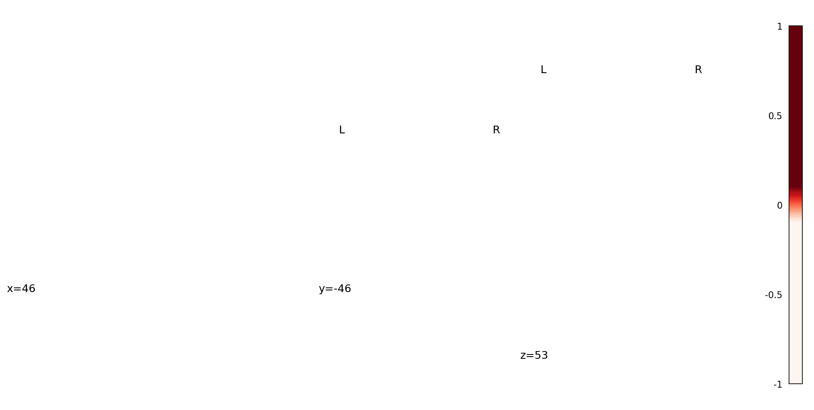
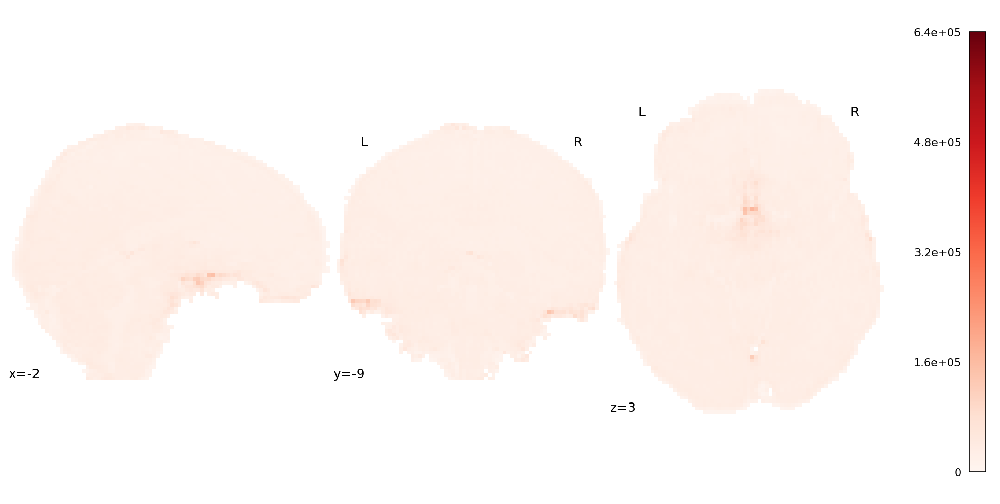
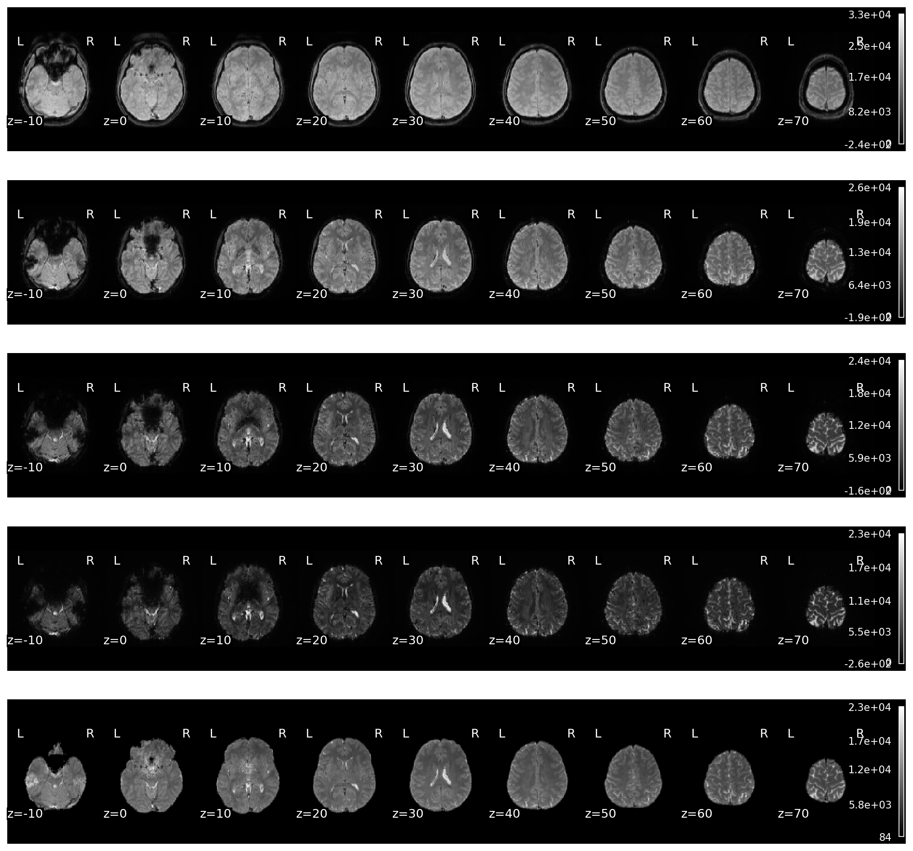
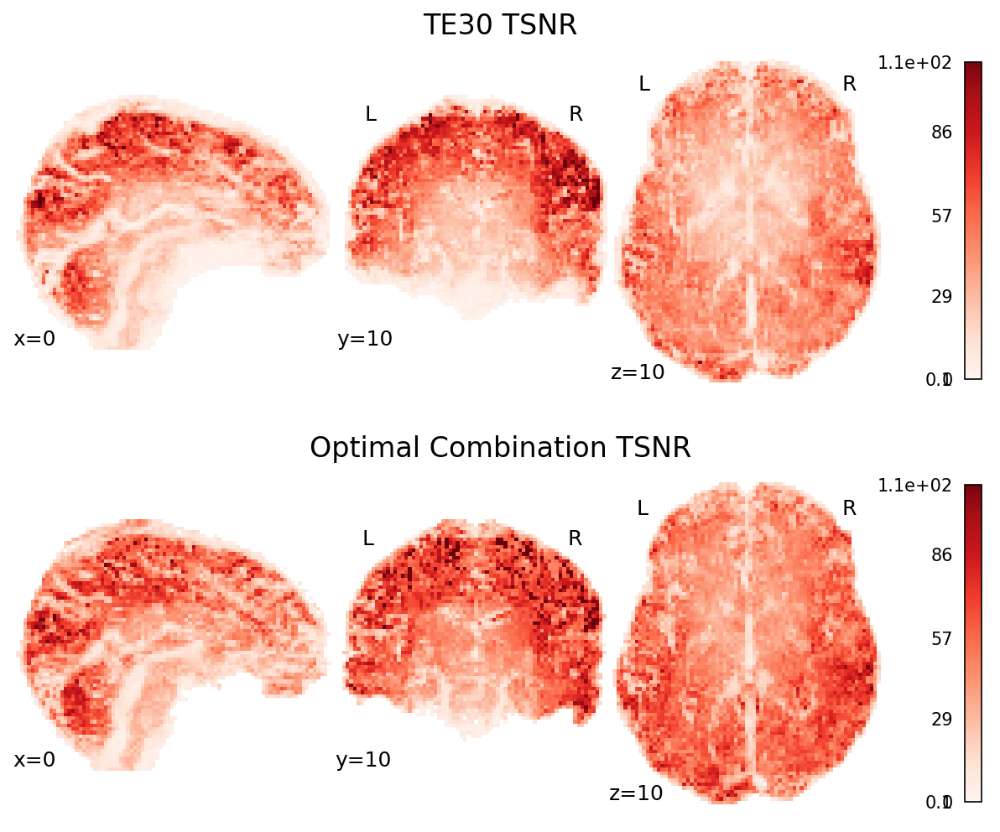
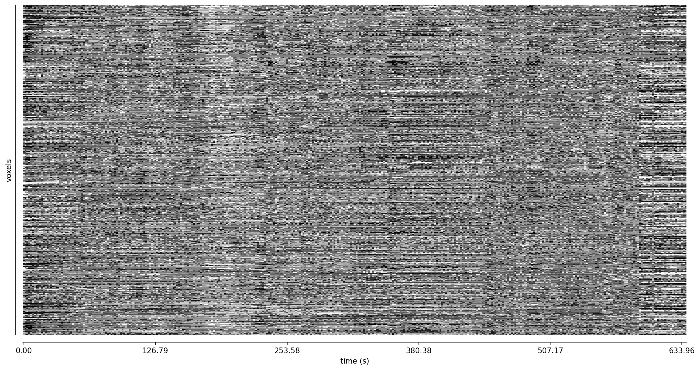

Optimal combination with t2smap#
Use t2smap [DuPre et al., 2021] to combine data.
import json
import os
from glob import glob
import matplotlib.pyplot as plt
import nibabel as nb
import numpy as np
from book_utils import glue_figure, load_pafin
from nilearn import image, masking, plotting
from tedana import workflows
data_path = os.path.abspath('../data')
/mnt/c/Users/tsalo/Documents/ME-ICA/multi-echo-data-analysis/meda/lib/python3.10/site-packages/tqdm/auto.py:21: TqdmWarning: IProgress not found. Please update jupyter and ipywidgets. See https://ipywidgets.readthedocs.io/en/stable/user_install.html
from .autonotebook import tqdm as notebook_tqdm
data = load_pafin(data_path)
out_dir = os.path.join(data_path, "t2smap")
workflows.t2smap_workflow(
data['echo_files'],
data['echo_times'],
out_dir=out_dir,
mask=data['mask'],
prefix="sub-24053_ses-1_task-rat_dir-PA_run-01",
fittype="curvefit",
overwrite=True,
)
Show code cell output
Hide code cell output
INFO t2smap:t2smap_workflow:337 Using output directory: /mnt/c/Users/tsalo/Documents/ME-ICA/multi-echo-data-analysis/data/t2smap
INFO utils:check_te_values:794 TE values appear to be in seconds. Converting to milliseconds for internal use.
INFO utils:load_mask:918 Using user-defined mask
INFO t2smap:t2smap_workflow:398 Loading input data: ['/mnt/c/Users/tsalo/Documents/ME-ICA/multi-echo-data-analysis/data/ds006185/sub-24053/ses-1/func/sub-24053_ses-1_task-rat_dir-PA_run-01_echo-1_part-mag_desc-preproc_bold.nii.gz', '/mnt/c/Users/tsalo/Documents/ME-ICA/multi-echo-data-analysis/data/ds006185/sub-24053/ses-1/func/sub-24053_ses-1_task-rat_dir-PA_run-01_echo-2_part-mag_desc-preproc_bold.nii.gz', '/mnt/c/Users/tsalo/Documents/ME-ICA/multi-echo-data-analysis/data/ds006185/sub-24053/ses-1/func/sub-24053_ses-1_task-rat_dir-PA_run-01_echo-3_part-mag_desc-preproc_bold.nii.gz', '/mnt/c/Users/tsalo/Documents/ME-ICA/multi-echo-data-analysis/data/ds006185/sub-24053/ses-1/func/sub-24053_ses-1_task-rat_dir-PA_run-01_echo-4_part-mag_desc-preproc_bold.nii.gz', '/mnt/c/Users/tsalo/Documents/ME-ICA/multi-echo-data-analysis/data/ds006185/sub-24053/ses-1/func/sub-24053_ses-1_task-rat_dir-PA_run-01_echo-5_part-mag_desc-preproc_bold.nii.gz']
INFO utils:make_adaptive_mask:168 Echo-wise intensity thresholds for adaptive mask: [5390.2476 3376.5105 1811.7682 1076.2314 610.8774]
WARNING utils:make_adaptive_mask:196 9757 voxels in user-defined mask do not have good signal. Removing voxels from mask.
INFO t2smap:t2smap_workflow:428 Computing T2* map
2-echo monoexponential: 0%| | 0/14135 [00:00<?, ?it/s]
2-echo monoexponential: 1%|█▏ | 132/14135 [00:00<00:10, 1319.02it/s]
2-echo monoexponential: 2%|██▍ | 271/14135 [00:00<00:10, 1357.38it/s]
2-echo monoexponential: 3%|███▊ | 411/14135 [00:00<00:09, 1374.51it/s]
2-echo monoexponential: 4%|█████▍ | 592/14135 [00:00<00:08, 1545.63it/s]
2-echo monoexponential: 5%|███████ | 775/14135 [00:00<00:08, 1646.66it/s]
2-echo monoexponential: 7%|████████▊ | 962/14135 [00:00<00:07, 1722.07it/s]
2-echo monoexponential: 8%|██████████▎ | 1141/14135 [00:00<00:07, 1741.35it/s]
2-echo monoexponential: 9%|████████████ | 1328/14135 [00:00<00:07, 1781.10it/s]
2-echo monoexponential: 11%|█████████████▋ | 1508/14135 [00:00<00:07, 1784.25it/s]
2-echo monoexponential: 12%|███████████████▎ | 1689/14135 [00:01<00:06, 1789.97it/s]
2-echo monoexponential: 13%|████████████████▉ | 1868/14135 [00:01<00:06, 1760.14it/s]
2-echo monoexponential: 14%|██████████████████▌ | 2045/14135 [00:01<00:06, 1745.39it/s]
2-echo monoexponential: 16%|████████████████████ | 2220/14135 [00:01<00:07, 1626.04it/s]
2-echo monoexponential: 17%|█████████████████████▋ | 2401/14135 [00:01<00:07, 1675.82it/s]
2-echo monoexponential: 18%|███████████████████████▍ | 2583/14135 [00:01<00:06, 1715.32it/s]
2-echo monoexponential: 19%|████████████████████████▉ | 2756/14135 [00:01<00:07, 1592.39it/s]
2-echo monoexponential: 21%|██████████████████████████▌ | 2929/14135 [00:01<00:06, 1629.24it/s]
2-echo monoexponential: 22%|████████████████████████████▏ | 3107/14135 [00:01<00:06, 1667.81it/s]
2-echo monoexponential: 23%|█████████████████████████████▋ | 3276/14135 [00:01<00:06, 1618.68it/s]
2-echo monoexponential: 24%|███████████████████████████████▎ | 3459/14135 [00:02<00:06, 1676.76it/s]
2-echo monoexponential: 26%|████████████████████████████████▉ | 3644/14135 [00:02<00:06, 1725.07it/s]
2-echo monoexponential: 27%|██████████████████████████████████▌ | 3818/14135 [00:02<00:05, 1721.25it/s]
2-echo monoexponential: 28%|████████████████████████████████████▏ | 3991/14135 [00:02<00:05, 1720.25it/s]
2-echo monoexponential: 30%|█████████████████████████████████████▊ | 4170/14135 [00:02<00:05, 1740.40it/s]
2-echo monoexponential: 31%|███████████████████████████████████████▎ | 4345/14135 [00:02<00:05, 1727.95it/s]
2-echo monoexponential: 32%|████████████████████████████████████████▉ | 4519/14135 [00:02<00:05, 1691.47it/s]
2-echo monoexponential: 33%|██████████████████████████████████████████▌ | 4697/14135 [00:02<00:05, 1716.66it/s]
2-echo monoexponential: 35%|████████████████████████████████████████████▏ | 4885/14135 [00:02<00:05, 1762.04it/s]
2-echo monoexponential: 36%|█████████████████████████████████████████████▊ | 5062/14135 [00:02<00:05, 1734.81it/s]
2-echo monoexponential: 37%|███████████████████████████████████████████████▍ | 5242/14135 [00:03<00:05, 1753.49it/s]
2-echo monoexponential: 38%|█████████████████████████████████████████████████ | 5418/14135 [00:03<00:04, 1745.00it/s]
2-echo monoexponential: 40%|██████████████████████████████████████████████████▋ | 5595/14135 [00:03<00:04, 1749.49it/s]
2-echo monoexponential: 41%|████████████████████████████████████████████████████▎ | 5771/14135 [00:03<00:05, 1609.74it/s]
2-echo monoexponential: 42%|█████████████████████████████████████████████████████▊ | 5945/14135 [00:03<00:04, 1644.29it/s]
2-echo monoexponential: 43%|███████████████████████████████████████████████████████▎ | 6112/14135 [00:03<00:05, 1534.51it/s]
2-echo monoexponential: 44%|████████████████████████████████████████████████████████▊ | 6275/14135 [00:03<00:05, 1560.20it/s]
2-echo monoexponential: 46%|██████████████████████████████████████████████████████████▎ | 6444/14135 [00:03<00:04, 1596.46it/s]
2-echo monoexponential: 47%|███████████████████████████████████████████████████████████▉ | 6616/14135 [00:03<00:04, 1627.98it/s]
2-echo monoexponential: 48%|█████████████████████████████████████████████████████████████▍ | 6781/14135 [00:04<00:04, 1605.11it/s]
2-echo monoexponential: 49%|██████████████████████████████████████████████████████████████▊ | 6943/14135 [00:04<00:04, 1540.04it/s]
2-echo monoexponential: 50%|████████████████████████████████████████████████████████████████▍ | 7113/14135 [00:04<00:04, 1584.52it/s]
2-echo monoexponential: 52%|█████████████████████████████████████████████████████████████████▉ | 7284/14135 [00:04<00:04, 1619.15it/s]
2-echo monoexponential: 53%|███████████████████████████████████████████████████████████████████▍ | 7447/14135 [00:04<00:04, 1612.86it/s]
2-echo monoexponential: 54%|████████████████████████████████████████████████████████████████████▉ | 7619/14135 [00:04<00:03, 1643.53it/s]
2-echo monoexponential: 55%|██████████████████████████████████████████████████████████████████████▌ | 7792/14135 [00:04<00:03, 1668.71it/s]
2-echo monoexponential: 56%|████████████████████████████████████████████████████████████████████████ | 7960/14135 [00:04<00:03, 1669.62it/s]
2-echo monoexponential: 58%|█████████████████████████████████████████████████████████████████████████▌ | 8128/14135 [00:04<00:03, 1564.12it/s]
2-echo monoexponential: 59%|███████████████████████████████████████████████████████████████████████████ | 8293/14135 [00:05<00:03, 1587.55it/s]
2-echo monoexponential: 60%|████████████████████████████████████████████████████████████████████████████▋ | 8465/14135 [00:05<00:03, 1624.52it/s]
2-echo monoexponential: 61%|██████████████████████████████████████████████████████████████████████████████▏ | 8629/14135 [00:05<00:03, 1625.36it/s]
2-echo monoexponential: 62%|███████████████████████████████████████████████████████████████████████████████▋ | 8797/14135 [00:05<00:03, 1639.10it/s]
2-echo monoexponential: 63%|█████████████████████████████████████████████████████████████████████████████████▏ | 8969/14135 [00:05<00:03, 1660.13it/s]
2-echo monoexponential: 65%|██████████████████████████████████████████████████████████████████████████████████▋ | 9136/14135 [00:05<00:03, 1653.10it/s]
2-echo monoexponential: 66%|████████████████████████████████████████████████████████████████████████████████████▏ | 9302/14135 [00:05<00:03, 1561.69it/s]
2-echo monoexponential: 67%|█████████████████████████████████████████████████████████████████████████████████████▋ | 9468/14135 [00:05<00:02, 1588.13it/s]
2-echo monoexponential: 68%|███████████████████████████████████████████████████████████████████████████████████████▎ | 9637/14135 [00:05<00:02, 1615.32it/s]
2-echo monoexponential: 69%|████████████████████████████████████████████████████████████████████████████████████████▋ | 9800/14135 [00:05<00:02, 1513.99it/s]
2-echo monoexponential: 71%|██████████████████████████████████████████████████████████████████████████████████████████▎ | 9973/14135 [00:06<00:02, 1572.37it/s]
2-echo monoexponential: 72%|███████████████████████████████████████████████████████████████████████████████████████████ | 10141/14135 [00:06<00:02, 1602.90it/s]
2-echo monoexponential: 73%|████████████████████████████████████████████████████████████████████████████████████████████▌ | 10303/14135 [00:06<00:02, 1448.51it/s]
2-echo monoexponential: 74%|██████████████████████████████████████████████████████████████████████████████████████████████ | 10468/14135 [00:06<00:02, 1503.13it/s]
2-echo monoexponential: 75%|███████████████████████████████████████████████████████████████████████████████████████████████▌ | 10642/14135 [00:06<00:02, 1569.28it/s]
2-echo monoexponential: 76%|█████████████████████████████████████████████████████████████████████████████████████████████████ | 10802/14135 [00:06<00:02, 1490.33it/s]
2-echo monoexponential: 78%|██████████████████████████████████████████████████████████████████████████████████████████████████▌ | 10976/14135 [00:06<00:02, 1557.40it/s]
2-echo monoexponential: 79%|████████████████████████████████████████████████████████████████████████████████████████████████████ | 11134/14135 [00:06<00:01, 1503.88it/s]
2-echo monoexponential: 80%|█████████████████████████████████████████████████████████████████████████████████████████████████████▌ | 11305/14135 [00:06<00:01, 1561.58it/s]
2-echo monoexponential: 81%|███████████████████████████████████████████████████████████████████████████████████████████████████████▏ | 11491/14135 [00:07<00:01, 1645.62it/s]
2-echo monoexponential: 83%|████████████████████████████████████████████████████████████████████████████████████████████████████████▊ | 11670/14135 [00:07<00:01, 1685.49it/s]
2-echo monoexponential: 84%|██████████████████████████████████████████████████████████████████████████████████████████████████████████▍ | 11840/14135 [00:07<00:01, 1604.78it/s]
2-echo monoexponential: 85%|████████████████████████████████████████████████████████████████████████████████████████████████████████████ | 12025/14135 [00:07<00:01, 1672.79it/s]
2-echo monoexponential: 86%|█████████████████████████████████████████████████████████████████████████████████████████████████████████████▋ | 12202/14135 [00:07<00:01, 1699.31it/s]
2-echo monoexponential: 88%|███████████████████████████████████████████████████████████████████████████████████████████████████████████████▏ | 12375/14135 [00:07<00:01, 1707.83it/s]
2-echo monoexponential: 89%|████████████████████████████████████████████████████████████████████████████████████████████████████████████████▊ | 12553/14135 [00:07<00:00, 1729.03it/s]
2-echo monoexponential: 90%|██████████████████████████████████████████████████████████████████████████████████████████████████████████████████▍ | 12731/14135 [00:07<00:00, 1741.30it/s]
2-echo monoexponential: 91%|████████████████████████████████████████████████████████████████████████████████████████████████████████████████████ | 12912/14135 [00:07<00:00, 1760.92it/s]
2-echo monoexponential: 93%|█████████████████████████████████████████████████████████████████████████████████████████████████████████████████████▋ | 13094/14135 [00:07<00:00, 1775.04it/s]
2-echo monoexponential: 94%|███████████████████████████████████████████████████████████████████████████████████████████████████████████████████████▏ | 13272/14135 [00:08<00:00, 1776.45it/s]
2-echo monoexponential: 95%|████████████████████████████████████████████████████████████████████████████████████████████████████████████████████████▊ | 13450/14135 [00:08<00:00, 1705.95it/s]
2-echo monoexponential: 96%|██████████████████████████████████████████████████████████████████████████████████████████████████████████████████████████▍ | 13626/14135 [00:08<00:00, 1720.03it/s]
2-echo monoexponential: 98%|████████████████████████████████████████████████████████████████████████████████████████████████████████████████████████████ | 13802/14135 [00:08<00:00, 1730.32it/s]
2-echo monoexponential: 99%|█████████████████████████████████████████████████████████████████████████████████████████████████████████████████████████████▌ | 13976/14135 [00:08<00:00, 1602.38it/s]
2-echo monoexponential: 100%|███████████████████████████████████████████████████████████████████████████████████████████████████████████████████████████████| 14135/14135 [00:08<00:00, 1647.61it/s]
3-echo monoexponential: 0%| | 0/7655 [00:00<?, ?it/s]
3-echo monoexponential: 1%|█▉ | 111/7655 [00:00<00:06, 1100.71it/s]
3-echo monoexponential: 3%|███▊ | 222/7655 [00:00<00:07, 1058.39it/s]
3-echo monoexponential: 4%|█████▌ | 330/7655 [00:00<00:06, 1066.65it/s]
3-echo monoexponential: 6%|███████▍ | 440/7655 [00:00<00:06, 1076.69it/s]
3-echo monoexponential: 7%|█████████▍ | 556/7655 [00:00<00:06, 1104.66it/s]
3-echo monoexponential: 9%|███████████▍ | 671/7655 [00:00<00:06, 1117.92it/s]
3-echo monoexponential: 10%|█████████████▎ | 783/7655 [00:00<00:06, 1104.55it/s]
3-echo monoexponential: 12%|███████████████▏ | 896/7655 [00:00<00:06, 1110.44it/s]
3-echo monoexponential: 13%|████████████████▉ | 1008/7655 [00:00<00:06, 1105.21it/s]
3-echo monoexponential: 15%|██████████████████▊ | 1120/7655 [00:01<00:05, 1108.54it/s]
3-echo monoexponential: 16%|████████████████████▋ | 1231/7655 [00:01<00:05, 1097.23it/s]
3-echo monoexponential: 18%|██████████████████████▌ | 1341/7655 [00:01<00:05, 1096.34it/s]
3-echo monoexponential: 19%|████████████████████████▍ | 1453/7655 [00:01<00:05, 1102.11it/s]
3-echo monoexponential: 20%|██████████████████████████▍ | 1566/7655 [00:01<00:05, 1108.20it/s]
3-echo monoexponential: 22%|████████████████████████████▎ | 1677/7655 [00:01<00:05, 1103.29it/s]
3-echo monoexponential: 23%|██████████████████████████████▏ | 1788/7655 [00:01<00:05, 1098.34it/s]
3-echo monoexponential: 25%|████████████████████████████████ | 1900/7655 [00:01<00:05, 1101.82it/s]
3-echo monoexponential: 26%|█████████████████████████████████▉ | 2011/7655 [00:01<00:05, 1088.64it/s]
3-echo monoexponential: 28%|███████████████████████████████████▋ | 2120/7655 [00:01<00:05, 1081.62it/s]
3-echo monoexponential: 29%|█████████████████████████████████████▌ | 2229/7655 [00:02<00:05, 1051.56it/s]
3-echo monoexponential: 31%|███████████████████████████████████████▍ | 2339/7655 [00:02<00:05, 1061.93it/s]
3-echo monoexponential: 32%|█████████████████████████████████████████▏ | 2446/7655 [00:02<00:04, 1062.79it/s]
3-echo monoexponential: 33%|███████████████████████████████████████████ | 2558/7655 [00:02<00:04, 1076.36it/s]
3-echo monoexponential: 35%|████████████████████████████████████████████▉ | 2669/7655 [00:02<00:04, 1084.00it/s]
3-echo monoexponential: 36%|██████████████████████████████████████████████▉ | 2783/7655 [00:02<00:04, 1097.62it/s]
3-echo monoexponential: 38%|████████████████████████████████████████████████▊ | 2899/7655 [00:02<00:04, 1113.23it/s]
3-echo monoexponential: 39%|██████████████████████████████████████████████████▊ | 3013/7655 [00:02<00:04, 1120.14it/s]
3-echo monoexponential: 41%|████████████████████████████████████████████████████▋ | 3126/7655 [00:02<00:04, 1101.64it/s]
3-echo monoexponential: 42%|██████████████████████████████████████████████████████▌ | 3240/7655 [00:02<00:03, 1109.76it/s]
3-echo monoexponential: 44%|████████████████████████████████████████████████████████▌ | 3360/7655 [00:03<00:03, 1135.34it/s]
3-echo monoexponential: 45%|██████████████████████████████████████████████████████████▌ | 3474/7655 [00:03<00:03, 1126.25it/s]
3-echo monoexponential: 47%|████████████████████████████████████████████████████████████▍ | 3587/7655 [00:03<00:03, 1108.99it/s]
3-echo monoexponential: 48%|██████████████████████████████████████████████████████████████▎ | 3698/7655 [00:03<00:03, 1097.68it/s]
3-echo monoexponential: 50%|████████████████████████████████████████████████████████████████▏ | 3808/7655 [00:03<00:03, 1092.03it/s]
3-echo monoexponential: 51%|██████████████████████████████████████████████████████████████████ | 3923/7655 [00:03<00:03, 1106.97it/s]
3-echo monoexponential: 53%|███████████████████████████████████████████████████████████████████▉ | 4034/7655 [00:03<00:03, 1094.04it/s]
3-echo monoexponential: 54%|█████████████████████████████████████████████████████████████████████▉ | 4153/7655 [00:03<00:03, 1120.73it/s]
3-echo monoexponential: 56%|███████████████████████████████████████████████████████████████████████▉ | 4266/7655 [00:03<00:03, 1101.05it/s]
3-echo monoexponential: 57%|█████████████████████████████████████████████████████████████████████████▊ | 4377/7655 [00:03<00:02, 1100.99it/s]
3-echo monoexponential: 59%|███████████████████████████████████████████████████████████████████████████▋ | 4490/7655 [00:04<00:02, 1107.74it/s]
3-echo monoexponential: 60%|█████████████████████████████████████████████████████████████████████████████▌ | 4602/7655 [00:04<00:02, 1110.94it/s]
3-echo monoexponential: 62%|███████████████████████████████████████████████████████████████████████████████▍ | 4716/7655 [00:04<00:02, 1117.95it/s]
3-echo monoexponential: 63%|█████████████████████████████████████████████████████████████████████████████████▍ | 4829/7655 [00:04<00:02, 1118.80it/s]
3-echo monoexponential: 65%|███████████████████████████████████████████████████████████████████████████████████▎ | 4944/7655 [00:04<00:02, 1127.66it/s]
3-echo monoexponential: 66%|█████████████████████████████████████████████████████████████████████████████████████▎ | 5059/7655 [00:04<00:02, 1132.94it/s]
3-echo monoexponential: 68%|███████████████████████████████████████████████████████████████████████████████████████▏ | 5173/7655 [00:04<00:02, 1099.29it/s]
3-echo monoexponential: 69%|█████████████████████████████████████████████████████████████████████████████████████████ | 5286/7655 [00:04<00:02, 1107.05it/s]
3-echo monoexponential: 71%|██████████████████████████████████████████████████████████████████████████████████████████▉ | 5397/7655 [00:04<00:02, 1091.02it/s]
3-echo monoexponential: 72%|████████████████████████████████████████████████████████████████████████████████████████████▊ | 5507/7655 [00:05<00:01, 1091.94it/s]
3-echo monoexponential: 73%|██████████████████████████████████████████████████████████████████████████████████████████████▋ | 5619/7655 [00:05<00:01, 1098.80it/s]
3-echo monoexponential: 75%|████████████████████████████████████████████████████████████████████████████████████████████████▌ | 5729/7655 [00:05<00:01, 1079.47it/s]
3-echo monoexponential: 76%|██████████████████████████████████████████████████████████████████████████████████████████████████▍ | 5838/7655 [00:05<00:01, 1072.95it/s]
3-echo monoexponential: 78%|████████████████████████████████████████████████████████████████████████████████████████████████████▎ | 5950/7655 [00:05<00:01, 1085.60it/s]
3-echo monoexponential: 79%|██████████████████████████████████████████████████████████████████████████████████████████████████████ | 6060/7655 [00:05<00:01, 1089.44it/s]
3-echo monoexponential: 81%|████████████████████████████████████████████████████████████████████████████████████████████████████████ | 6175/7655 [00:05<00:01, 1104.57it/s]
3-echo monoexponential: 82%|█████████████████████████████████████████████████████████████████████████████████████████████████████████▉ | 6286/7655 [00:05<00:01, 1098.95it/s]
3-echo monoexponential: 84%|███████████████████████████████████████████████████████████████████████████████████████████████████████████▊ | 6398/7655 [00:05<00:01, 1104.08it/s]
3-echo monoexponential: 85%|█████████████████████████████████████████████████████████████████████████████████████████████████████████████▋ | 6509/7655 [00:05<00:01, 1089.88it/s]
3-echo monoexponential: 86%|███████████████████████████████████████████████████████████████████████████████████████████████████████████████▌ | 6620/7655 [00:06<00:00, 1095.50it/s]
3-echo monoexponential: 88%|█████████████████████████████████████████████████████████████████████████████████████████████████████████████████▍ | 6730/7655 [00:06<00:00, 1073.60it/s]
3-echo monoexponential: 89%|███████████████████████████████████████████████████████████████████████████████████████████████████████████████████▏ | 6838/7655 [00:06<00:00, 1075.29it/s]
3-echo monoexponential: 91%|█████████████████████████████████████████████████████████████████████████████████████████████████████████████████████ | 6950/7655 [00:06<00:00, 1086.81it/s]
3-echo monoexponential: 92%|██████████████████████████████████████████████████████████████████████████████████████████████████████████████████████▉ | 7059/7655 [00:06<00:00, 1084.40it/s]
3-echo monoexponential: 94%|████████████████████████████████████████████████████████████████████████████████████████████████████████████████████████▊ | 7168/7655 [00:06<00:00, 1077.99it/s]
3-echo monoexponential: 95%|██████████████████████████████████████████████████████████████████████████████████████████████████████████████████████████▊ | 7285/7655 [00:06<00:00, 1103.89it/s]
3-echo monoexponential: 97%|████████████████████████████████████████████████████████████████████████████████████████████████████████████████████████████▊ | 7404/7655 [00:06<00:00, 1126.85it/s]
3-echo monoexponential: 98%|██████████████████████████████████████████████████████████████████████████████████████████████████████████████████████████████▋ | 7517/7655 [00:06<00:00, 1124.87it/s]
3-echo monoexponential: 100%|████████████████████████████████████████████████████████████████████████████████████████████████████████████████████████████████▌| 7630/7655 [00:06<00:00, 1121.92it/s]
3-echo monoexponential: 100%|█████████████████████████████████████████████████████████████████████████████████████████████████████████████████████████████████| 7655/7655 [00:06<00:00, 1099.65it/s]
4-echo monoexponential: 0%| | 0/8608 [00:00<?, ?it/s]
4-echo monoexponential: 1%|█▌ | 101/8608 [00:00<00:08, 1007.98it/s]
4-echo monoexponential: 2%|███ | 202/8608 [00:00<00:08, 987.61it/s]
4-echo monoexponential: 3%|████▌ | 301/8608 [00:00<00:08, 974.89it/s]
4-echo monoexponential: 5%|██████▏ | 404/8608 [00:00<00:08, 994.29it/s]
4-echo monoexponential: 6%|███████▋ | 504/8608 [00:00<00:08, 977.47it/s]
4-echo monoexponential: 7%|█████████▏ | 606/8608 [00:00<00:08, 989.40it/s]
4-echo monoexponential: 8%|██████████▋ | 705/8608 [00:00<00:08, 978.72it/s]
4-echo monoexponential: 9%|████████████▏ | 804/8608 [00:00<00:07, 979.66it/s]
4-echo monoexponential: 10%|█████████████▋ | 903/8608 [00:00<00:07, 972.87it/s]
4-echo monoexponential: 12%|███████████████▏ | 1003/8608 [00:01<00:07, 978.65it/s]
4-echo monoexponential: 13%|████████████████▋ | 1101/8608 [00:01<00:07, 973.01it/s]
4-echo monoexponential: 14%|██████████████████ | 1199/8608 [00:01<00:07, 967.87it/s]
4-echo monoexponential: 15%|███████████████████▋ | 1300/8608 [00:01<00:07, 977.82it/s]
4-echo monoexponential: 16%|█████████████████████ | 1398/8608 [00:01<00:07, 975.87it/s]
4-echo monoexponential: 17%|██████████████████████▌ | 1498/8608 [00:01<00:07, 981.44it/s]
4-echo monoexponential: 19%|████████████████████████▏ | 1600/8608 [00:01<00:07, 991.96it/s]
4-echo monoexponential: 20%|█████████████████████████▋ | 1701/8608 [00:01<00:06, 995.63it/s]
4-echo monoexponential: 21%|███████████████████████████▏ | 1802/8608 [00:01<00:06, 999.22it/s]
4-echo monoexponential: 22%|████████████████████████████▋ | 1902/8608 [00:01<00:06, 989.24it/s]
4-echo monoexponential: 23%|██████████████████████████████▏ | 2002/8608 [00:02<00:06, 990.79it/s]
4-echo monoexponential: 24%|███████████████████████████████▋ | 2102/8608 [00:02<00:06, 947.92it/s]
4-echo monoexponential: 26%|█████████████████████████████████▏ | 2198/8608 [00:02<00:06, 921.78it/s]
4-echo monoexponential: 27%|██████████████████████████████████▌ | 2291/8608 [00:02<00:07, 901.80it/s]
4-echo monoexponential: 28%|███████████████████████████████████▉ | 2382/8608 [00:02<00:06, 894.94it/s]
4-echo monoexponential: 29%|█████████████████████████████████████▎ | 2472/8608 [00:02<00:06, 883.96it/s]
4-echo monoexponential: 30%|██████████████████████████████████████▋ | 2563/8608 [00:02<00:06, 890.23it/s]
4-echo monoexponential: 31%|████████████████████████████████████████▎ | 2666/8608 [00:02<00:06, 930.76it/s]
4-echo monoexponential: 32%|█████████████████████████████████████████▋ | 2760/8608 [00:02<00:06, 928.38it/s]
4-echo monoexponential: 33%|███████████████████████████████████████████▎ | 2864/8608 [00:02<00:05, 958.12it/s]
4-echo monoexponential: 34%|████████████████████████████████████████████▊ | 2964/8608 [00:03<00:05, 969.09it/s]
4-echo monoexponential: 36%|██████████████████████████████████████████████▏ | 3062/8608 [00:03<00:05, 962.69it/s]
4-echo monoexponential: 37%|███████████████████████████████████████████████▋ | 3159/8608 [00:03<00:05, 950.67it/s]
4-echo monoexponential: 38%|█████████████████████████████████████████████████▏ | 3255/8608 [00:03<00:05, 948.97it/s]
4-echo monoexponential: 39%|██████████████████████████████████████████████████▋ | 3354/8608 [00:03<00:05, 958.70it/s]
4-echo monoexponential: 40%|████████████████████████████████████████████████████ | 3450/8608 [00:03<00:05, 952.19it/s]
4-echo monoexponential: 41%|█████████████████████████████████████████████████████▌ | 3546/8608 [00:03<00:05, 932.52it/s]
4-echo monoexponential: 42%|██████████████████████████████████████████████████████▉ | 3640/8608 [00:03<00:05, 919.19it/s]
4-echo monoexponential: 43%|████████████████████████████████████████████████████████▍ | 3733/8608 [00:03<00:05, 868.38it/s]
4-echo monoexponential: 44%|█████████████████████████████████████████████████████████▋ | 3821/8608 [00:04<00:05, 858.79it/s]
4-echo monoexponential: 45%|███████████████████████████████████████████████████████████ | 3909/8608 [00:04<00:05, 864.54it/s]
4-echo monoexponential: 46%|████████████████████████████████████████████████████████████▍ | 4000/8608 [00:04<00:05, 874.28it/s]
4-echo monoexponential: 47%|█████████████████████████████████████████████████████████████▋ | 4088/8608 [00:04<00:05, 870.34it/s]
4-echo monoexponential: 49%|███████████████████████████████████████████████████████████████▏ | 4186/8608 [00:04<00:04, 900.58it/s]
4-echo monoexponential: 50%|████████████████████████████████████████████████████████████████▊ | 4288/8608 [00:04<00:04, 935.17it/s]
4-echo monoexponential: 51%|██████████████████████████████████████████████████████████████████▎ | 4387/8608 [00:04<00:04, 948.38it/s]
4-echo monoexponential: 52%|███████████████████████████████████████████████████████████████████▋ | 4482/8608 [00:04<00:04, 940.95it/s]
4-echo monoexponential: 53%|█████████████████████████████████████████████████████████████████████▏ | 4578/8608 [00:04<00:04, 945.64it/s]
4-echo monoexponential: 54%|██████████████████████████████████████████████████████████████████████▌ | 4676/8608 [00:04<00:04, 954.82it/s]
4-echo monoexponential: 55%|████████████████████████████████████████████████████████████████████████▏ | 4777/8608 [00:05<00:03, 968.27it/s]
4-echo monoexponential: 57%|█████████████████████████████████████████████████████████████████████████▋ | 4876/8608 [00:05<00:03, 972.01it/s]
4-echo monoexponential: 58%|███████████████████████████████████████████████████████████████████████████▏ | 4976/8608 [00:05<00:03, 976.91it/s]
4-echo monoexponential: 59%|████████████████████████████████████████████████████████████████████████████▋ | 5074/8608 [00:05<00:03, 975.55it/s]
4-echo monoexponential: 60%|██████████████████████████████████████████████████████████████████████████████ | 5172/8608 [00:05<00:03, 957.74it/s]
4-echo monoexponential: 61%|███████████████████████████████████████████████████████████████████████████████▌ | 5271/8608 [00:05<00:03, 964.03it/s]
4-echo monoexponential: 62%|█████████████████████████████████████████████████████████████████████████████████ | 5368/8608 [00:05<00:03, 958.56it/s]
4-echo monoexponential: 63%|██████████████████████████████████████████████████████████████████████████████████▌ | 5466/8608 [00:05<00:03, 962.81it/s]
4-echo monoexponential: 65%|████████████████████████████████████████████████████████████████████████████████████ | 5564/8608 [00:05<00:03, 965.49it/s]
4-echo monoexponential: 66%|█████████████████████████████████████████████████████████████████████████████████████▍ | 5661/8608 [00:05<00:03, 958.84it/s]
4-echo monoexponential: 67%|██████████████████████████████████████████████████████████████████████████████████████▉ | 5757/8608 [00:06<00:02, 952.48it/s]
4-echo monoexponential: 68%|████████████████████████████████████████████████████████████████████████████████████████▍ | 5853/8608 [00:06<00:02, 944.14it/s]
4-echo monoexponential: 69%|█████████████████████████████████████████████████████████████████████████████████████████▊ | 5948/8608 [00:06<00:02, 943.62it/s]
4-echo monoexponential: 70%|███████████████████████████████████████████████████████████████████████████████████████████▎ | 6043/8608 [00:06<00:02, 930.43it/s]
4-echo monoexponential: 71%|████████████████████████████████████████████████████████████████████████████████████████████▋ | 6139/8608 [00:06<00:02, 937.67it/s]
4-echo monoexponential: 72%|██████████████████████████████████████████████████████████████████████████████████████████████▏ | 6240/8608 [00:06<00:02, 957.14it/s]
4-echo monoexponential: 74%|███████████████████████████████████████████████████████████████████████████████████████████████▊ | 6341/8608 [00:06<00:02, 971.88it/s]
4-echo monoexponential: 75%|█████████████████████████████████████████████████████████████████████████████████████████████████▎ | 6444/8608 [00:06<00:02, 987.53it/s]
4-echo monoexponential: 76%|██████████████████████████████████████████████████████████████████████████████████████████████████▊ | 6546/8608 [00:06<00:02, 996.66it/s]
4-echo monoexponential: 77%|████████████████████████████████████████████████████████████████████████████████████████████████████▎ | 6646/8608 [00:06<00:01, 981.36it/s]
4-echo monoexponential: 78%|█████████████████████████████████████████████████████████████████████████████████████████████████████▊ | 6745/8608 [00:07<00:01, 980.94it/s]
4-echo monoexponential: 80%|███████████████████████████████████████████████████████████████████████████████████████████████████████▎ | 6844/8608 [00:07<00:01, 959.23it/s]
4-echo monoexponential: 81%|████████████████████████████████████████████████████████████████████████████████████████████████████████▊ | 6941/8608 [00:07<00:01, 958.79it/s]
4-echo monoexponential: 82%|██████████████████████████████████████████████████████████████████████████████████████████████████████████▎ | 7042/8608 [00:07<00:01, 971.61it/s]
4-echo monoexponential: 83%|███████████████████████████████████████████████████████████████████████████████████████████████████████████▊ | 7141/8608 [00:07<00:01, 974.89it/s]
4-echo monoexponential: 84%|█████████████████████████████████████████████████████████████████████████████████████████████████████████████▎ | 7239/8608 [00:07<00:01, 957.26it/s]
4-echo monoexponential: 85%|██████████████████████████████████████████████████████████████████████████████████████████████████████████████▊ | 7335/8608 [00:07<00:01, 942.72it/s]
4-echo monoexponential: 86%|████████████████████████████████████████████████████████████████████████████████████████████████████████████████▏ | 7430/8608 [00:07<00:01, 943.20it/s]
4-echo monoexponential: 87%|█████████████████████████████████████████████████████████████████████████████████████████████████████████████████▋ | 7527/8608 [00:07<00:01, 948.97it/s]
4-echo monoexponential: 89%|███████████████████████████████████████████████████████████████████████████████████████████████████████████████████▏ | 7628/8608 [00:08<00:01, 964.36it/s]
4-echo monoexponential: 90%|████████████████████████████████████████████████████████████████████████████████████████████████████████████████████▋ | 7730/8608 [00:08<00:00, 979.43it/s]
4-echo monoexponential: 91%|██████████████████████████████████████████████████████████████████████████████████████████████████████████████████████▎ | 7833/8608 [00:08<00:00, 992.05it/s]
4-echo monoexponential: 92%|██████████████████████████████████████████████████████████████████████████████████████████████████████████████████████▉ | 7939/8608 [00:08<00:00, 1008.77it/s]
4-echo monoexponential: 93%|████████████████████████████████████████████████████████████████████████████████████████████████████████████████████████▌ | 8043/8608 [00:08<00:00, 1015.28it/s]
4-echo monoexponential: 95%|██████████████████████████████████████████████████████████████████████████████████████████████████████████████████████████ | 8145/8608 [00:08<00:00, 1006.43it/s]
4-echo monoexponential: 96%|███████████████████████████████████████████████████████████████████████████████████████████████████████████████████████████▌ | 8246/8608 [00:08<00:00, 1004.58it/s]
4-echo monoexponential: 97%|██████████████████████████████████████████████████████████████████████████████████████████████████████████████████████████████ | 8347/8608 [00:08<00:00, 999.58it/s]
4-echo monoexponential: 98%|███████████████████████████████████████████████████████████████████████████████████████████████████████████████████████████████▌ | 8447/8608 [00:08<00:00, 979.65it/s]
4-echo monoexponential: 99%|█████████████████████████████████████████████████████████████████████████████████████████████████████████████████████████████████ | 8546/8608 [00:08<00:00, 975.28it/s]
4-echo monoexponential: 100%|██████████████████████████████████████████████████████████████████████████████████████████████████████████████████████████████████| 8608/8608 [00:08<00:00, 957.27it/s]
5-echo monoexponential: 0%| | 0/180788 [00:00<?, ?it/s]
5-echo monoexponential: 0%| | 101/180788 [00:00<02:59, 1007.33it/s]
5-echo monoexponential: 0%|▏ | 202/180788 [00:00<03:12, 937.78it/s]
5-echo monoexponential: 0%|▏ | 297/180788 [00:00<03:12, 935.83it/s]
5-echo monoexponential: 0%|▎ | 392/180788 [00:00<03:11, 940.77it/s]
5-echo monoexponential: 0%|▎ | 492/180788 [00:00<03:07, 960.96it/s]
5-echo monoexponential: 0%|▍ | 591/180788 [00:00<03:05, 969.54it/s]
5-echo monoexponential: 0%|▍ | 692/180788 [00:00<03:03, 981.17it/s]
5-echo monoexponential: 0%|▌ | 797/180788 [00:00<03:00, 998.90it/s]
5-echo monoexponential: 0%|▋ | 897/180788 [00:00<03:06, 965.37it/s]
5-echo monoexponential: 1%|▋ | 994/180788 [00:01<03:07, 956.47it/s]
5-echo monoexponential: 1%|▊ | 1090/180788 [00:01<03:08, 953.40it/s]
5-echo monoexponential: 1%|▊ | 1190/180788 [00:01<03:06, 965.14it/s]
5-echo monoexponential: 1%|▉ | 1290/180788 [00:01<03:04, 975.14it/s]
5-echo monoexponential: 1%|▉ | 1390/180788 [00:01<03:02, 980.74it/s]
5-echo monoexponential: 1%|█ | 1491/180788 [00:01<03:01, 988.30it/s]
5-echo monoexponential: 1%|█▏ | 1590/180788 [00:01<03:05, 964.12it/s]
5-echo monoexponential: 1%|█▏ | 1687/180788 [00:01<03:06, 962.02it/s]
5-echo monoexponential: 1%|█▎ | 1790/180788 [00:01<03:02, 979.80it/s]
5-echo monoexponential: 1%|█▎ | 1889/180788 [00:01<03:03, 974.86it/s]
5-echo monoexponential: 1%|█▍ | 1992/180788 [00:02<03:00, 990.20it/s]
5-echo monoexponential: 1%|█▍ | 2095/180788 [00:02<02:58, 1001.32it/s]
5-echo monoexponential: 1%|█▌ | 2196/180788 [00:02<02:58, 1002.08it/s]
5-echo monoexponential: 1%|█▋ | 2297/180788 [00:02<03:00, 990.97it/s]
5-echo monoexponential: 1%|█▋ | 2397/180788 [00:02<03:00, 987.44it/s]
5-echo monoexponential: 1%|█▊ | 2496/180788 [00:02<03:03, 973.94it/s]
5-echo monoexponential: 1%|█▊ | 2594/180788 [00:02<03:03, 973.23it/s]
5-echo monoexponential: 1%|█▉ | 2708/180788 [00:02<02:54, 1020.16it/s]
5-echo monoexponential: 2%|█▉ | 2811/180788 [00:02<02:58, 999.06it/s]
5-echo monoexponential: 2%|██ | 2916/180788 [00:02<02:55, 1012.39it/s]
5-echo monoexponential: 2%|██▏ | 3028/180788 [00:03<02:50, 1043.32it/s]
5-echo monoexponential: 2%|██▏ | 3133/180788 [00:03<02:53, 1024.37it/s]
5-echo monoexponential: 2%|██▎ | 3236/180788 [00:03<02:55, 1012.77it/s]
5-echo monoexponential: 2%|██▎ | 3340/180788 [00:03<02:54, 1017.63it/s]
5-echo monoexponential: 2%|██▍ | 3442/180788 [00:03<02:57, 996.41it/s]
5-echo monoexponential: 2%|██▌ | 3542/180788 [00:03<03:02, 972.56it/s]
5-echo monoexponential: 2%|██▌ | 3652/180788 [00:03<02:55, 1007.30it/s]
5-echo monoexponential: 2%|██▋ | 3765/180788 [00:03<02:50, 1040.10it/s]
5-echo monoexponential: 2%|██▋ | 3870/180788 [00:03<02:52, 1022.81it/s]
5-echo monoexponential: 2%|██▊ | 3973/180788 [00:04<02:53, 1017.78it/s]
5-echo monoexponential: 2%|██▊ | 4089/180788 [00:04<02:47, 1058.04it/s]
5-echo monoexponential: 2%|██▉ | 4201/180788 [00:04<02:44, 1075.67it/s]
5-echo monoexponential: 2%|███ | 4315/180788 [00:04<02:42, 1087.53it/s]
5-echo monoexponential: 2%|███ | 4424/180788 [00:04<02:43, 1079.88it/s]
5-echo monoexponential: 3%|███▏ | 4533/180788 [00:04<02:42, 1082.85it/s]
5-echo monoexponential: 3%|███▎ | 4642/180788 [00:04<02:44, 1072.85it/s]
5-echo monoexponential: 3%|███▎ | 4750/180788 [00:04<02:48, 1042.92it/s]
5-echo monoexponential: 3%|███▍ | 4855/180788 [00:04<02:51, 1024.06it/s]
5-echo monoexponential: 3%|███▍ | 4966/180788 [00:04<02:48, 1044.85it/s]
5-echo monoexponential: 3%|███▌ | 5071/180788 [00:05<02:49, 1037.81it/s]
5-echo monoexponential: 3%|███▋ | 5175/180788 [00:05<02:51, 1024.79it/s]
5-echo monoexponential: 3%|███▋ | 5278/180788 [00:05<02:54, 1006.56it/s]
5-echo monoexponential: 3%|███▊ | 5382/180788 [00:05<02:52, 1015.74it/s]
5-echo monoexponential: 3%|███▊ | 5492/180788 [00:05<02:48, 1038.99it/s]
5-echo monoexponential: 3%|███▉ | 5604/180788 [00:05<02:44, 1062.08it/s]
5-echo monoexponential: 3%|████ | 5711/180788 [00:05<02:45, 1058.69it/s]
5-echo monoexponential: 3%|████ | 5817/180788 [00:05<02:46, 1052.00it/s]
5-echo monoexponential: 3%|████▏ | 5937/180788 [00:05<02:39, 1093.92it/s]
5-echo monoexponential: 3%|████▎ | 6056/180788 [00:05<02:36, 1118.47it/s]
5-echo monoexponential: 3%|████▎ | 6168/180788 [00:06<02:36, 1117.76it/s]
5-echo monoexponential: 3%|████▍ | 6280/180788 [00:06<02:38, 1099.25it/s]
5-echo monoexponential: 4%|████▍ | 6396/180788 [00:06<02:36, 1116.46it/s]
5-echo monoexponential: 4%|████▌ | 6508/180788 [00:06<02:36, 1110.74it/s]
5-echo monoexponential: 4%|████▋ | 6620/180788 [00:06<02:39, 1094.29it/s]
5-echo monoexponential: 4%|████▋ | 6730/180788 [00:06<02:42, 1069.52it/s]
5-echo monoexponential: 4%|████▊ | 6838/180788 [00:06<02:46, 1046.54it/s]
5-echo monoexponential: 4%|████▉ | 6956/180788 [00:06<02:40, 1083.21it/s]
5-echo monoexponential: 4%|████▉ | 7068/180788 [00:06<02:39, 1092.46it/s]
5-echo monoexponential: 4%|█████ | 7188/180788 [00:06<02:34, 1120.38it/s]
5-echo monoexponential: 4%|█████▏ | 7309/180788 [00:07<02:31, 1145.78it/s]
5-echo monoexponential: 4%|█████▏ | 7424/180788 [00:07<02:32, 1135.13it/s]
5-echo monoexponential: 4%|█████▎ | 7541/180788 [00:07<02:31, 1144.05it/s]
5-echo monoexponential: 4%|█████▍ | 7656/180788 [00:07<02:33, 1127.82it/s]
5-echo monoexponential: 4%|█████▍ | 7769/180788 [00:07<02:35, 1113.63it/s]
5-echo monoexponential: 4%|█████▌ | 7881/180788 [00:07<02:35, 1113.16it/s]
5-echo monoexponential: 4%|█████▌ | 7994/180788 [00:07<02:34, 1117.79it/s]
5-echo monoexponential: 4%|█████▋ | 8108/180788 [00:07<02:33, 1124.27it/s]
5-echo monoexponential: 5%|█████▊ | 8224/180788 [00:07<02:32, 1134.54it/s]
5-echo monoexponential: 5%|█████▊ | 8338/180788 [00:08<02:35, 1106.24it/s]
5-echo monoexponential: 5%|█████▉ | 8449/180788 [00:08<02:37, 1092.24it/s]
5-echo monoexponential: 5%|██████ | 8559/180788 [00:08<02:39, 1080.18it/s]
5-echo monoexponential: 5%|██████ | 8668/180788 [00:08<02:39, 1077.35it/s]
5-echo monoexponential: 5%|██████▏ | 8780/180788 [00:08<02:38, 1086.91it/s]
5-echo monoexponential: 5%|██████▎ | 8898/180788 [00:08<02:34, 1114.05it/s]
5-echo monoexponential: 5%|██████▎ | 9015/180788 [00:08<02:32, 1129.75it/s]
5-echo monoexponential: 5%|██████▍ | 9131/180788 [00:08<02:31, 1136.72it/s]
5-echo monoexponential: 5%|██████▍ | 9250/180788 [00:08<02:28, 1151.77it/s]
5-echo monoexponential: 5%|██████▌ | 9366/180788 [00:08<02:33, 1113.41it/s]
5-echo monoexponential: 5%|██████▋ | 9478/180788 [00:09<02:34, 1105.97it/s]
5-echo monoexponential: 5%|██████▋ | 9589/180788 [00:09<02:41, 1061.77it/s]
5-echo monoexponential: 5%|██████▊ | 9696/180788 [00:09<02:48, 1017.22it/s]
5-echo monoexponential: 5%|██████▉ | 9799/180788 [00:09<02:52, 993.33it/s]
5-echo monoexponential: 5%|███████ | 9901/180788 [00:09<02:51, 998.67it/s]
5-echo monoexponential: 6%|██████▉ | 10009/180788 [00:09<02:47, 1018.63it/s]
5-echo monoexponential: 6%|███████ | 10112/180788 [00:09<02:47, 1018.59it/s]
5-echo monoexponential: 6%|███████ | 10215/180788 [00:09<02:48, 1011.52it/s]
5-echo monoexponential: 6%|███████▏ | 10317/180788 [00:09<02:52, 988.26it/s]
5-echo monoexponential: 6%|███████▎ | 10417/180788 [00:10<02:53, 979.98it/s]
5-echo monoexponential: 6%|███████▍ | 10516/180788 [00:10<02:54, 974.90it/s]
5-echo monoexponential: 6%|███████▍ | 10630/180788 [00:10<02:46, 1021.70it/s]
5-echo monoexponential: 6%|███████▍ | 10736/180788 [00:10<02:45, 1028.73it/s]
5-echo monoexponential: 6%|███████▌ | 10840/180788 [00:10<02:48, 1007.01it/s]
5-echo monoexponential: 6%|███████▋ | 10950/180788 [00:10<02:44, 1033.76it/s]
5-echo monoexponential: 6%|███████▋ | 11055/180788 [00:10<02:44, 1034.85it/s]
5-echo monoexponential: 6%|███████▊ | 11163/180788 [00:10<02:41, 1047.62it/s]
5-echo monoexponential: 6%|███████▊ | 11275/180788 [00:10<02:38, 1067.95it/s]
5-echo monoexponential: 6%|███████▉ | 11382/180788 [00:10<02:42, 1041.69it/s]
5-echo monoexponential: 6%|████████ | 11488/180788 [00:11<02:41, 1046.38it/s]
5-echo monoexponential: 6%|████████ | 11593/180788 [00:11<02:43, 1033.50it/s]
5-echo monoexponential: 6%|████████▏ | 11699/180788 [00:11<02:43, 1035.76it/s]
5-echo monoexponential: 7%|████████▏ | 11805/180788 [00:11<02:42, 1042.13it/s]
5-echo monoexponential: 7%|████████▎ | 11915/180788 [00:11<02:39, 1058.11it/s]
5-echo monoexponential: 7%|████████▍ | 12021/180788 [00:11<02:42, 1038.37it/s]
5-echo monoexponential: 7%|████████▍ | 12125/180788 [00:11<02:45, 1017.25it/s]
5-echo monoexponential: 7%|████████▌ | 12227/180788 [00:11<02:47, 1007.45it/s]
5-echo monoexponential: 7%|████████▋ | 12328/180788 [00:11<02:48, 998.24it/s]
5-echo monoexponential: 7%|████████▋ | 12428/180788 [00:11<02:56, 954.98it/s]
5-echo monoexponential: 7%|████████▊ | 12524/180788 [00:12<02:57, 947.73it/s]
5-echo monoexponential: 7%|████████▊ | 12619/180788 [00:12<02:59, 938.41it/s]
5-echo monoexponential: 7%|████████▉ | 12720/180788 [00:12<02:55, 957.40it/s]
5-echo monoexponential: 7%|█████████ | 12819/180788 [00:12<02:54, 962.33it/s]
5-echo monoexponential: 7%|█████████ | 12916/180788 [00:12<02:55, 957.78it/s]
5-echo monoexponential: 7%|█████████▏ | 13023/180788 [00:12<02:49, 990.01it/s]
5-echo monoexponential: 7%|█████████▏ | 13132/180788 [00:12<02:44, 1019.53it/s]
5-echo monoexponential: 7%|█████████▏ | 13242/180788 [00:12<02:40, 1042.39it/s]
5-echo monoexponential: 7%|█████████▎ | 13355/180788 [00:12<02:36, 1067.41it/s]
5-echo monoexponential: 7%|█████████▍ | 13467/180788 [00:12<02:34, 1081.50it/s]
5-echo monoexponential: 8%|█████████▍ | 13581/180788 [00:13<02:32, 1097.59it/s]
5-echo monoexponential: 8%|█████████▌ | 13691/180788 [00:13<02:33, 1085.77it/s]
5-echo monoexponential: 8%|█████████▌ | 13800/180788 [00:13<02:34, 1078.32it/s]
5-echo monoexponential: 8%|█████████▋ | 13908/180788 [00:13<02:38, 1049.90it/s]
5-echo monoexponential: 8%|█████████▊ | 14015/180788 [00:13<02:38, 1054.69it/s]
5-echo monoexponential: 8%|█████████▊ | 14125/180788 [00:13<02:36, 1067.16it/s]
5-echo monoexponential: 8%|█████████▉ | 14238/180788 [00:13<02:33, 1083.36it/s]
5-echo monoexponential: 8%|█████████▉ | 14347/180788 [00:13<02:33, 1083.76it/s]
5-echo monoexponential: 8%|██████████ | 14456/180788 [00:13<02:34, 1075.03it/s]
5-echo monoexponential: 8%|██████████▏ | 14564/180788 [00:14<02:34, 1074.28it/s]
5-echo monoexponential: 8%|██████████▏ | 14672/180788 [00:14<02:40, 1033.20it/s]
5-echo monoexponential: 8%|██████████▎ | 14776/180788 [00:14<02:41, 1027.94it/s]
5-echo monoexponential: 8%|██████████▎ | 14880/180788 [00:14<02:44, 1009.10it/s]
5-echo monoexponential: 8%|██████████▌ | 14982/180788 [00:14<02:45, 998.85it/s]
5-echo monoexponential: 8%|██████████▌ | 15092/180788 [00:14<02:41, 1025.47it/s]
5-echo monoexponential: 8%|██████████▌ | 15196/180788 [00:14<02:41, 1026.11it/s]
5-echo monoexponential: 8%|██████████▋ | 15299/180788 [00:14<02:41, 1025.70it/s]
5-echo monoexponential: 9%|██████████▋ | 15410/180788 [00:14<02:37, 1049.34it/s]
5-echo monoexponential: 9%|██████████▊ | 15517/180788 [00:14<02:36, 1054.84it/s]
5-echo monoexponential: 9%|██████████▉ | 15626/180788 [00:15<02:35, 1063.15it/s]
5-echo monoexponential: 9%|██████████▉ | 15739/180788 [00:15<02:32, 1081.24it/s]
5-echo monoexponential: 9%|███████████ | 15850/180788 [00:15<02:31, 1088.33it/s]
5-echo monoexponential: 9%|███████████▏ | 15967/180788 [00:15<02:28, 1112.11it/s]
5-echo monoexponential: 9%|███████████▏ | 16079/180788 [00:15<02:29, 1103.62it/s]
5-echo monoexponential: 9%|███████████▎ | 16190/180788 [00:15<02:31, 1083.94it/s]
5-echo monoexponential: 9%|███████████▎ | 16300/180788 [00:15<02:31, 1087.42it/s]
5-echo monoexponential: 9%|███████████▍ | 16411/180788 [00:15<02:30, 1093.80it/s]
5-echo monoexponential: 9%|███████████▌ | 16521/180788 [00:15<02:32, 1075.81it/s]
5-echo monoexponential: 9%|███████████▌ | 16632/180788 [00:15<02:31, 1084.92it/s]
5-echo monoexponential: 9%|███████████▋ | 16741/180788 [00:16<02:31, 1081.14it/s]
5-echo monoexponential: 9%|███████████▋ | 16850/180788 [00:16<02:33, 1069.89it/s]
5-echo monoexponential: 9%|███████████▊ | 16960/180788 [00:16<02:32, 1074.99it/s]
5-echo monoexponential: 9%|███████████▉ | 17068/180788 [00:16<02:32, 1071.77it/s]
5-echo monoexponential: 10%|███████████▉ | 17176/180788 [00:16<02:36, 1045.32it/s]
5-echo monoexponential: 10%|████████████ | 17281/180788 [00:16<02:41, 1011.99it/s]
5-echo monoexponential: 10%|████████████ | 17383/180788 [00:16<02:43, 1001.99it/s]
5-echo monoexponential: 10%|████████████▏ | 17491/180788 [00:16<02:39, 1023.49it/s]
5-echo monoexponential: 10%|████████████▎ | 17595/180788 [00:16<02:38, 1027.84it/s]
5-echo monoexponential: 10%|████████████▍ | 17698/180788 [00:17<02:43, 996.70it/s]
5-echo monoexponential: 10%|████████████▌ | 17798/180788 [00:17<02:43, 997.47it/s]
5-echo monoexponential: 10%|████████████▌ | 17898/180788 [00:17<02:45, 985.24it/s]
5-echo monoexponential: 10%|████████████▋ | 18000/180788 [00:17<02:43, 993.08it/s]
5-echo monoexponential: 10%|████████████▋ | 18101/180788 [00:17<02:43, 995.98it/s]
5-echo monoexponential: 10%|████████████▋ | 18203/180788 [00:17<02:42, 1001.42it/s]
5-echo monoexponential: 10%|████████████▊ | 18304/180788 [00:17<02:43, 993.38it/s]
5-echo monoexponential: 10%|████████████▊ | 18407/180788 [00:17<02:42, 1001.59it/s]
5-echo monoexponential: 10%|█████████████ | 18508/180788 [00:17<02:42, 999.75it/s]
5-echo monoexponential: 10%|████████████▉ | 18621/180788 [00:17<02:36, 1037.67it/s]
5-echo monoexponential: 10%|█████████████ | 18725/180788 [00:18<02:36, 1035.89it/s]
5-echo monoexponential: 10%|█████████████ | 18829/180788 [00:18<02:38, 1023.82it/s]
5-echo monoexponential: 10%|█████████████▏ | 18934/180788 [00:18<02:37, 1029.87it/s]
5-echo monoexponential: 11%|█████████████▎ | 19038/180788 [00:18<02:36, 1032.78it/s]
5-echo monoexponential: 11%|█████████████▎ | 19143/180788 [00:18<02:35, 1036.55it/s]
5-echo monoexponential: 11%|█████████████▍ | 19247/180788 [00:18<02:37, 1023.20it/s]
5-echo monoexponential: 11%|█████████████▍ | 19350/180788 [00:18<02:37, 1024.21it/s]
5-echo monoexponential: 11%|█████████████▌ | 19453/180788 [00:18<02:37, 1025.73it/s]
5-echo monoexponential: 11%|█████████████▋ | 19556/180788 [00:18<02:41, 997.92it/s]
5-echo monoexponential: 11%|█████████████▋ | 19659/180788 [00:18<02:40, 1005.20it/s]
5-echo monoexponential: 11%|█████████████▉ | 19760/180788 [00:19<02:43, 987.32it/s]
5-echo monoexponential: 11%|█████████████▉ | 19859/180788 [00:19<02:46, 967.40it/s]
5-echo monoexponential: 11%|██████████████ | 19956/180788 [00:19<02:46, 965.20it/s]
5-echo monoexponential: 11%|██████████████ | 20056/180788 [00:19<02:44, 974.26it/s]
5-echo monoexponential: 11%|██████████████ | 20163/180788 [00:19<02:40, 1000.54it/s]
5-echo monoexponential: 11%|██████████████▏ | 20264/180788 [00:19<02:42, 990.80it/s]
5-echo monoexponential: 11%|██████████████▏ | 20368/180788 [00:19<02:39, 1003.07it/s]
5-echo monoexponential: 11%|██████████████▎ | 20469/180788 [00:19<02:40, 1001.86it/s]
5-echo monoexponential: 11%|██████████████▍ | 20570/180788 [00:19<02:40, 997.43it/s]
5-echo monoexponential: 11%|██████████████▌ | 20671/180788 [00:19<02:40, 999.04it/s]
5-echo monoexponential: 11%|██████████████▍ | 20772/180788 [00:20<02:39, 1001.71it/s]
5-echo monoexponential: 12%|██████████████▌ | 20874/180788 [00:20<02:38, 1006.24it/s]
5-echo monoexponential: 12%|██████████████▋ | 20975/180788 [00:20<02:42, 980.64it/s]
5-echo monoexponential: 12%|██████████████▊ | 21074/180788 [00:20<02:42, 981.10it/s]
5-echo monoexponential: 12%|██████████████▉ | 21176/180788 [00:20<02:41, 990.09it/s]
5-echo monoexponential: 12%|██████████████▉ | 21276/180788 [00:20<02:41, 986.34it/s]
5-echo monoexponential: 12%|███████████████ | 21375/180788 [00:20<02:42, 978.53it/s]
5-echo monoexponential: 12%|███████████████ | 21474/180788 [00:20<02:42, 979.25it/s]
5-echo monoexponential: 12%|███████████████▏ | 21573/180788 [00:20<02:42, 980.82it/s]
5-echo monoexponential: 12%|███████████████▏ | 21672/180788 [00:20<02:43, 975.76it/s]
5-echo monoexponential: 12%|███████████████▎ | 21775/180788 [00:21<02:40, 989.70it/s]
5-echo monoexponential: 12%|███████████████▎ | 21874/180788 [00:21<02:40, 987.27it/s]
5-echo monoexponential: 12%|███████████████▍ | 21975/180788 [00:21<02:40, 991.33it/s]
5-echo monoexponential: 12%|███████████████▍ | 22080/180788 [00:21<02:37, 1006.72it/s]
5-echo monoexponential: 12%|███████████████▍ | 22182/180788 [00:21<02:37, 1006.42it/s]
5-echo monoexponential: 12%|███████████████▋ | 22283/180788 [00:21<02:38, 997.46it/s]
5-echo monoexponential: 12%|███████████████▌ | 22385/180788 [00:21<02:37, 1002.79it/s]
5-echo monoexponential: 12%|███████████████▊ | 22486/180788 [00:21<02:50, 930.86it/s]
5-echo monoexponential: 12%|███████████████▊ | 22581/180788 [00:21<02:50, 925.23it/s]
5-echo monoexponential: 13%|███████████████▉ | 22695/180788 [00:22<02:40, 984.11it/s]
5-echo monoexponential: 13%|███████████████▉ | 22811/180788 [00:22<02:32, 1033.22it/s]
5-echo monoexponential: 13%|███████████████▉ | 22927/180788 [00:22<02:27, 1069.05it/s]
5-echo monoexponential: 13%|████████████████ | 23047/180788 [00:22<02:22, 1106.37it/s]
5-echo monoexponential: 13%|████████████████▏ | 23165/180788 [00:22<02:19, 1127.62it/s]
5-echo monoexponential: 13%|████████████████▏ | 23283/180788 [00:22<02:17, 1141.68it/s]
5-echo monoexponential: 13%|████████████████▎ | 23399/180788 [00:22<02:17, 1146.86it/s]
5-echo monoexponential: 13%|████████████████▍ | 23514/180788 [00:22<02:17, 1145.00it/s]
5-echo monoexponential: 13%|████████████████▍ | 23630/180788 [00:22<02:16, 1148.66it/s]
5-echo monoexponential: 13%|████████████████▌ | 23745/180788 [00:22<02:17, 1138.02it/s]
5-echo monoexponential: 13%|████████████████▋ | 23859/180788 [00:23<02:20, 1115.69it/s]
5-echo monoexponential: 13%|████████████████▋ | 23971/180788 [00:23<02:23, 1095.01it/s]
5-echo monoexponential: 13%|████████████████▊ | 24081/180788 [00:23<02:26, 1069.48it/s]
5-echo monoexponential: 13%|████████████████▊ | 24189/180788 [00:23<02:28, 1056.99it/s]
5-echo monoexponential: 13%|████████████████▉ | 24303/180788 [00:23<02:24, 1079.82it/s]
5-echo monoexponential: 14%|█████████████████ | 24421/180788 [00:23<02:21, 1107.78it/s]
5-echo monoexponential: 14%|█████████████████ | 24533/180788 [00:23<02:21, 1107.67it/s]
5-echo monoexponential: 14%|█████████████████▏ | 24644/180788 [00:23<02:24, 1084.25it/s]
5-echo monoexponential: 14%|█████████████████▎ | 24753/180788 [00:23<02:23, 1083.83it/s]
5-echo monoexponential: 14%|█████████████████▎ | 24867/180788 [00:23<02:22, 1096.94it/s]
5-echo monoexponential: 14%|█████████████████▍ | 24977/180788 [00:24<02:22, 1095.87it/s]
5-echo monoexponential: 14%|█████████████████▍ | 25087/180788 [00:24<02:23, 1082.40it/s]
5-echo monoexponential: 14%|█████████████████▌ | 25196/180788 [00:24<02:25, 1065.82it/s]
5-echo monoexponential: 14%|█████████████████▋ | 25305/180788 [00:24<02:25, 1070.64it/s]
5-echo monoexponential: 14%|█████████████████▋ | 25413/180788 [00:24<02:24, 1073.38it/s]
5-echo monoexponential: 14%|█████████████████▊ | 25526/180788 [00:24<02:22, 1089.12it/s]
5-echo monoexponential: 14%|█████████████████▊ | 25636/180788 [00:24<02:23, 1084.84it/s]
5-echo monoexponential: 14%|█████████████████▉ | 25751/180788 [00:24<02:20, 1102.89it/s]
5-echo monoexponential: 14%|██████████████████ | 25862/180788 [00:24<02:22, 1090.95it/s]
5-echo monoexponential: 14%|██████████████████ | 25972/180788 [00:24<02:21, 1090.40it/s]
5-echo monoexponential: 14%|██████████████████▏ | 26082/180788 [00:25<02:24, 1073.44it/s]
5-echo monoexponential: 14%|██████████████████▎ | 26201/180788 [00:25<02:19, 1105.88it/s]
5-echo monoexponential: 15%|██████████████████▎ | 26312/180788 [00:25<02:19, 1105.89it/s]
5-echo monoexponential: 15%|██████████████████▍ | 26423/180788 [00:25<02:19, 1105.78it/s]
5-echo monoexponential: 15%|██████████████████▍ | 26534/180788 [00:25<02:19, 1104.08it/s]
5-echo monoexponential: 15%|██████████████████▌ | 26645/180788 [00:25<02:22, 1084.17it/s]
5-echo monoexponential: 15%|██████████████████▋ | 26754/180788 [00:25<02:22, 1077.60it/s]
5-echo monoexponential: 15%|██████████████████▋ | 26863/180788 [00:25<02:22, 1078.92it/s]
5-echo monoexponential: 15%|██████████████████▊ | 26971/180788 [00:25<02:26, 1050.22it/s]
5-echo monoexponential: 15%|██████████████████▊ | 27080/180788 [00:26<02:24, 1061.60it/s]
5-echo monoexponential: 15%|██████████████████▉ | 27187/180788 [00:26<02:29, 1024.43it/s]
5-echo monoexponential: 15%|███████████████████ | 27290/180788 [00:26<02:32, 1004.27it/s]
5-echo monoexponential: 15%|███████████████████ | 27391/180788 [00:26<02:33, 1001.24it/s]
5-echo monoexponential: 15%|███████████████████▎ | 27492/180788 [00:26<02:34, 990.60it/s]
5-echo monoexponential: 15%|███████████████████▍ | 27594/180788 [00:26<02:33, 998.48it/s]
5-echo monoexponential: 15%|███████████████████▍ | 27694/180788 [00:26<02:33, 997.89it/s]
5-echo monoexponential: 15%|███████████████████▍ | 27806/180788 [00:26<02:28, 1031.18it/s]
5-echo monoexponential: 15%|███████████████████▍ | 27910/180788 [00:26<02:31, 1011.06it/s]
5-echo monoexponential: 15%|███████████████████▋ | 28012/180788 [00:26<02:33, 998.15it/s]
5-echo monoexponential: 16%|███████████████████▋ | 28112/180788 [00:27<02:34, 985.10it/s]
5-echo monoexponential: 16%|███████████████████▊ | 28211/180788 [00:27<02:34, 984.69it/s]
5-echo monoexponential: 16%|███████████████████▉ | 28315/180788 [00:27<02:32, 999.54it/s]
5-echo monoexponential: 16%|███████████████████▊ | 28420/180788 [00:27<02:30, 1012.43it/s]
5-echo monoexponential: 16%|███████████████████▉ | 28532/180788 [00:27<02:25, 1043.13it/s]
5-echo monoexponential: 16%|███████████████████▉ | 28638/180788 [00:27<02:25, 1047.79it/s]
5-echo monoexponential: 16%|████████████████████ | 28745/180788 [00:27<02:24, 1049.62it/s]
5-echo monoexponential: 16%|████████████████████ | 28851/180788 [00:27<02:28, 1025.10it/s]
5-echo monoexponential: 16%|████████████████████▏ | 28958/180788 [00:27<02:26, 1036.13it/s]
5-echo monoexponential: 16%|████████████████████▎ | 29062/180788 [00:27<02:26, 1034.11it/s]
5-echo monoexponential: 16%|████████████████████▎ | 29172/180788 [00:28<02:24, 1049.06it/s]
5-echo monoexponential: 16%|████████████████████▍ | 29277/180788 [00:28<02:24, 1049.12it/s]
5-echo monoexponential: 16%|████████████████████▍ | 29391/180788 [00:28<02:21, 1068.52it/s]
5-echo monoexponential: 16%|████████████████████▌ | 29498/180788 [00:28<02:21, 1065.42it/s]
5-echo monoexponential: 16%|████████████████████▋ | 29605/180788 [00:28<02:21, 1065.33it/s]
5-echo monoexponential: 16%|████████████████████▋ | 29712/180788 [00:28<02:22, 1056.70it/s]
5-echo monoexponential: 16%|████████████████████▊ | 29818/180788 [00:28<02:25, 1036.46it/s]
5-echo monoexponential: 17%|████████████████████▊ | 29922/180788 [00:28<02:27, 1022.43it/s]
5-echo monoexponential: 17%|████████████████████▉ | 30025/180788 [00:28<02:29, 1008.81it/s]
5-echo monoexponential: 17%|████████████████████▉ | 30131/180788 [00:29<02:27, 1022.10it/s]
5-echo monoexponential: 17%|█████████████████████ | 30234/180788 [00:29<02:28, 1012.02it/s]
5-echo monoexponential: 17%|█████████████████████▏ | 30344/180788 [00:29<02:25, 1037.24it/s]
5-echo monoexponential: 17%|█████████████████████▏ | 30460/180788 [00:29<02:20, 1068.62it/s]
5-echo monoexponential: 17%|█████████████████████▎ | 30580/180788 [00:29<02:15, 1105.59it/s]
5-echo monoexponential: 17%|█████████████████████▍ | 30700/180788 [00:29<02:12, 1131.61it/s]
5-echo monoexponential: 17%|█████████████████████▍ | 30823/180788 [00:29<02:09, 1158.76it/s]
5-echo monoexponential: 17%|█████████████████████▌ | 30939/180788 [00:29<02:11, 1139.01it/s]
5-echo monoexponential: 17%|█████████████████████▋ | 31054/180788 [00:29<02:13, 1125.49it/s]
5-echo monoexponential: 17%|█████████████████████▋ | 31176/180788 [00:29<02:09, 1152.82it/s]
5-echo monoexponential: 17%|█████████████████████▊ | 31292/180788 [00:30<02:11, 1140.28it/s]
5-echo monoexponential: 17%|█████████████████████▉ | 31407/180788 [00:30<02:11, 1137.70it/s]
5-echo monoexponential: 17%|█████████████████████▉ | 31521/180788 [00:30<02:11, 1136.94it/s]
5-echo monoexponential: 17%|██████████████████████ | 31635/180788 [00:30<02:11, 1135.84it/s]
5-echo monoexponential: 18%|██████████████████████▏ | 31751/180788 [00:30<02:10, 1140.85it/s]
5-echo monoexponential: 18%|██████████████████████▏ | 31870/180788 [00:30<02:09, 1154.04it/s]
5-echo monoexponential: 18%|██████████████████████▎ | 31986/180788 [00:30<02:09, 1146.62it/s]
5-echo monoexponential: 18%|██████████████████████▎ | 32101/180788 [00:30<02:10, 1142.46it/s]
5-echo monoexponential: 18%|██████████████████████▍ | 32216/180788 [00:30<02:09, 1143.75it/s]
5-echo monoexponential: 18%|██████████████████████▌ | 32331/180788 [00:30<02:09, 1144.91it/s]
5-echo monoexponential: 18%|██████████████████████▌ | 32446/180788 [00:31<02:11, 1127.50it/s]
5-echo monoexponential: 18%|██████████████████████▋ | 32559/180788 [00:31<02:12, 1118.91it/s]
5-echo monoexponential: 18%|██████████████████████▊ | 32671/180788 [00:31<02:14, 1099.42it/s]
5-echo monoexponential: 18%|██████████████████████▊ | 32790/180788 [00:31<02:11, 1123.95it/s]
5-echo monoexponential: 18%|██████████████████████▉ | 32903/180788 [00:31<02:15, 1093.64it/s]
5-echo monoexponential: 18%|███████████████████████ | 33013/180788 [00:31<02:16, 1084.86it/s]
5-echo monoexponential: 18%|███████████████████████ | 33122/180788 [00:31<02:17, 1070.83it/s]
5-echo monoexponential: 18%|███████████████████████▏ | 33238/180788 [00:31<02:14, 1095.68it/s]
5-echo monoexponential: 18%|███████████████████████▏ | 33348/180788 [00:31<02:16, 1079.57it/s]
5-echo monoexponential: 19%|███████████████████████▎ | 33457/180788 [00:31<02:17, 1069.04it/s]
5-echo monoexponential: 19%|███████████████████████▍ | 33568/180788 [00:32<02:16, 1079.26it/s]
5-echo monoexponential: 19%|███████████████████████▍ | 33681/180788 [00:32<02:14, 1092.71it/s]
5-echo monoexponential: 19%|███████████████████████▌ | 33798/180788 [00:32<02:12, 1112.83it/s]
5-echo monoexponential: 19%|███████████████████████▋ | 33915/180788 [00:32<02:10, 1127.54it/s]
5-echo monoexponential: 19%|███████████████████████▋ | 34028/180788 [00:32<02:16, 1076.85it/s]
5-echo monoexponential: 19%|███████████████████████▊ | 34137/180788 [00:32<02:16, 1077.72it/s]
5-echo monoexponential: 19%|███████████████████████▊ | 34248/180788 [00:32<02:14, 1086.35it/s]
5-echo monoexponential: 19%|███████████████████████▉ | 34359/180788 [00:32<02:14, 1092.71it/s]
5-echo monoexponential: 19%|████████████████████████ | 34469/180788 [00:32<02:14, 1089.87it/s]
5-echo monoexponential: 19%|████████████████████████ | 34581/180788 [00:33<02:13, 1098.31it/s]
5-echo monoexponential: 19%|████████████████████████▏ | 34691/180788 [00:33<02:13, 1094.87it/s]
5-echo monoexponential: 19%|████████████████████████▎ | 34809/180788 [00:33<02:10, 1117.80it/s]
5-echo monoexponential: 19%|████████████████████████▎ | 34921/180788 [00:33<02:11, 1107.35it/s]
5-echo monoexponential: 19%|████████████████████████▍ | 35037/180788 [00:33<02:10, 1120.11it/s]
5-echo monoexponential: 19%|████████████████████████▍ | 35150/180788 [00:33<02:09, 1122.11it/s]
5-echo monoexponential: 20%|████████████████████████▌ | 35272/180788 [00:33<02:06, 1148.45it/s]
5-echo monoexponential: 20%|████████████████████████▋ | 35387/180788 [00:33<02:10, 1115.54it/s]
5-echo monoexponential: 20%|████████████████████████▋ | 35499/180788 [00:33<02:11, 1104.20it/s]
5-echo monoexponential: 20%|████████████████████████▊ | 35610/180788 [00:33<02:12, 1093.85it/s]
5-echo monoexponential: 20%|████████████████████████▉ | 35720/180788 [00:34<02:12, 1093.75it/s]
5-echo monoexponential: 20%|████████████████████████▉ | 35832/180788 [00:34<02:11, 1098.89it/s]
5-echo monoexponential: 20%|█████████████████████████ | 35942/180788 [00:34<02:12, 1096.53it/s]
5-echo monoexponential: 20%|█████████████████████████▏ | 36052/180788 [00:34<02:13, 1081.80it/s]
5-echo monoexponential: 20%|█████████████████████████▏ | 36164/180788 [00:34<02:12, 1092.55it/s]
5-echo monoexponential: 20%|█████████████████████████▎ | 36274/180788 [00:34<02:13, 1080.77it/s]
5-echo monoexponential: 20%|█████████████████████████▎ | 36383/180788 [00:34<02:16, 1059.56it/s]
5-echo monoexponential: 20%|█████████████████████████▍ | 36490/180788 [00:34<02:19, 1034.56it/s]
5-echo monoexponential: 20%|█████████████████████████▌ | 36594/180788 [00:34<02:19, 1032.08it/s]
5-echo monoexponential: 20%|█████████████████████████▌ | 36704/180788 [00:34<02:17, 1044.67it/s]
5-echo monoexponential: 20%|█████████████████████████▋ | 36813/180788 [00:35<02:16, 1055.60it/s]
5-echo monoexponential: 20%|█████████████████████████▋ | 36919/180788 [00:35<02:17, 1047.53it/s]
5-echo monoexponential: 20%|█████████████████████████▊ | 37025/180788 [00:35<02:16, 1050.48it/s]
5-echo monoexponential: 21%|█████████████████████████▉ | 37131/180788 [00:35<02:18, 1037.16it/s]
5-echo monoexponential: 21%|█████████████████████████▉ | 37235/180788 [00:35<02:22, 1005.78it/s]
5-echo monoexponential: 21%|██████████████████████████▏ | 37336/180788 [00:35<02:25, 986.67it/s]
5-echo monoexponential: 21%|██████████████████████████ | 37442/180788 [00:35<02:22, 1006.27it/s]
5-echo monoexponential: 21%|██████████████████████████▏ | 37546/180788 [00:35<02:22, 1007.42it/s]
5-echo monoexponential: 21%|██████████████████████████▏ | 37649/180788 [00:35<02:21, 1012.77it/s]
5-echo monoexponential: 21%|██████████████████████████▎ | 37755/180788 [00:35<02:19, 1024.57it/s]
5-echo monoexponential: 21%|██████████████████████████▍ | 37858/180788 [00:36<02:22, 1006.00it/s]
5-echo monoexponential: 21%|██████████████████████████▋ | 37959/180788 [00:36<02:22, 999.25it/s]
5-echo monoexponential: 21%|██████████████████████████▌ | 38068/180788 [00:36<02:19, 1024.04it/s]
5-echo monoexponential: 21%|██████████████████████████▌ | 38174/180788 [00:36<02:17, 1034.17it/s]
5-echo monoexponential: 21%|██████████████████████████▋ | 38283/180788 [00:36<02:15, 1050.18it/s]
5-echo monoexponential: 21%|██████████████████████████▊ | 38394/180788 [00:36<02:13, 1067.83it/s]
5-echo monoexponential: 21%|██████████████████████████▊ | 38507/180788 [00:36<02:11, 1080.79it/s]
5-echo monoexponential: 21%|██████████████████████████▉ | 38616/180788 [00:36<02:12, 1076.17it/s]
5-echo monoexponential: 21%|██████████████████████████▉ | 38724/180788 [00:36<02:15, 1050.81it/s]
5-echo monoexponential: 21%|███████████████████████████ | 38843/180788 [00:37<02:10, 1088.60it/s]
5-echo monoexponential: 22%|███████████████████████████▏ | 38953/180788 [00:37<02:13, 1065.45it/s]
5-echo monoexponential: 22%|███████████████████████████▏ | 39060/180788 [00:37<02:15, 1047.11it/s]
5-echo monoexponential: 22%|███████████████████████████▎ | 39165/180788 [00:37<02:18, 1019.13it/s]
5-echo monoexponential: 22%|███████████████████████████▎ | 39274/180788 [00:37<02:16, 1038.89it/s]
5-echo monoexponential: 22%|███████████████████████████▍ | 39383/180788 [00:37<02:14, 1051.87it/s]
5-echo monoexponential: 22%|███████████████████████████▌ | 39489/180788 [00:37<02:14, 1050.29it/s]
5-echo monoexponential: 22%|███████████████████████████▌ | 39595/180788 [00:37<02:16, 1031.44it/s]
5-echo monoexponential: 22%|███████████████████████████▋ | 39705/180788 [00:37<02:14, 1049.91it/s]
5-echo monoexponential: 22%|███████████████████████████▋ | 39811/180788 [00:37<02:16, 1035.08it/s]
5-echo monoexponential: 22%|███████████████████████████▊ | 39915/180788 [00:38<02:16, 1033.72it/s]
5-echo monoexponential: 22%|███████████████████████████▉ | 40021/180788 [00:38<02:15, 1040.27it/s]
5-echo monoexponential: 22%|███████████████████████████▉ | 40126/180788 [00:38<02:15, 1041.90it/s]
5-echo monoexponential: 22%|████████████████████████████ | 40232/180788 [00:38<02:14, 1047.06it/s]
5-echo monoexponential: 22%|████████████████████████████ | 40337/180788 [00:38<02:14, 1042.62it/s]
5-echo monoexponential: 22%|████████████████████████████▏ | 40442/180788 [00:38<02:16, 1029.90it/s]
5-echo monoexponential: 22%|████████████████████████████▍ | 40546/180788 [00:38<02:20, 994.69it/s]
5-echo monoexponential: 22%|████████████████████████████▌ | 40646/180788 [00:38<02:21, 989.21it/s]
5-echo monoexponential: 23%|████████████████████████████▌ | 40748/180788 [00:38<02:20, 996.25it/s]
5-echo monoexponential: 23%|████████████████████████████▍ | 40858/180788 [00:38<02:16, 1025.17it/s]
5-echo monoexponential: 23%|████████████████████████████▌ | 40966/180788 [00:39<02:14, 1040.11it/s]
5-echo monoexponential: 23%|████████████████████████████▋ | 41072/180788 [00:39<02:13, 1043.28it/s]
5-echo monoexponential: 23%|████████████████████████████▋ | 41190/180788 [00:39<02:09, 1081.28it/s]
5-echo monoexponential: 23%|████████████████████████████▊ | 41300/180788 [00:39<02:08, 1085.46it/s]
5-echo monoexponential: 23%|████████████████████████████▊ | 41415/180788 [00:39<02:06, 1103.95it/s]
5-echo monoexponential: 23%|████████████████████████████▉ | 41528/180788 [00:39<02:05, 1111.53it/s]
5-echo monoexponential: 23%|█████████████████████████████ | 41650/180788 [00:39<02:01, 1143.14it/s]
5-echo monoexponential: 23%|█████████████████████████████ | 41771/180788 [00:39<01:59, 1161.78it/s]
5-echo monoexponential: 23%|█████████████████████████████▏ | 41888/180788 [00:39<02:00, 1153.15it/s]
5-echo monoexponential: 23%|█████████████████████████████▎ | 42007/180788 [00:39<01:59, 1162.98it/s]
5-echo monoexponential: 23%|█████████████████████████████▎ | 42125/180788 [00:40<01:58, 1167.69it/s]
5-echo monoexponential: 23%|█████████████████████████████▍ | 42242/180788 [00:40<02:00, 1152.05it/s]
5-echo monoexponential: 23%|█████████████████████████████▌ | 42358/180788 [00:40<02:03, 1120.47it/s]
5-echo monoexponential: 23%|█████████████████████████████▌ | 42471/180788 [00:40<02:04, 1113.49it/s]
5-echo monoexponential: 24%|█████████████████████████████▋ | 42583/180788 [00:40<02:05, 1098.26it/s]
5-echo monoexponential: 24%|█████████████████████████████▊ | 42693/180788 [00:40<02:06, 1087.39it/s]
5-echo monoexponential: 24%|█████████████████████████████▊ | 42802/180788 [00:40<02:08, 1077.75it/s]
5-echo monoexponential: 24%|█████████████████████████████▉ | 42911/180788 [00:40<02:07, 1079.30it/s]
5-echo monoexponential: 24%|█████████████████████████████▉ | 43020/180788 [00:40<02:07, 1080.95it/s]
5-echo monoexponential: 24%|██████████████████████████████ | 43129/180788 [00:41<02:10, 1055.44it/s]
5-echo monoexponential: 24%|██████████████████████████████▏ | 43235/180788 [00:41<02:11, 1044.22it/s]
5-echo monoexponential: 24%|██████████████████████████████▏ | 43344/180788 [00:41<02:10, 1056.57it/s]
5-echo monoexponential: 24%|██████████████████████████████▎ | 43451/180788 [00:41<02:09, 1057.10it/s]
5-echo monoexponential: 24%|██████████████████████████████▎ | 43560/180788 [00:41<02:08, 1065.82it/s]
5-echo monoexponential: 24%|██████████████████████████████▍ | 43669/180788 [00:41<02:08, 1070.64it/s]
5-echo monoexponential: 24%|██████████████████████████████▌ | 43779/180788 [00:41<02:07, 1078.08it/s]
5-echo monoexponential: 24%|██████████████████████████████▌ | 43887/180788 [00:41<02:08, 1065.94it/s]
5-echo monoexponential: 24%|██████████████████████████████▋ | 43994/180788 [00:41<02:12, 1031.98it/s]
5-echo monoexponential: 24%|██████████████████████████████▋ | 44098/180788 [00:41<02:14, 1015.93it/s]
5-echo monoexponential: 24%|██████████████████████████████▊ | 44202/180788 [00:42<02:13, 1020.87it/s]
5-echo monoexponential: 25%|██████████████████████████████▉ | 44309/180788 [00:42<02:12, 1032.87it/s]
5-echo monoexponential: 25%|██████████████████████████████▉ | 44415/180788 [00:42<02:11, 1039.20it/s]
5-echo monoexponential: 25%|███████████████████████████████ | 44520/180788 [00:42<02:14, 1011.66it/s]
5-echo monoexponential: 25%|███████████████████████████████ | 44635/180788 [00:42<02:09, 1051.25it/s]
5-echo monoexponential: 25%|███████████████████████████████▏ | 44743/180788 [00:42<02:08, 1058.12it/s]
5-echo monoexponential: 25%|███████████████████████████████▎ | 44856/180788 [00:42<02:06, 1078.73it/s]
5-echo monoexponential: 25%|███████████████████████████████▎ | 44976/180788 [00:42<02:02, 1111.67it/s]
5-echo monoexponential: 25%|███████████████████████████████▍ | 45092/180788 [00:42<02:00, 1125.87it/s]
5-echo monoexponential: 25%|███████████████████████████████▌ | 45209/180788 [00:42<01:59, 1136.26it/s]
5-echo monoexponential: 25%|███████████████████████████████▌ | 45324/180788 [00:43<01:58, 1139.88it/s]
5-echo monoexponential: 25%|███████████████████████████████▋ | 45454/180788 [00:43<01:54, 1185.69it/s]
5-echo monoexponential: 25%|███████████████████████████████▊ | 45573/180788 [00:43<01:56, 1162.76it/s]
5-echo monoexponential: 25%|███████████████████████████████▊ | 45690/180788 [00:43<01:59, 1132.97it/s]
5-echo monoexponential: 25%|███████████████████████████████▉ | 45804/180788 [00:43<02:02, 1103.59it/s]
5-echo monoexponential: 25%|████████████████████████████████ | 45915/180788 [00:43<02:06, 1066.40it/s]
5-echo monoexponential: 25%|████████████████████████████████ | 46022/180788 [00:43<02:07, 1053.21it/s]
5-echo monoexponential: 26%|████████████████████████████████▏ | 46128/180788 [00:43<02:08, 1044.62it/s]
5-echo monoexponential: 26%|████████████████████████████████▏ | 46233/180788 [00:43<02:08, 1044.40it/s]
5-echo monoexponential: 26%|████████████████████████████████▌ | 46338/180788 [00:44<02:15, 995.91it/s]
5-echo monoexponential: 26%|████████████████████████████████▌ | 46439/180788 [00:44<02:15, 991.02it/s]
5-echo monoexponential: 26%|████████████████████████████████▋ | 46541/180788 [00:44<02:14, 996.99it/s]
5-echo monoexponential: 26%|████████████████████████████████▌ | 46644/180788 [00:44<02:13, 1004.25it/s]
5-echo monoexponential: 26%|████████████████████████████████▌ | 46750/180788 [00:44<02:11, 1018.57it/s]
5-echo monoexponential: 26%|████████████████████████████████▋ | 46868/180788 [00:44<02:05, 1064.12it/s]
5-echo monoexponential: 26%|████████████████████████████████▋ | 46987/180788 [00:44<02:01, 1098.30it/s]
5-echo monoexponential: 26%|████████████████████████████████▊ | 47102/180788 [00:44<02:00, 1113.33it/s]
5-echo monoexponential: 26%|████████████████████████████████▉ | 47214/180788 [00:44<02:06, 1059.04it/s]
5-echo monoexponential: 26%|████████████████████████████████▉ | 47321/180788 [00:44<02:06, 1057.57it/s]
5-echo monoexponential: 26%|█████████████████████████████████ | 47431/180788 [00:45<02:04, 1068.14it/s]
5-echo monoexponential: 26%|█████████████████████████████████▏ | 47539/180788 [00:45<02:04, 1068.54it/s]
5-echo monoexponential: 26%|█████████████████████████████████▏ | 47647/180788 [00:45<02:04, 1071.73it/s]
5-echo monoexponential: 26%|█████████████████████████████████▎ | 47755/180788 [00:45<02:04, 1070.40it/s]
5-echo monoexponential: 26%|█████████████████████████████████▎ | 47863/180788 [00:45<02:06, 1049.87it/s]
5-echo monoexponential: 27%|█████████████████████████████████▍ | 47969/180788 [00:45<02:07, 1038.66it/s]
5-echo monoexponential: 27%|█████████████████████████████████▌ | 48076/180788 [00:45<02:06, 1047.31it/s]
5-echo monoexponential: 27%|█████████████████████████████████▌ | 48181/180788 [00:45<02:07, 1040.33it/s]
5-echo monoexponential: 27%|█████████████████████████████████▋ | 48286/180788 [00:45<02:07, 1040.38it/s]
5-echo monoexponential: 27%|█████████████████████████████████▋ | 48398/180788 [00:45<02:04, 1061.69it/s]
5-echo monoexponential: 27%|█████████████████████████████████▊ | 48505/180788 [00:46<02:05, 1052.82it/s]
5-echo monoexponential: 27%|█████████████████████████████████▉ | 48618/180788 [00:46<02:03, 1072.89it/s]
5-echo monoexponential: 27%|█████████████████████████████████▉ | 48733/180788 [00:46<02:00, 1094.76it/s]
5-echo monoexponential: 27%|██████████████████████████████████ | 48846/180788 [00:46<01:59, 1101.12it/s]
5-echo monoexponential: 27%|██████████████████████████████████ | 48957/180788 [00:46<02:01, 1087.32it/s]
5-echo monoexponential: 27%|██████████████████████████████████▏ | 49066/180788 [00:46<02:01, 1086.09it/s]
5-echo monoexponential: 27%|██████████████████████████████████▎ | 49175/180788 [00:46<02:01, 1080.75it/s]
5-echo monoexponential: 27%|██████████████████████████████████▎ | 49284/180788 [00:46<02:03, 1066.96it/s]
5-echo monoexponential: 27%|██████████████████████████████████▍ | 49391/180788 [00:46<02:04, 1053.70it/s]
5-echo monoexponential: 27%|██████████████████████████████████▍ | 49497/180788 [00:47<02:08, 1022.41it/s]
5-echo monoexponential: 27%|██████████████████████████████████▌ | 49600/180788 [00:47<02:10, 1008.42it/s]
5-echo monoexponential: 27%|██████████████████████████████████▉ | 49701/180788 [00:47<02:11, 994.92it/s]
5-echo monoexponential: 28%|██████████████████████████████████▉ | 49801/180788 [00:47<02:12, 991.15it/s]
5-echo monoexponential: 28%|███████████████████████████████████ | 49901/180788 [00:47<02:12, 990.27it/s]
5-echo monoexponential: 28%|███████████████████████████████████ | 50001/180788 [00:47<02:13, 979.65it/s]
5-echo monoexponential: 28%|███████████████████████████████████▏ | 50099/180788 [00:47<02:13, 979.51it/s]
5-echo monoexponential: 28%|███████████████████████████████████▎ | 50197/180788 [00:47<02:13, 978.08it/s]
5-echo monoexponential: 28%|███████████████████████████████████▎ | 50302/180788 [00:47<02:11, 995.46it/s]
5-echo monoexponential: 28%|███████████████████████████████████▏ | 50412/180788 [00:47<02:07, 1024.91it/s]
5-echo monoexponential: 28%|███████████████████████████████████▏ | 50529/180788 [00:48<02:02, 1066.14it/s]
5-echo monoexponential: 28%|███████████████████████████████████▎ | 50643/180788 [00:48<02:00, 1084.40it/s]
5-echo monoexponential: 28%|███████████████████████████████████▎ | 50752/180788 [00:48<02:02, 1063.95it/s]
5-echo monoexponential: 28%|███████████████████████████████████▍ | 50859/180788 [00:48<02:02, 1060.18it/s]
5-echo monoexponential: 28%|███████████████████████████████████▌ | 50966/180788 [00:48<02:02, 1061.77it/s]
5-echo monoexponential: 28%|███████████████████████████████████▌ | 51076/180788 [00:48<02:01, 1071.66it/s]
5-echo monoexponential: 28%|███████████████████████████████████▋ | 51184/180788 [00:48<02:01, 1064.50it/s]
5-echo monoexponential: 28%|███████████████████████████████████▋ | 51292/180788 [00:48<02:01, 1066.82it/s]
5-echo monoexponential: 28%|███████████████████████████████████▊ | 51403/180788 [00:48<01:59, 1079.26it/s]
5-echo monoexponential: 28%|███████████████████████████████████▉ | 51511/180788 [00:48<02:00, 1077.19it/s]
5-echo monoexponential: 29%|███████████████████████████████████▉ | 51628/180788 [00:49<01:57, 1103.54it/s]
5-echo monoexponential: 29%|████████████████████████████████████ | 51739/180788 [00:49<01:57, 1094.51it/s]
5-echo monoexponential: 29%|████████████████████████████████████▏ | 51852/180788 [00:49<01:56, 1104.52it/s]
5-echo monoexponential: 29%|████████████████████████████████████▏ | 51968/180788 [00:49<01:55, 1118.84it/s]
5-echo monoexponential: 29%|████████████████████████████████████▎ | 52085/180788 [00:49<01:53, 1133.86it/s]
5-echo monoexponential: 29%|████████████████████████████████████▍ | 52199/180788 [00:49<01:53, 1132.52it/s]
5-echo monoexponential: 29%|████████████████████████████████████▍ | 52318/180788 [00:49<01:51, 1147.11it/s]
5-echo monoexponential: 29%|████████████████████████████████████▌ | 52433/180788 [00:49<01:57, 1093.93it/s]
5-echo monoexponential: 29%|████████████████████████████████████▌ | 52544/180788 [00:49<01:56, 1097.88it/s]
5-echo monoexponential: 29%|████████████████████████████████████▋ | 52655/180788 [00:49<01:56, 1097.61it/s]
5-echo monoexponential: 29%|████████████████████████████████████▊ | 52766/180788 [00:50<01:57, 1092.89it/s]
5-echo monoexponential: 29%|████████████████████████████████████▊ | 52876/180788 [00:50<01:57, 1092.45it/s]
5-echo monoexponential: 29%|████████████████████████████████████▉ | 52986/180788 [00:50<02:01, 1054.02it/s]
5-echo monoexponential: 29%|█████████████████████████████████████ | 53097/180788 [00:50<01:59, 1068.81it/s]
5-echo monoexponential: 29%|█████████████████████████████████████ | 53205/180788 [00:50<02:01, 1047.43it/s]
5-echo monoexponential: 29%|█████████████████████████████████████▏ | 53311/180788 [00:50<02:03, 1032.07it/s]
5-echo monoexponential: 30%|█████████████████████████████████████▏ | 53419/180788 [00:50<02:01, 1045.16it/s]
5-echo monoexponential: 30%|█████████████████████████████████████▎ | 53524/180788 [00:50<02:02, 1042.05it/s]
5-echo monoexponential: 30%|█████████████████████████████████████▍ | 53629/180788 [00:50<02:03, 1029.20it/s]
5-echo monoexponential: 30%|█████████████████████████████████████▍ | 53748/180788 [00:51<01:58, 1075.16it/s]
5-echo monoexponential: 30%|█████████████████████████████████████▌ | 53856/180788 [00:51<01:58, 1068.34it/s]
5-echo monoexponential: 30%|█████████████████████████████████████▌ | 53973/180788 [00:51<01:55, 1096.40it/s]
5-echo monoexponential: 30%|█████████████████████████████████████▋ | 54083/180788 [00:51<01:57, 1079.88it/s]
5-echo monoexponential: 30%|█████████████████████████████████████▊ | 54192/180788 [00:51<01:59, 1061.55it/s]
5-echo monoexponential: 30%|█████████████████████████████████████▊ | 54299/180788 [00:51<02:01, 1044.89it/s]
5-echo monoexponential: 30%|█████████████████████████████████████▉ | 54404/180788 [00:51<02:01, 1042.45it/s]
5-echo monoexponential: 30%|█████████████████████████████████████▉ | 54519/180788 [00:51<01:57, 1072.27it/s]
5-echo monoexponential: 30%|██████████████████████████████████████ | 54636/180788 [00:51<01:54, 1097.12it/s]
5-echo monoexponential: 30%|██████████████████████████████████████▏ | 54758/180788 [00:51<01:51, 1130.62it/s]
5-echo monoexponential: 30%|██████████████████████████████████████▏ | 54877/180788 [00:52<01:49, 1146.53it/s]
5-echo monoexponential: 30%|██████████████████████████████████████▎ | 55000/180788 [00:52<01:47, 1168.66it/s]
5-echo monoexponential: 30%|██████████████████████████████████████▍ | 55128/180788 [00:52<01:44, 1199.13it/s]
5-echo monoexponential: 31%|██████████████████████████████████████▌ | 55248/180788 [00:52<01:46, 1176.75it/s]
5-echo monoexponential: 31%|██████████████████████████████████████▌ | 55368/180788 [00:52<01:46, 1181.07it/s]
5-echo monoexponential: 31%|██████████████████████████████████████▋ | 55487/180788 [00:52<01:46, 1177.51it/s]
5-echo monoexponential: 31%|██████████████████████████████████████▊ | 55605/180788 [00:52<01:47, 1167.09it/s]
5-echo monoexponential: 31%|██████████████████████████████████████▊ | 55722/180788 [00:52<01:48, 1152.84it/s]
5-echo monoexponential: 31%|██████████████████████████████████████▉ | 55838/180788 [00:52<01:48, 1147.30it/s]
5-echo monoexponential: 31%|██████████████████████████████████████▉ | 55953/180788 [00:52<01:48, 1145.49it/s]
5-echo monoexponential: 31%|███████████████████████████████████████ | 56068/180788 [00:53<01:50, 1124.11it/s]
5-echo monoexponential: 31%|███████████████████████████████████████▏ | 56181/180788 [00:53<01:51, 1119.89it/s]
5-echo monoexponential: 31%|███████████████████████████████████████▏ | 56294/180788 [00:53<01:53, 1099.12it/s]
5-echo monoexponential: 31%|███████████████████████████████████████▎ | 56405/180788 [00:53<01:54, 1086.42it/s]
5-echo monoexponential: 31%|███████████████████████████████████████▍ | 56514/180788 [00:53<01:54, 1085.12it/s]
5-echo monoexponential: 31%|███████████████████████████████████████▍ | 56630/180788 [00:53<01:52, 1106.93it/s]
5-echo monoexponential: 31%|███████████████████████████████████████▌ | 56741/180788 [00:53<01:52, 1107.54it/s]
5-echo monoexponential: 31%|███████████████████████████████████████▌ | 56853/180788 [00:53<01:51, 1108.48it/s]
5-echo monoexponential: 32%|███████████████████████████████████████▋ | 56967/180788 [00:53<01:50, 1117.51it/s]
5-echo monoexponential: 32%|███████████████████████████████████████▊ | 57090/180788 [00:53<01:47, 1148.66it/s]
5-echo monoexponential: 32%|███████████████████████████████████████▊ | 57210/180788 [00:54<01:46, 1161.94it/s]
5-echo monoexponential: 32%|███████████████████████████████████████▉ | 57329/180788 [00:54<01:45, 1167.70it/s]
5-echo monoexponential: 32%|████████████████████████████████████████ | 57446/180788 [00:54<01:47, 1144.85it/s]
5-echo monoexponential: 32%|████████████████████████████████████████ | 57561/180788 [00:54<01:48, 1134.96it/s]
5-echo monoexponential: 32%|████████████████████████████████████████▏ | 57675/180788 [00:54<01:49, 1119.89it/s]
5-echo monoexponential: 32%|████████████████████████████████████████▎ | 57788/180788 [00:54<01:52, 1094.82it/s]
5-echo monoexponential: 32%|████████████████████████████████████████▎ | 57900/180788 [00:54<01:51, 1099.14it/s]
5-echo monoexponential: 32%|████████████████████████████████████████▍ | 58013/180788 [00:54<01:51, 1105.73it/s]
5-echo monoexponential: 32%|████████████████████████████████████████▌ | 58124/180788 [00:54<01:52, 1087.46it/s]
5-echo monoexponential: 32%|████████████████████████████████████████▌ | 58233/180788 [00:55<01:53, 1080.29it/s]
5-echo monoexponential: 32%|████████████████████████████████████████▋ | 58347/180788 [00:55<01:51, 1096.91it/s]
5-echo monoexponential: 32%|████████████████████████████████████████▋ | 58465/180788 [00:55<01:49, 1118.56it/s]
5-echo monoexponential: 32%|████████████████████████████████████████▊ | 58589/180788 [00:55<01:46, 1149.35it/s]
5-echo monoexponential: 32%|████████████████████████████████████████▉ | 58705/180788 [00:55<01:46, 1149.82it/s]
5-echo monoexponential: 33%|████████████████████████████████████████▉ | 58824/180788 [00:55<01:45, 1160.22it/s]
5-echo monoexponential: 33%|█████████████████████████████████████████ | 58941/180788 [00:55<01:46, 1148.97it/s]
5-echo monoexponential: 33%|█████████████████████████████████████████▏ | 59056/180788 [00:55<01:45, 1148.81it/s]
5-echo monoexponential: 33%|█████████████████████████████████████████▏ | 59171/180788 [00:55<01:46, 1143.97it/s]
5-echo monoexponential: 33%|█████████████████████████████████████████▎ | 59286/180788 [00:55<01:46, 1144.05it/s]
5-echo monoexponential: 33%|█████████████████████████████████████████▍ | 59402/180788 [00:56<01:45, 1146.46it/s]
5-echo monoexponential: 33%|█████████████████████████████████████████▍ | 59517/180788 [00:56<01:46, 1136.44it/s]
5-echo monoexponential: 33%|█████████████████████████████████████████▌ | 59631/180788 [00:56<01:46, 1135.10it/s]
5-echo monoexponential: 33%|█████████████████████████████████████████▋ | 59746/180788 [00:56<01:46, 1134.36it/s]
5-echo monoexponential: 33%|█████████████████████████████████████████▋ | 59860/180788 [00:56<01:47, 1121.21it/s]
5-echo monoexponential: 33%|█████████████████████████████████████████▊ | 59977/180788 [00:56<01:46, 1133.76it/s]
5-echo monoexponential: 33%|█████████████████████████████████████████▉ | 60100/180788 [00:56<01:43, 1161.03it/s]
5-echo monoexponential: 33%|█████████████████████████████████████████▉ | 60217/180788 [00:56<01:45, 1138.66it/s]
5-echo monoexponential: 33%|██████████████████████████████████████████ | 60333/180788 [00:56<01:45, 1142.65it/s]
5-echo monoexponential: 33%|██████████████████████████████████████████▏ | 60450/180788 [00:56<01:44, 1149.21it/s]
5-echo monoexponential: 34%|██████████████████████████████████████████▏ | 60570/180788 [00:57<01:43, 1164.12it/s]
5-echo monoexponential: 34%|██████████████████████████████████████████▎ | 60689/180788 [00:57<01:42, 1169.61it/s]
5-echo monoexponential: 34%|██████████████████████████████████████████▍ | 60807/180788 [00:57<01:44, 1146.14it/s]
5-echo monoexponential: 34%|██████████████████████████████████████████▍ | 60922/180788 [00:57<01:46, 1123.06it/s]
5-echo monoexponential: 34%|██████████████████████████████████████████▌ | 61035/180788 [00:57<01:46, 1121.68it/s]
5-echo monoexponential: 34%|██████████████████████████████████████████▌ | 61148/180788 [00:57<01:48, 1104.48it/s]
5-echo monoexponential: 34%|██████████████████████████████████████████▋ | 61259/180788 [00:57<01:48, 1098.83it/s]
5-echo monoexponential: 34%|██████████████████████████████████████████▊ | 61369/180788 [00:57<01:49, 1092.89it/s]
5-echo monoexponential: 34%|██████████████████████████████████████████▊ | 61483/180788 [00:57<01:47, 1105.98it/s]
5-echo monoexponential: 34%|██████████████████████████████████████████▉ | 61598/180788 [00:57<01:46, 1117.18it/s]
5-echo monoexponential: 34%|███████████████████████████████████████████ | 61716/180788 [00:58<01:44, 1134.80it/s]
5-echo monoexponential: 34%|███████████████████████████████████████████ | 61837/180788 [00:58<01:42, 1155.60it/s]
5-echo monoexponential: 34%|███████████████████████████████████████████▏ | 61954/180788 [00:58<01:42, 1158.67it/s]
5-echo monoexponential: 34%|███████████████████████████████████████████▎ | 62070/180788 [00:58<01:42, 1158.88it/s]
5-echo monoexponential: 34%|███████████████████████████████████████████▎ | 62187/180788 [00:58<01:42, 1160.99it/s]
5-echo monoexponential: 34%|███████████████████████████████████████████▍ | 62304/180788 [00:58<01:43, 1147.57it/s]
5-echo monoexponential: 35%|███████████████████████████████████████████▌ | 62419/180788 [00:58<01:43, 1141.62it/s]
5-echo monoexponential: 35%|███████████████████████████████████████████▌ | 62534/180788 [00:58<01:44, 1134.33it/s]
5-echo monoexponential: 35%|███████████████████████████████████████████▋ | 62651/180788 [00:58<01:43, 1142.15it/s]
5-echo monoexponential: 35%|███████████████████████████████████████████▋ | 62767/180788 [00:58<01:42, 1146.87it/s]
5-echo monoexponential: 35%|███████████████████████████████████████████▊ | 62884/180788 [00:59<01:42, 1152.60it/s]
5-echo monoexponential: 35%|███████████████████████████████████████████▉ | 63000/180788 [00:59<01:43, 1137.34it/s]
5-echo monoexponential: 35%|███████████████████████████████████████████▉ | 63114/180788 [00:59<01:44, 1125.82it/s]
5-echo monoexponential: 35%|████████████████████████████████████████████ | 63228/180788 [00:59<01:44, 1127.52it/s]
5-echo monoexponential: 35%|████████████████████████████████████████████▏ | 63354/180788 [00:59<01:40, 1165.38it/s]
5-echo monoexponential: 35%|████████████████████████████████████████████▏ | 63485/180788 [00:59<01:37, 1206.79it/s]
5-echo monoexponential: 35%|████████████████████████████████████████████▎ | 63611/180788 [00:59<01:35, 1220.88it/s]
5-echo monoexponential: 35%|████████████████████████████████████████████▍ | 63738/180788 [00:59<01:34, 1233.95it/s]
5-echo monoexponential: 35%|████████████████████████████████████████████▌ | 63873/180788 [00:59<01:32, 1267.82it/s]
5-echo monoexponential: 35%|████████████████████████████████████████████▌ | 64004/180788 [01:00<01:31, 1278.60it/s]
5-echo monoexponential: 35%|████████████████████████████████████████████▋ | 64132/180788 [01:00<01:32, 1256.48it/s]
5-echo monoexponential: 36%|████████████████████████████████████████████▊ | 64258/180788 [01:00<01:37, 1201.10it/s]
5-echo monoexponential: 36%|████████████████████████████████████████████▊ | 64379/180788 [01:00<01:38, 1180.83it/s]
5-echo monoexponential: 36%|████████████████████████████████████████████▉ | 64498/180788 [01:00<01:40, 1160.50it/s]
5-echo monoexponential: 36%|█████████████████████████████████████████████ | 64615/180788 [01:00<01:40, 1159.23it/s]
5-echo monoexponential: 36%|█████████████████████████████████████████████ | 64732/180788 [01:00<01:40, 1154.78it/s]
5-echo monoexponential: 36%|█████████████████████████████████████████████▏ | 64853/180788 [01:00<01:39, 1168.90it/s]
5-echo monoexponential: 36%|█████████████████████████████████████████████▎ | 64971/180788 [01:00<01:39, 1164.16it/s]
5-echo monoexponential: 36%|█████████████████████████████████████████████▎ | 65089/180788 [01:00<01:39, 1167.96it/s]
5-echo monoexponential: 36%|█████████████████████████████████████████████▍ | 65213/180788 [01:01<01:37, 1188.91it/s]
5-echo monoexponential: 36%|█████████████████████████████████████████████▌ | 65337/180788 [01:01<01:36, 1201.23it/s]
5-echo monoexponential: 36%|█████████████████████████████████████████████▌ | 65460/180788 [01:01<01:35, 1206.02it/s]
5-echo monoexponential: 36%|█████████████████████████████████████████████▋ | 65582/180788 [01:01<01:35, 1209.64it/s]
5-echo monoexponential: 36%|█████████████████████████████████████████████▊ | 65703/180788 [01:01<01:36, 1198.67it/s]
5-echo monoexponential: 36%|█████████████████████████████████████████████▉ | 65823/180788 [01:01<01:36, 1192.20it/s]
5-echo monoexponential: 36%|█████████████████████████████████████████████▉ | 65943/180788 [01:01<01:36, 1187.95it/s]
5-echo monoexponential: 37%|██████████████████████████████████████████████ | 66064/180788 [01:01<01:36, 1194.03it/s]
5-echo monoexponential: 37%|██████████████████████████████████████████████▏ | 66185/180788 [01:01<01:35, 1195.51it/s]
5-echo monoexponential: 37%|██████████████████████████████████████████████▏ | 66305/180788 [01:01<01:37, 1174.80it/s]
5-echo monoexponential: 37%|██████████████████████████████████████████████▎ | 66423/180788 [01:02<01:38, 1155.63it/s]
5-echo monoexponential: 37%|██████████████████████████████████████████████▎ | 66539/180788 [01:02<01:39, 1152.50it/s]
5-echo monoexponential: 37%|██████████████████████████████████████████████▍ | 66656/180788 [01:02<01:39, 1152.34it/s]
5-echo monoexponential: 37%|██████████████████████████████████████████████▌ | 66779/180788 [01:02<01:37, 1174.15it/s]
5-echo monoexponential: 37%|██████████████████████████████████████████████▋ | 66907/180788 [01:02<01:34, 1204.97it/s]
5-echo monoexponential: 37%|██████████████████████████████████████████████▋ | 67028/180788 [01:02<01:34, 1204.95it/s]
5-echo monoexponential: 37%|██████████████████████████████████████████████▊ | 67156/180788 [01:02<01:32, 1225.83it/s]
5-echo monoexponential: 37%|██████████████████████████████████████████████▉ | 67280/180788 [01:02<01:32, 1229.41it/s]
5-echo monoexponential: 37%|██████████████████████████████████████████████▉ | 67405/180788 [01:02<01:31, 1235.12it/s]
5-echo monoexponential: 37%|███████████████████████████████████████████████ | 67529/180788 [01:02<01:31, 1231.46it/s]
5-echo monoexponential: 37%|███████████████████████████████████████████████▏ | 67653/180788 [01:03<01:34, 1199.14it/s]
5-echo monoexponential: 37%|███████████████████████████████████████████████▏ | 67774/180788 [01:03<01:36, 1165.51it/s]
5-echo monoexponential: 38%|███████████████████████████████████████████████▎ | 67891/180788 [01:03<01:38, 1148.53it/s]
5-echo monoexponential: 38%|███████████████████████████████████████████████▍ | 68007/180788 [01:03<01:38, 1141.50it/s]
5-echo monoexponential: 38%|███████████████████████████████████████████████▍ | 68122/180788 [01:03<01:39, 1137.79it/s]
5-echo monoexponential: 38%|███████████████████████████████████████████████▌ | 68236/180788 [01:03<01:39, 1132.78it/s]
5-echo monoexponential: 38%|███████████████████████████████████████████████▋ | 68357/180788 [01:03<01:37, 1155.41it/s]
5-echo monoexponential: 38%|███████████████████████████████████████████████▋ | 68473/180788 [01:03<01:37, 1155.11it/s]
5-echo monoexponential: 38%|███████████████████████████████████████████████▊ | 68597/180788 [01:03<01:35, 1176.61it/s]
5-echo monoexponential: 38%|███████████████████████████████████████████████▉ | 68720/180788 [01:04<01:34, 1189.65it/s]
5-echo monoexponential: 38%|███████████████████████████████████████████████▉ | 68840/180788 [01:04<01:34, 1189.63it/s]
5-echo monoexponential: 38%|████████████████████████████████████████████████ | 68960/180788 [01:04<01:33, 1190.21it/s]
5-echo monoexponential: 38%|████████████████████████████████████████████████▏ | 69080/180788 [01:04<01:34, 1187.91it/s]
5-echo monoexponential: 38%|████████████████████████████████████████████████▏ | 69202/180788 [01:04<01:33, 1195.04it/s]
5-echo monoexponential: 38%|████████████████████████████████████████████████▎ | 69322/180788 [01:04<01:34, 1180.94it/s]
5-echo monoexponential: 38%|████████████████████████████████████████████████▍ | 69441/180788 [01:04<01:35, 1169.60it/s]
5-echo monoexponential: 38%|████████████████████████████████████████████████▍ | 69559/180788 [01:04<01:36, 1154.78it/s]
5-echo monoexponential: 39%|████████████████████████████████████████████████▌ | 69675/180788 [01:04<01:38, 1127.34it/s]
5-echo monoexponential: 39%|████████████████████████████████████████████████▋ | 69788/180788 [01:04<01:39, 1115.04it/s]
5-echo monoexponential: 39%|████████████████████████████████████████████████▋ | 69900/180788 [01:05<01:40, 1102.80it/s]
5-echo monoexponential: 39%|████████████████████████████████████████████████▊ | 70015/180788 [01:05<01:39, 1115.38it/s]
5-echo monoexponential: 39%|████████████████████████████████████████████████▉ | 70136/180788 [01:05<01:36, 1141.22it/s]
5-echo monoexponential: 39%|████████████████████████████████████████████████▉ | 70259/180788 [01:05<01:34, 1166.24it/s]
5-echo monoexponential: 39%|█████████████████████████████████████████████████ | 70382/180788 [01:05<01:33, 1184.87it/s]
5-echo monoexponential: 39%|█████████████████████████████████████████████████▏ | 70508/180788 [01:05<01:31, 1206.56it/s]
5-echo monoexponential: 39%|█████████████████████████████████████████████████▏ | 70636/180788 [01:05<01:29, 1227.98it/s]
5-echo monoexponential: 39%|█████████████████████████████████████████████████▎ | 70759/180788 [01:05<01:30, 1219.45it/s]
5-echo monoexponential: 39%|█████████████████████████████████████████████████▍ | 70882/180788 [01:05<01:30, 1210.82it/s]
5-echo monoexponential: 39%|█████████████████████████████████████████████████▍ | 71004/180788 [01:05<01:34, 1157.21it/s]
5-echo monoexponential: 39%|█████████████████████████████████████████████████▌ | 71121/180788 [01:06<01:36, 1140.92it/s]
5-echo monoexponential: 39%|█████████████████████████████████████████████████▋ | 71236/180788 [01:06<01:37, 1119.77it/s]
5-echo monoexponential: 39%|█████████████████████████████████████████████████▋ | 71349/180788 [01:06<01:39, 1098.65it/s]
5-echo monoexponential: 40%|█████████████████████████████████████████████████▊ | 71462/180788 [01:06<01:38, 1107.49it/s]
5-echo monoexponential: 40%|█████████████████████████████████████████████████▉ | 71579/180788 [01:06<01:37, 1123.53it/s]
5-echo monoexponential: 40%|█████████████████████████████████████████████████▉ | 71703/180788 [01:06<01:34, 1157.03it/s]
5-echo monoexponential: 40%|██████████████████████████████████████████████████ | 71819/180788 [01:06<01:34, 1150.79it/s]
5-echo monoexponential: 40%|██████████████████████████████████████████████████▏ | 71939/180788 [01:06<01:33, 1164.75it/s]
5-echo monoexponential: 40%|██████████████████████████████████████████████████▏ | 72060/180788 [01:06<01:32, 1177.87it/s]
5-echo monoexponential: 40%|██████████████████████████████████████████████████▎ | 72182/180788 [01:06<01:31, 1189.63it/s]
5-echo monoexponential: 40%|██████████████████████████████████████████████████▍ | 72307/180788 [01:07<01:29, 1205.74it/s]
5-echo monoexponential: 40%|██████████████████████████████████████████████████▍ | 72433/180788 [01:07<01:28, 1220.27it/s]
5-echo monoexponential: 40%|██████████████████████████████████████████████████▌ | 72556/180788 [01:07<01:29, 1213.36it/s]
5-echo monoexponential: 40%|██████████████████████████████████████████████████▋ | 72678/180788 [01:07<01:30, 1198.74it/s]
5-echo monoexponential: 40%|██████████████████████████████████████████████████▋ | 72798/180788 [01:07<01:31, 1186.67it/s]
5-echo monoexponential: 40%|██████████████████████████████████████████████████▊ | 72917/180788 [01:07<01:32, 1169.41it/s]
5-echo monoexponential: 40%|██████████████████████████████████████████████████▉ | 73035/180788 [01:07<01:34, 1145.61it/s]
5-echo monoexponential: 40%|██████████████████████████████████████████████████▉ | 73150/180788 [01:07<01:34, 1135.56it/s]
5-echo monoexponential: 41%|███████████████████████████████████████████████████ | 73271/180788 [01:07<01:32, 1156.45it/s]
5-echo monoexponential: 41%|███████████████████████████████████████████████████▏ | 73387/180788 [01:08<01:33, 1143.58it/s]
5-echo monoexponential: 41%|███████████████████████████████████████████████████▏ | 73511/180788 [01:08<01:31, 1169.63it/s]
5-echo monoexponential: 41%|███████████████████████████████████████████████████▎ | 73629/180788 [01:08<01:31, 1171.91it/s]
5-echo monoexponential: 41%|███████████████████████████████████████████████████▍ | 73748/180788 [01:08<01:30, 1176.58it/s]
5-echo monoexponential: 41%|███████████████████████████████████████████████████▍ | 73872/180788 [01:08<01:29, 1193.41it/s]
5-echo monoexponential: 41%|███████████████████████████████████████████████████▌ | 73995/180788 [01:08<01:28, 1203.61it/s]
5-echo monoexponential: 41%|███████████████████████████████████████████████████▋ | 74116/180788 [01:08<01:28, 1199.73it/s]
5-echo monoexponential: 41%|███████████████████████████████████████████████████▋ | 74237/180788 [01:08<01:29, 1197.20it/s]
5-echo monoexponential: 41%|███████████████████████████████████████████████████▊ | 74357/180788 [01:08<01:32, 1147.51it/s]
5-echo monoexponential: 41%|███████████████████████████████████████████████████▉ | 74473/180788 [01:08<01:36, 1103.40it/s]
5-echo monoexponential: 41%|███████████████████████████████████████████████████▉ | 74584/180788 [01:09<01:38, 1076.42it/s]
5-echo monoexponential: 41%|████████████████████████████████████████████████████ | 74697/180788 [01:09<01:37, 1090.73it/s]
5-echo monoexponential: 41%|████████████████████████████████████████████████████▏ | 74814/180788 [01:09<01:35, 1112.08it/s]
5-echo monoexponential: 41%|████████████████████████████████████████████████████▏ | 74936/180788 [01:09<01:32, 1142.01it/s]
5-echo monoexponential: 42%|████████████████████████████████████████████████████▎ | 75056/180788 [01:09<01:31, 1157.83it/s]
5-echo monoexponential: 42%|████████████████████████████████████████████████████▍ | 75178/180788 [01:09<01:29, 1173.85it/s]
5-echo monoexponential: 42%|████████████████████████████████████████████████████▍ | 75297/180788 [01:09<01:29, 1172.78it/s]
5-echo monoexponential: 42%|████████████████████████████████████████████████████▌ | 75425/180788 [01:09<01:27, 1203.62it/s]
5-echo monoexponential: 42%|████████████████████████████████████████████████████▋ | 75546/180788 [01:09<01:27, 1196.19it/s]
5-echo monoexponential: 42%|████████████████████████████████████████████████████▋ | 75667/180788 [01:09<01:27, 1199.47it/s]
5-echo monoexponential: 42%|████████████████████████████████████████████████████▊ | 75791/180788 [01:10<01:26, 1209.99it/s]
5-echo monoexponential: 42%|████████████████████████████████████████████████████▉ | 75913/180788 [01:10<01:27, 1195.70it/s]
5-echo monoexponential: 42%|████████████████████████████████████████████████████▉ | 76033/180788 [01:10<01:29, 1172.86it/s]
5-echo monoexponential: 42%|█████████████████████████████████████████████████████ | 76151/180788 [01:10<01:30, 1154.16it/s]
5-echo monoexponential: 42%|█████████████████████████████████████████████████████▏ | 76267/180788 [01:10<01:32, 1128.68it/s]
5-echo monoexponential: 42%|█████████████████████████████████████████████████████▏ | 76381/180788 [01:10<01:33, 1113.56it/s]
5-echo monoexponential: 42%|█████████████████████████████████████████████████████▎ | 76493/180788 [01:10<01:33, 1111.18it/s]
5-echo monoexponential: 42%|█████████████████████████████████████████████████████▍ | 76612/180788 [01:10<01:31, 1133.08it/s]
5-echo monoexponential: 42%|█████████████████████████████████████████████████████▍ | 76733/180788 [01:10<01:30, 1155.58it/s]
5-echo monoexponential: 43%|█████████████████████████████████████████████████████▌ | 76856/180788 [01:11<01:28, 1176.75it/s]
5-echo monoexponential: 43%|█████████████████████████████████████████████████████▋ | 76974/180788 [01:11<01:28, 1176.33it/s]
5-echo monoexponential: 43%|█████████████████████████████████████████████████████▋ | 77106/180788 [01:11<01:25, 1217.02it/s]
5-echo monoexponential: 43%|█████████████████████████████████████████████████████▊ | 77229/180788 [01:11<01:24, 1220.84it/s]
5-echo monoexponential: 43%|█████████████████████████████████████████████████████▉ | 77352/180788 [01:11<01:25, 1210.15it/s]
5-echo monoexponential: 43%|█████████████████████████████████████████████████████▉ | 77475/180788 [01:11<01:25, 1214.07it/s]
5-echo monoexponential: 43%|██████████████████████████████████████████████████████ | 77597/180788 [01:11<01:25, 1203.84it/s]
5-echo monoexponential: 43%|██████████████████████████████████████████████████████▏ | 77718/180788 [01:11<01:31, 1125.82it/s]
5-echo monoexponential: 43%|██████████████████████████████████████████████████████▏ | 77832/180788 [01:11<01:33, 1096.92it/s]
5-echo monoexponential: 43%|██████████████████████████████████████████████████████▎ | 77943/180788 [01:11<01:33, 1095.94it/s]
5-echo monoexponential: 43%|██████████████████████████████████████████████████████▍ | 78056/180788 [01:12<01:33, 1103.26it/s]
5-echo monoexponential: 43%|██████████████████████████████████████████████████████▍ | 78168/180788 [01:12<01:32, 1107.21it/s]
5-echo monoexponential: 43%|██████████████████████████████████████████████████████▌ | 78286/180788 [01:12<01:30, 1127.77it/s]
5-echo monoexponential: 43%|██████████████████████████████████████████████████████▋ | 78405/180788 [01:12<01:29, 1145.19it/s]
5-echo monoexponential: 43%|██████████████████████████████████████████████████████▋ | 78532/180788 [01:12<01:26, 1182.06it/s]
5-echo monoexponential: 44%|██████████████████████████████████████████████████████▊ | 78654/180788 [01:12<01:25, 1193.15it/s]
5-echo monoexponential: 44%|██████████████████████████████████████████████████████▉ | 78778/180788 [01:12<01:24, 1207.07it/s]
5-echo monoexponential: 44%|██████████████████████████████████████████████████████▉ | 78903/180788 [01:12<01:23, 1213.70it/s]
5-echo monoexponential: 44%|███████████████████████████████████████████████████████ | 79030/180788 [01:12<01:22, 1229.09it/s]
5-echo monoexponential: 44%|███████████████████████████████████████████████████████▏ | 79155/180788 [01:12<01:22, 1232.46it/s]
5-echo monoexponential: 44%|███████████████████████████████████████████████████████▎ | 79279/180788 [01:13<01:23, 1208.66it/s]
5-echo monoexponential: 44%|███████████████████████████████████████████████████████▎ | 79400/180788 [01:13<01:25, 1188.43it/s]
5-echo monoexponential: 44%|███████████████████████████████████████████████████████▍ | 79519/180788 [01:13<01:26, 1174.81it/s]
5-echo monoexponential: 44%|███████████████████████████████████████████████████████▌ | 79637/180788 [01:13<01:30, 1113.03it/s]
5-echo monoexponential: 44%|███████████████████████████████████████████████████████▌ | 79749/180788 [01:13<01:32, 1095.23it/s]
5-echo monoexponential: 44%|███████████████████████████████████████████████████████▋ | 79863/180788 [01:13<01:31, 1106.81it/s]
5-echo monoexponential: 44%|███████████████████████████████████████████████████████▋ | 79982/180788 [01:13<01:29, 1129.49it/s]
5-echo monoexponential: 44%|███████████████████████████████████████████████████████▊ | 80097/180788 [01:13<01:28, 1134.95it/s]
5-echo monoexponential: 44%|███████████████████████████████████████████████████████▉ | 80217/180788 [01:13<01:27, 1153.98it/s]
5-echo monoexponential: 44%|███████████████████████████████████████████████████████▉ | 80336/180788 [01:14<01:26, 1163.83it/s]
5-echo monoexponential: 45%|████████████████████████████████████████████████████████ | 80453/180788 [01:14<01:26, 1156.17it/s]
5-echo monoexponential: 45%|████████████████████████████████████████████████████████▏ | 80573/180788 [01:14<01:25, 1166.43it/s]
5-echo monoexponential: 45%|████████████████████████████████████████████████████████▏ | 80698/180788 [01:14<01:24, 1188.13it/s]
5-echo monoexponential: 45%|████████████████████████████████████████████████████████▎ | 80818/180788 [01:14<01:24, 1188.69it/s]
5-echo monoexponential: 45%|████████████████████████████████████████████████████████▍ | 80942/180788 [01:14<01:23, 1200.20it/s]
5-echo monoexponential: 45%|████████████████████████████████████████████████████████▍ | 81063/180788 [01:14<01:31, 1093.27it/s]
5-echo monoexponential: 45%|████████████████████████████████████████████████████████▌ | 81175/180788 [01:14<01:32, 1080.99it/s]
5-echo monoexponential: 45%|████████████████████████████████████████████████████████▋ | 81285/180788 [01:14<01:32, 1075.15it/s]
5-echo monoexponential: 45%|████████████████████████████████████████████████████████▋ | 81399/180788 [01:14<01:31, 1092.02it/s]
5-echo monoexponential: 45%|████████████████████████████████████████████████████████▊ | 81514/180788 [01:15<01:29, 1105.03it/s]
5-echo monoexponential: 45%|████████████████████████████████████████████████████████▉ | 81634/180788 [01:15<01:27, 1131.94it/s]
5-echo monoexponential: 45%|████████████████████████████████████████████████████████▉ | 81760/180788 [01:15<01:24, 1167.96it/s]
5-echo monoexponential: 45%|█████████████████████████████████████████████████████████ | 81881/180788 [01:15<01:23, 1178.71it/s]
5-echo monoexponential: 45%|█████████████████████████████████████████████████████████▏ | 82006/180788 [01:15<01:22, 1197.24it/s]
5-echo monoexponential: 45%|█████████████████████████████████████████████████████████▏ | 82126/180788 [01:15<01:22, 1191.38it/s]
5-echo monoexponential: 46%|█████████████████████████████████████████████████████████▎ | 82261/180788 [01:15<01:20, 1225.26it/s]
5-echo monoexponential: 46%|█████████████████████████████████████████████████████████▍ | 82392/180788 [01:15<01:18, 1249.95it/s]
5-echo monoexponential: 46%|█████████████████████████████████████████████████████████▌ | 82518/180788 [01:15<01:20, 1223.40it/s]
5-echo monoexponential: 46%|█████████████████████████████████████████████████████████▌ | 82641/180788 [01:15<01:22, 1194.64it/s]
5-echo monoexponential: 46%|█████████████████████████████████████████████████████████▋ | 82761/180788 [01:16<01:22, 1186.36it/s]
5-echo monoexponential: 46%|█████████████████████████████████████████████████████████▊ | 82880/180788 [01:16<01:25, 1139.20it/s]
5-echo monoexponential: 46%|█████████████████████████████████████████████████████████▊ | 82995/180788 [01:16<01:29, 1096.74it/s]
5-echo monoexponential: 46%|█████████████████████████████████████████████████████████▉ | 83112/180788 [01:16<01:27, 1117.14it/s]
5-echo monoexponential: 46%|██████████████████████████████████████████████████████████ | 83233/180788 [01:16<01:25, 1143.19it/s]
5-echo monoexponential: 46%|██████████████████████████████████████████████████████████ | 83361/180788 [01:16<01:22, 1180.88it/s]
5-echo monoexponential: 46%|██████████████████████████████████████████████████████████▏ | 83480/180788 [01:16<01:22, 1183.32it/s]
5-echo monoexponential: 46%|██████████████████████████████████████████████████████████▎ | 83605/180788 [01:16<01:20, 1200.62it/s]
5-echo monoexponential: 46%|██████████████████████████████████████████████████████████▎ | 83728/180788 [01:16<01:20, 1205.99it/s]
5-echo monoexponential: 46%|██████████████████████████████████████████████████████████▍ | 83852/180788 [01:17<01:19, 1215.21it/s]
5-echo monoexponential: 46%|██████████████████████████████████████████████████████████▌ | 83974/180788 [01:17<01:22, 1178.18it/s]
5-echo monoexponential: 47%|██████████████████████████████████████████████████████████▌ | 84099/180788 [01:17<01:20, 1197.40it/s]
5-echo monoexponential: 47%|██████████████████████████████████████████████████████████▋ | 84220/180788 [01:17<01:20, 1197.21it/s]
5-echo monoexponential: 47%|██████████████████████████████████████████████████████████▊ | 84340/180788 [01:17<01:24, 1140.98it/s]
5-echo monoexponential: 47%|██████████████████████████████████████████████████████████▊ | 84455/180788 [01:17<01:27, 1102.82it/s]
5-echo monoexponential: 47%|██████████████████████████████████████████████████████████▉ | 84566/180788 [01:17<01:29, 1076.77it/s]
5-echo monoexponential: 47%|███████████████████████████████████████████████████████████ | 84682/180788 [01:17<01:27, 1099.19it/s]
5-echo monoexponential: 47%|███████████████████████████████████████████████████████████ | 84793/180788 [01:17<01:28, 1089.58it/s]
5-echo monoexponential: 47%|███████████████████████████████████████████████████████████▏ | 84903/180788 [01:17<01:27, 1092.58it/s]
5-echo monoexponential: 47%|███████████████████████████████████████████████████████████▎ | 85020/180788 [01:18<01:25, 1113.99it/s]
5-echo monoexponential: 47%|███████████████████████████████████████████████████████████▎ | 85135/180788 [01:18<01:25, 1123.29it/s]
5-echo monoexponential: 47%|███████████████████████████████████████████████████████████▍ | 85252/180788 [01:18<01:24, 1136.84it/s]
5-echo monoexponential: 47%|███████████████████████████████████████████████████████████▍ | 85370/180788 [01:18<01:23, 1147.86it/s]
5-echo monoexponential: 47%|███████████████████████████████████████████████████████████▌ | 85496/180788 [01:18<01:20, 1179.59it/s]
5-echo monoexponential: 47%|███████████████████████████████████████████████████████████▋ | 85624/180788 [01:18<01:18, 1208.68it/s]
5-echo monoexponential: 47%|███████████████████████████████████████████████████████████▊ | 85748/180788 [01:18<01:18, 1217.23it/s]
5-echo monoexponential: 47%|███████████████████████████████████████████████████████████▊ | 85870/180788 [01:18<01:18, 1203.31it/s]
5-echo monoexponential: 48%|███████████████████████████████████████████████████████████▉ | 85991/180788 [01:18<01:19, 1194.71it/s]
5-echo monoexponential: 48%|████████████████████████████████████████████████████████████ | 86111/180788 [01:19<01:23, 1139.06it/s]
5-echo monoexponential: 48%|████████████████████████████████████████████████████████████ | 86226/180788 [01:19<01:25, 1108.74it/s]
5-echo monoexponential: 48%|████████████████████████████████████████████████████████████▏ | 86338/180788 [01:19<01:25, 1101.38it/s]
5-echo monoexponential: 48%|████████████████████████████████████████████████████████████▎ | 86453/180788 [01:19<01:24, 1113.96it/s]
5-echo monoexponential: 48%|████████████████████████████████████████████████████████████▎ | 86573/180788 [01:19<01:22, 1137.09it/s]
5-echo monoexponential: 48%|████████████████████████████████████████████████████████████▍ | 86691/180788 [01:19<01:21, 1149.32it/s]
5-echo monoexponential: 48%|████████████████████████████████████████████████████████████▌ | 86809/180788 [01:19<01:21, 1155.26it/s]
5-echo monoexponential: 48%|████████████████████████████████████████████████████████████▌ | 86926/180788 [01:19<01:21, 1157.12it/s]
5-echo monoexponential: 48%|████████████████████████████████████████████████████████████▋ | 87042/180788 [01:19<01:21, 1156.77it/s]
5-echo monoexponential: 48%|████████████████████████████████████████████████████████████▋ | 87158/180788 [01:19<01:20, 1157.24it/s]
5-echo monoexponential: 48%|████████████████████████████████████████████████████████████▊ | 87275/180788 [01:20<01:20, 1160.94it/s]
5-echo monoexponential: 48%|████████████████████████████████████████████████████████████▉ | 87392/180788 [01:20<01:21, 1143.27it/s]
5-echo monoexponential: 48%|████████████████████████████████████████████████████████████▉ | 87507/180788 [01:20<01:23, 1118.43it/s]
5-echo monoexponential: 48%|█████████████████████████████████████████████████████████████ | 87620/180788 [01:20<01:24, 1099.02it/s]
5-echo monoexponential: 49%|█████████████████████████████████████████████████████████████▏ | 87731/180788 [01:20<01:25, 1082.79it/s]
5-echo monoexponential: 49%|█████████████████████████████████████████████████████████████▏ | 87840/180788 [01:20<01:28, 1054.30it/s]
5-echo monoexponential: 49%|█████████████████████████████████████████████████████████████▎ | 87946/180788 [01:20<01:32, 1002.84it/s]
5-echo monoexponential: 49%|█████████████████████████████████████████████████████████████▎ | 88053/180788 [01:20<01:30, 1020.47it/s]
5-echo monoexponential: 49%|█████████████████████████████████████████████████████████████▍ | 88163/180788 [01:20<01:28, 1041.98it/s]
5-echo monoexponential: 49%|█████████████████████████████████████████████████████████████▌ | 88268/180788 [01:20<01:29, 1037.04it/s]
5-echo monoexponential: 49%|█████████████████████████████████████████████████████████████▌ | 88372/180788 [01:21<01:31, 1008.70it/s]
5-echo monoexponential: 49%|█████████████████████████████████████████████████████████████▋ | 88488/180788 [01:21<01:27, 1050.66it/s]
5-echo monoexponential: 49%|█████████████████████████████████████████████████████████████▋ | 88600/180788 [01:21<01:26, 1069.37it/s]
5-echo monoexponential: 49%|█████████████████████████████████████████████████████████████▊ | 88722/180788 [01:21<01:22, 1113.36it/s]
5-echo monoexponential: 49%|█████████████████████████████████████████████████████████████▉ | 88853/180788 [01:21<01:18, 1171.24it/s]
5-echo monoexponential: 49%|██████████████████████████████████████████████████████████████ | 88975/180788 [01:21<01:17, 1183.37it/s]
5-echo monoexponential: 49%|██████████████████████████████████████████████████████████████ | 89094/180788 [01:21<01:17, 1175.75it/s]
5-echo monoexponential: 49%|██████████████████████████████████████████████████████████████▏ | 89212/180788 [01:21<01:19, 1151.35it/s]
5-echo monoexponential: 49%|██████████████████████████████████████████████████████████████▎ | 89328/180788 [01:21<01:21, 1127.97it/s]
5-echo monoexponential: 49%|██████████████████████████████████████████████████████████████▎ | 89442/180788 [01:22<01:23, 1088.36it/s]
5-echo monoexponential: 50%|██████████████████████████████████████████████████████████████▍ | 89552/180788 [01:22<01:25, 1066.05it/s]
5-echo monoexponential: 50%|██████████████████████████████████████████████████████████████▍ | 89662/180788 [01:22<01:24, 1075.54it/s]
5-echo monoexponential: 50%|██████████████████████████████████████████████████████████████▌ | 89773/180788 [01:22<01:24, 1083.47it/s]
5-echo monoexponential: 50%|██████████████████████████████████████████████████████████████▋ | 89885/180788 [01:22<01:23, 1089.79it/s]
5-echo monoexponential: 50%|██████████████████████████████████████████████████████████████▋ | 89996/180788 [01:22<01:22, 1094.65it/s]
5-echo monoexponential: 50%|██████████████████████████████████████████████████████████████▊ | 90120/180788 [01:22<01:19, 1135.66it/s]
5-echo monoexponential: 50%|██████████████████████████████████████████████████████████████▉ | 90248/180788 [01:22<01:16, 1176.47it/s]
5-echo monoexponential: 50%|██████████████████████████████████████████████████████████████▉ | 90366/180788 [01:22<01:16, 1174.84it/s]
5-echo monoexponential: 50%|███████████████████████████████████████████████████████████████ | 90484/180788 [01:22<01:17, 1171.02it/s]
5-echo monoexponential: 50%|███████████████████████████████████████████████████████████████▏ | 90602/180788 [01:23<01:17, 1161.59it/s]
5-echo monoexponential: 50%|███████████████████████████████████████████████████████████████▏ | 90719/180788 [01:23<01:20, 1120.35it/s]
5-echo monoexponential: 50%|███████████████████████████████████████████████████████████████▎ | 90832/180788 [01:23<01:20, 1112.37it/s]
5-echo monoexponential: 50%|███████████████████████████████████████████████████████████████▍ | 90944/180788 [01:23<01:22, 1092.72it/s]
5-echo monoexponential: 50%|███████████████████████████████████████████████████████████████▍ | 91054/180788 [01:23<01:22, 1092.34it/s]
5-echo monoexponential: 50%|███████████████████████████████████████████████████████████████▌ | 91165/180788 [01:23<01:21, 1095.38it/s]
5-echo monoexponential: 50%|███████████████████████████████████████████████████████████████▌ | 91282/180788 [01:23<01:20, 1115.71it/s]
5-echo monoexponential: 51%|███████████████████████████████████████████████████████████████▋ | 91394/180788 [01:23<01:20, 1115.59it/s]
5-echo monoexponential: 51%|███████████████████████████████████████████████████████████████▊ | 91506/180788 [01:23<01:20, 1112.58it/s]
5-echo monoexponential: 51%|███████████████████████████████████████████████████████████████▊ | 91629/180788 [01:23<01:17, 1146.67it/s]
5-echo monoexponential: 51%|███████████████████████████████████████████████████████████████▉ | 91751/180788 [01:24<01:16, 1166.78it/s]
5-echo monoexponential: 51%|████████████████████████████████████████████████████████████████ | 91872/180788 [01:24<01:15, 1176.91it/s]
5-echo monoexponential: 51%|████████████████████████████████████████████████████████████████ | 92005/180788 [01:24<01:12, 1222.35it/s]
5-echo monoexponential: 51%|████████████████████████████████████████████████████████████████▏ | 92128/180788 [01:24<01:13, 1205.06it/s]
5-echo monoexponential: 51%|████████████████████████████████████████████████████████████████▎ | 92249/180788 [01:24<01:13, 1203.43it/s]
5-echo monoexponential: 51%|████████████████████████████████████████████████████████████████▍ | 92370/180788 [01:24<01:15, 1165.40it/s]
5-echo monoexponential: 51%|████████████████████████████████████████████████████████████████▍ | 92487/180788 [01:24<01:16, 1154.49it/s]
5-echo monoexponential: 51%|████████████████████████████████████████████████████████████████▌ | 92603/180788 [01:24<01:18, 1128.78it/s]
5-echo monoexponential: 51%|████████████████████████████████████████████████████████████████▌ | 92717/180788 [01:24<01:19, 1104.40it/s]
5-echo monoexponential: 51%|████████████████████████████████████████████████████████████████▋ | 92828/180788 [01:25<01:20, 1098.47it/s]
5-echo monoexponential: 51%|████████████████████████████████████████████████████████████████▊ | 92939/180788 [01:25<01:19, 1100.44it/s]
5-echo monoexponential: 51%|████████████████████████████████████████████████████████████████▊ | 93061/180788 [01:25<01:17, 1134.98it/s]
5-echo monoexponential: 52%|████████████████████████████████████████████████████████████████▉ | 93180/180788 [01:25<01:16, 1148.63it/s]
5-echo monoexponential: 52%|█████████████████████████████████████████████████████████████████ | 93303/180788 [01:25<01:14, 1170.93it/s]
5-echo monoexponential: 52%|█████████████████████████████████████████████████████████████████ | 93430/180788 [01:25<01:12, 1198.25it/s]
5-echo monoexponential: 52%|█████████████████████████████████████████████████████████████████▏ | 93551/180788 [01:25<01:12, 1201.50it/s]
5-echo monoexponential: 52%|█████████████████████████████████████████████████████████████████▎ | 93679/180788 [01:25<01:11, 1224.46it/s]
5-echo monoexponential: 52%|█████████████████████████████████████████████████████████████████▍ | 93807/180788 [01:25<01:10, 1239.57it/s]
5-echo monoexponential: 52%|█████████████████████████████████████████████████████████████████▍ | 93932/180788 [01:25<01:11, 1208.48it/s]
5-echo monoexponential: 52%|█████████████████████████████████████████████████████████████████▌ | 94054/180788 [01:26<01:13, 1178.90it/s]
5-echo monoexponential: 52%|█████████████████████████████████████████████████████████████████▋ | 94173/180788 [01:26<01:14, 1162.01it/s]
5-echo monoexponential: 52%|█████████████████████████████████████████████████████████████████▋ | 94290/180788 [01:26<01:16, 1124.14it/s]
5-echo monoexponential: 52%|█████████████████████████████████████████████████████████████████▊ | 94405/180788 [01:26<01:16, 1130.19it/s]
5-echo monoexponential: 52%|█████████████████████████████████████████████████████████████████▉ | 94523/180788 [01:26<01:15, 1142.73it/s]
5-echo monoexponential: 52%|█████████████████████████████████████████████████████████████████▉ | 94638/180788 [01:26<01:15, 1142.48it/s]
5-echo monoexponential: 52%|██████████████████████████████████████████████████████████████████ | 94758/180788 [01:26<01:14, 1157.50it/s]
5-echo monoexponential: 52%|██████████████████████████████████████████████████████████████████▏ | 94880/180788 [01:26<01:13, 1175.17it/s]
5-echo monoexponential: 53%|██████████████████████████████████████████████████████████████████▏ | 95009/180788 [01:26<01:10, 1208.53it/s]
5-echo monoexponential: 53%|██████████████████████████████████████████████████████████████████▎ | 95139/180788 [01:26<01:09, 1233.51it/s]
5-echo monoexponential: 53%|██████████████████████████████████████████████████████████████████▍ | 95271/180788 [01:27<01:08, 1257.29it/s]
5-echo monoexponential: 53%|██████████████████████████████████████████████████████████████████▍ | 95397/180788 [01:27<01:09, 1227.80it/s]
5-echo monoexponential: 53%|██████████████████████████████████████████████████████████████████▌ | 95520/180788 [01:27<01:10, 1214.74it/s]
5-echo monoexponential: 53%|██████████████████████████████████████████████████████████████████▋ | 95642/180788 [01:27<01:10, 1208.74it/s]
5-echo monoexponential: 53%|██████████████████████████████████████████████████████████████████▋ | 95763/180788 [01:27<01:12, 1178.58it/s]
5-echo monoexponential: 53%|██████████████████████████████████████████████████████████████████▊ | 95882/180788 [01:27<01:13, 1151.44it/s]
5-echo monoexponential: 53%|██████████████████████████████████████████████████████████████████▉ | 95998/180788 [01:27<01:16, 1111.69it/s]
5-echo monoexponential: 53%|██████████████████████████████████████████████████████████████████▉ | 96110/180788 [01:27<01:16, 1103.63it/s]
5-echo monoexponential: 53%|███████████████████████████████████████████████████████████████████ | 96233/180788 [01:27<01:14, 1138.55it/s]
5-echo monoexponential: 53%|███████████████████████████████████████████████████████████████████▏ | 96350/180788 [01:28<01:13, 1145.09it/s]
5-echo monoexponential: 53%|███████████████████████████████████████████████████████████████████▏ | 96467/180788 [01:28<01:13, 1149.58it/s]
5-echo monoexponential: 53%|███████████████████████████████████████████████████████████████████▎ | 96591/180788 [01:28<01:11, 1173.43it/s]
5-echo monoexponential: 53%|███████████████████████████████████████████████████████████████████▍ | 96715/180788 [01:28<01:10, 1191.73it/s]
5-echo monoexponential: 54%|███████████████████████████████████████████████████████████████████▍ | 96835/180788 [01:28<01:10, 1191.62it/s]
5-echo monoexponential: 54%|███████████████████████████████████████████████████████████████████▌ | 96955/180788 [01:28<01:11, 1171.78it/s]
5-echo monoexponential: 54%|███████████████████████████████████████████████████████████████████▋ | 97073/180788 [01:28<01:11, 1166.53it/s]
5-echo monoexponential: 54%|███████████████████████████████████████████████████████████████████▋ | 97194/180788 [01:28<01:11, 1175.63it/s]
5-echo monoexponential: 54%|███████████████████████████████████████████████████████████████████▊ | 97312/180788 [01:28<01:12, 1158.43it/s]
5-echo monoexponential: 54%|███████████████████████████████████████████████████████████████████▉ | 97430/180788 [01:28<01:11, 1162.90it/s]
5-echo monoexponential: 54%|███████████████████████████████████████████████████████████████████▉ | 97547/180788 [01:29<01:14, 1116.19it/s]
5-echo monoexponential: 54%|████████████████████████████████████████████████████████████████████ | 97660/180788 [01:29<01:16, 1089.03it/s]
5-echo monoexponential: 54%|████████████████████████████████████████████████████████████████████▏ | 97773/180788 [01:29<01:15, 1098.22it/s]
5-echo monoexponential: 54%|████████████████████████████████████████████████████████████████████▏ | 97892/180788 [01:29<01:13, 1122.53it/s]
5-echo monoexponential: 54%|████████████████████████████████████████████████████████████████████▎ | 98010/180788 [01:29<01:12, 1135.52it/s]
5-echo monoexponential: 54%|████████████████████████████████████████████████████████████████████▍ | 98132/180788 [01:29<01:11, 1160.26it/s]
5-echo monoexponential: 54%|████████████████████████████████████████████████████████████████████▍ | 98260/180788 [01:29<01:09, 1194.78it/s]
5-echo monoexponential: 54%|████████████████████████████████████████████████████████████████████▌ | 98382/180788 [01:29<01:08, 1202.13it/s]
5-echo monoexponential: 54%|████████████████████████████████████████████████████████████████████▋ | 98511/180788 [01:29<01:07, 1225.59it/s]
5-echo monoexponential: 55%|████████████████████████████████████████████████████████████████████▋ | 98639/180788 [01:29<01:06, 1241.43it/s]
5-echo monoexponential: 55%|████████████████████████████████████████████████████████████████████▊ | 98764/180788 [01:30<01:06, 1239.55it/s]
5-echo monoexponential: 55%|████████████████████████████████████████████████████████████████████▉ | 98889/180788 [01:30<01:06, 1225.68it/s]
5-echo monoexponential: 55%|█████████████████████████████████████████████████████████████████████ | 99012/180788 [01:30<01:07, 1216.48it/s]
5-echo monoexponential: 55%|█████████████████████████████████████████████████████████████████████ | 99134/180788 [01:30<01:09, 1172.64it/s]
5-echo monoexponential: 55%|█████████████████████████████████████████████████████████████████████▏ | 99252/180788 [01:30<01:10, 1159.63it/s]
5-echo monoexponential: 55%|█████████████████████████████████████████████████████████████████████▎ | 99369/180788 [01:30<01:11, 1134.48it/s]
5-echo monoexponential: 55%|█████████████████████████████████████████████████████████████████████▎ | 99483/180788 [01:30<01:12, 1124.24it/s]
5-echo monoexponential: 55%|█████████████████████████████████████████████████████████████████████▍ | 99599/180788 [01:30<01:11, 1132.23it/s]
5-echo monoexponential: 55%|█████████████████████████████████████████████████████████████████████▍ | 99715/180788 [01:30<01:11, 1139.31it/s]
5-echo monoexponential: 55%|█████████████████████████████████████████████████████████████████████▌ | 99834/180788 [01:30<01:10, 1153.88it/s]
5-echo monoexponential: 55%|█████████████████████████████████████████████████████████████████████▋ | 99963/180788 [01:31<01:07, 1193.57it/s]
5-echo monoexponential: 55%|█████████████████████████████████████████████████████████████████████▏ | 100084/180788 [01:31<01:07, 1197.42it/s]
5-echo monoexponential: 55%|█████████████████████████████████████████████████████████████████████▎ | 100204/180788 [01:31<01:07, 1197.42it/s]
5-echo monoexponential: 55%|█████████████████████████████████████████████████████████████████████▎ | 100324/180788 [01:31<01:07, 1185.00it/s]
5-echo monoexponential: 56%|█████████████████████████████████████████████████████████████████████▍ | 100443/180788 [01:31<01:08, 1179.86it/s]
5-echo monoexponential: 56%|█████████████████████████████████████████████████████████████████████▌ | 100562/180788 [01:31<01:08, 1174.12it/s]
5-echo monoexponential: 56%|█████████████████████████████████████████████████████████████████████▌ | 100681/180788 [01:31<01:08, 1178.03it/s]
5-echo monoexponential: 56%|█████████████████████████████████████████████████████████████████████▋ | 100799/180788 [01:31<01:08, 1174.67it/s]
5-echo monoexponential: 56%|█████████████████████████████████████████████████████████████████████▊ | 100917/180788 [01:31<01:09, 1144.27it/s]
5-echo monoexponential: 56%|█████████████████████████████████████████████████████████████████████▊ | 101032/180788 [01:32<01:10, 1123.60it/s]
5-echo monoexponential: 56%|█████████████████████████████████████████████████████████████████████▉ | 101145/180788 [01:32<01:10, 1123.84it/s]
5-echo monoexponential: 56%|██████████████████████████████████████████████████████████████████████ | 101263/180788 [01:32<01:09, 1139.51it/s]
5-echo monoexponential: 56%|██████████████████████████████████████████████████████████████████████ | 101385/180788 [01:32<01:08, 1162.62it/s]
5-echo monoexponential: 56%|██████████████████████████████████████████████████████████████████████▏ | 101505/180788 [01:32<01:07, 1172.05it/s]
5-echo monoexponential: 56%|██████████████████████████████████████████████████████████████████████▎ | 101633/180788 [01:32<01:05, 1201.35it/s]
5-echo monoexponential: 56%|██████████████████████████████████████████████████████████████████████▎ | 101757/180788 [01:32<01:05, 1212.62it/s]
5-echo monoexponential: 56%|██████████████████████████████████████████████████████████████████████▍ | 101893/180788 [01:32<01:02, 1254.08it/s]
5-echo monoexponential: 56%|██████████████████████████████████████████████████████████████████████▌ | 102025/180788 [01:32<01:01, 1271.37it/s]
5-echo monoexponential: 57%|██████████████████████████████████████████████████████████████████████▋ | 102153/180788 [01:32<01:01, 1273.32it/s]
5-echo monoexponential: 57%|██████████████████████████████████████████████████████████████████████▋ | 102281/180788 [01:33<01:02, 1257.85it/s]
5-echo monoexponential: 57%|██████████████████████████████████████████████████████████████████████▊ | 102407/180788 [01:33<01:03, 1224.92it/s]
5-echo monoexponential: 57%|██████████████████████████████████████████████████████████████████████▉ | 102530/180788 [01:33<01:05, 1198.75it/s]
5-echo monoexponential: 57%|██████████████████████████████████████████████████████████████████████▉ | 102651/180788 [01:33<01:06, 1177.67it/s]
5-echo monoexponential: 57%|███████████████████████████████████████████████████████████████████████ | 102769/180788 [01:33<01:08, 1142.09it/s]
5-echo monoexponential: 57%|███████████████████████████████████████████████████████████████████████▏ | 102884/180788 [01:33<01:09, 1128.17it/s]
5-echo monoexponential: 57%|███████████████████████████████████████████████████████████████████████▏ | 103003/180788 [01:33<01:07, 1144.65it/s]
5-echo monoexponential: 57%|███████████████████████████████████████████████████████████████████████▎ | 103120/180788 [01:33<01:07, 1151.69it/s]
5-echo monoexponential: 57%|███████████████████████████████████████████████████████████████████████▍ | 103243/180788 [01:33<01:06, 1172.79it/s]
5-echo monoexponential: 57%|███████████████████████████████████████████████████████████████████████▍ | 103366/180788 [01:33<01:05, 1187.88it/s]
5-echo monoexponential: 57%|███████████████████████████████████████████████████████████████████████▌ | 103490/180788 [01:34<01:04, 1201.31it/s]
5-echo monoexponential: 57%|███████████████████████████████████████████████████████████████████████▋ | 103613/180788 [01:34<01:03, 1208.34it/s]
5-echo monoexponential: 57%|███████████████████████████████████████████████████████████████████████▋ | 103734/180788 [01:34<01:03, 1204.30it/s]
5-echo monoexponential: 57%|███████████████████████████████████████████████████████████████████████▊ | 103855/180788 [01:34<01:04, 1187.36it/s]
5-echo monoexponential: 58%|███████████████████████████████████████████████████████████████████████▉ | 103975/180788 [01:34<01:04, 1189.37it/s]
5-echo monoexponential: 58%|███████████████████████████████████████████████████████████████████████▉ | 104094/180788 [01:34<01:05, 1171.11it/s]
5-echo monoexponential: 58%|████████████████████████████████████████████████████████████████████████ | 104212/180788 [01:34<01:05, 1164.86it/s]
5-echo monoexponential: 58%|████████████████████████████████████████████████████████████████████████▏ | 104329/180788 [01:34<01:06, 1143.28it/s]
5-echo monoexponential: 58%|████████████████████████████████████████████████████████████████████████▏ | 104444/180788 [01:34<01:07, 1139.45it/s]
5-echo monoexponential: 58%|████████████████████████████████████████████████████████████████████████▎ | 104566/180788 [01:34<01:05, 1162.25it/s]
5-echo monoexponential: 58%|████████████████████████████████████████████████████████████████████████▍ | 104684/180788 [01:35<01:05, 1165.52it/s]
5-echo monoexponential: 58%|████████████████████████████████████████████████████████████████████████▍ | 104809/180788 [01:35<01:03, 1188.86it/s]
5-echo monoexponential: 58%|████████████████████████████████████████████████████████████████████████▌ | 104933/180788 [01:35<01:03, 1201.45it/s]
5-echo monoexponential: 58%|████████████████████████████████████████████████████████████████████████▋ | 105054/180788 [01:35<01:02, 1202.38it/s]
5-echo monoexponential: 58%|████████████████████████████████████████████████████████████████████████▋ | 105177/180788 [01:35<01:02, 1210.16it/s]
5-echo monoexponential: 58%|████████████████████████████████████████████████████████████████████████▊ | 105306/180788 [01:35<01:01, 1231.92it/s]
5-echo monoexponential: 58%|████████████████████████████████████████████████████████████████████████▉ | 105436/180788 [01:35<01:00, 1250.41it/s]
5-echo monoexponential: 58%|████████████████████████████████████████████████████████████████████████▉ | 105562/180788 [01:35<01:00, 1245.73it/s]
5-echo monoexponential: 58%|█████████████████████████████████████████████████████████████████████████ | 105687/180788 [01:35<01:00, 1234.40it/s]
5-echo monoexponential: 59%|█████████████████████████████████████████████████████████████████████████▏ | 105811/180788 [01:36<01:01, 1215.77it/s]
5-echo monoexponential: 59%|█████████████████████████████████████████████████████████████████████████▏ | 105933/180788 [01:36<01:03, 1174.26it/s]
5-echo monoexponential: 59%|█████████████████████████████████████████████████████████████████████████▎ | 106051/180788 [01:36<01:04, 1150.21it/s]
5-echo monoexponential: 59%|█████████████████████████████████████████████████████████████████████████▍ | 106167/180788 [01:36<01:05, 1132.86it/s]
5-echo monoexponential: 59%|█████████████████████████████████████████████████████████████████████████▍ | 106288/180788 [01:36<01:04, 1154.57it/s]
5-echo monoexponential: 59%|█████████████████████████████████████████████████████████████████████████▌ | 106404/180788 [01:36<01:05, 1143.44it/s]
5-echo monoexponential: 59%|█████████████████████████████████████████████████████████████████████████▋ | 106523/180788 [01:36<01:04, 1156.20it/s]
5-echo monoexponential: 59%|█████████████████████████████████████████████████████████████████████████▋ | 106646/180788 [01:36<01:02, 1177.74it/s]
5-echo monoexponential: 59%|█████████████████████████████████████████████████████████████████████████▊ | 106769/180788 [01:36<01:02, 1191.19it/s]
5-echo monoexponential: 59%|█████████████████████████████████████████████████████████████████████████▉ | 106891/180788 [01:36<01:01, 1199.01it/s]
5-echo monoexponential: 59%|█████████████████████████████████████████████████████████████████████████▉ | 107015/180788 [01:37<01:00, 1210.82it/s]
5-echo monoexponential: 59%|██████████████████████████████████████████████████████████████████████████ | 107137/180788 [01:37<01:01, 1203.46it/s]
5-echo monoexponential: 59%|██████████████████████████████████████████████████████████████████████████▏ | 107258/180788 [01:37<01:01, 1194.82it/s]
5-echo monoexponential: 59%|██████████████████████████████████████████████████████████████████████████▏ | 107378/180788 [01:37<01:01, 1192.93it/s]
5-echo monoexponential: 59%|██████████████████████████████████████████████████████████████████████████▎ | 107498/180788 [01:37<01:02, 1181.88it/s]
5-echo monoexponential: 60%|██████████████████████████████████████████████████████████████████████████▍ | 107617/180788 [01:37<01:06, 1106.39it/s]
5-echo monoexponential: 60%|██████████████████████████████████████████████████████████████████████████▍ | 107729/180788 [01:37<01:06, 1101.79it/s]
5-echo monoexponential: 60%|██████████████████████████████████████████████████████████████████████████▌ | 107846/180788 [01:37<01:05, 1118.49it/s]
5-echo monoexponential: 60%|██████████████████████████████████████████████████████████████████████████▋ | 107970/180788 [01:37<01:03, 1153.22it/s]
5-echo monoexponential: 60%|██████████████████████████████████████████████████████████████████████████▋ | 108094/180788 [01:37<01:01, 1178.50it/s]
5-echo monoexponential: 60%|██████████████████████████████████████████████████████████████████████████▊ | 108219/180788 [01:38<01:00, 1198.36it/s]
5-echo monoexponential: 60%|██████████████████████████████████████████████████████████████████████████▉ | 108343/180788 [01:38<00:59, 1209.68it/s]
5-echo monoexponential: 60%|██████████████████████████████████████████████████████████████████████████▉ | 108468/180788 [01:38<00:59, 1221.35it/s]
5-echo monoexponential: 60%|███████████████████████████████████████████████████████████████████████████ | 108594/180788 [01:38<00:58, 1232.48it/s]
5-echo monoexponential: 60%|███████████████████████████████████████████████████████████████████████████▏ | 108723/180788 [01:38<00:57, 1248.55it/s]
5-echo monoexponential: 60%|███████████████████████████████████████████████████████████████████████████▎ | 108849/180788 [01:38<00:57, 1249.85it/s]
5-echo monoexponential: 60%|███████████████████████████████████████████████████████████████████████████▎ | 108975/180788 [01:38<00:57, 1251.71it/s]
5-echo monoexponential: 60%|███████████████████████████████████████████████████████████████████████████▍ | 109101/180788 [01:38<00:58, 1223.00it/s]
5-echo monoexponential: 60%|███████████████████████████████████████████████████████████████████████████▌ | 109224/180788 [01:38<00:59, 1198.98it/s]
5-echo monoexponential: 60%|███████████████████████████████████████████████████████████████████████████▌ | 109345/180788 [01:39<01:00, 1179.32it/s]
5-echo monoexponential: 61%|███████████████████████████████████████████████████████████████████████████▋ | 109464/180788 [01:39<01:01, 1152.05it/s]
5-echo monoexponential: 61%|███████████████████████████████████████████████████████████████████████████▊ | 109580/180788 [01:39<01:02, 1136.74it/s]
5-echo monoexponential: 61%|███████████████████████████████████████████████████████████████████████████▊ | 109695/180788 [01:39<01:02, 1140.24it/s]
5-echo monoexponential: 61%|███████████████████████████████████████████████████████████████████████████▉ | 109814/180788 [01:39<01:01, 1150.45it/s]
5-echo monoexponential: 61%|████████████████████████████████████████████████████████████████████████████ | 109936/180788 [01:39<01:00, 1170.41it/s]
5-echo monoexponential: 61%|████████████████████████████████████████████████████████████████████████████ | 110059/180788 [01:39<00:59, 1186.15it/s]
5-echo monoexponential: 61%|████████████████████████████████████████████████████████████████████████████▏ | 110181/180788 [01:39<00:59, 1194.71it/s]
5-echo monoexponential: 61%|████████████████████████████████████████████████████████████████████████████▎ | 110301/180788 [01:39<00:59, 1188.75it/s]
5-echo monoexponential: 61%|████████████████████████████████████████████████████████████████████████████▎ | 110427/180788 [01:39<00:58, 1208.54it/s]
5-echo monoexponential: 61%|████████████████████████████████████████████████████████████████████████████▍ | 110548/180788 [01:40<00:58, 1208.74it/s]
5-echo monoexponential: 61%|████████████████████████████████████████████████████████████████████████████▌ | 110669/180788 [01:40<00:58, 1192.92it/s]
5-echo monoexponential: 61%|████████████████████████████████████████████████████████████████████████████▌ | 110789/180788 [01:40<00:59, 1171.62it/s]
5-echo monoexponential: 61%|████████████████████████████████████████████████████████████████████████████▋ | 110907/180788 [01:40<00:59, 1168.51it/s]
5-echo monoexponential: 61%|████████████████████████████████████████████████████████████████████████████▊ | 111024/180788 [01:40<01:02, 1123.60it/s]
5-echo monoexponential: 61%|████████████████████████████████████████████████████████████████████████████▊ | 111137/180788 [01:40<01:02, 1117.63it/s]
5-echo monoexponential: 62%|████████████████████████████████████████████████████████████████████████████▉ | 111251/180788 [01:40<01:01, 1122.58it/s]
5-echo monoexponential: 62%|█████████████████████████████████████████████████████████████████████████████ | 111372/180788 [01:40<01:00, 1146.21it/s]
5-echo monoexponential: 62%|█████████████████████████████████████████████████████████████████████████████ | 111489/180788 [01:40<01:00, 1150.86it/s]
5-echo monoexponential: 62%|█████████████████████████████████████████████████████████████████████████████▏ | 111615/180788 [01:40<00:58, 1180.93it/s]
5-echo monoexponential: 62%|█████████████████████████████████████████████████████████████████████████████▎ | 111743/180788 [01:41<00:57, 1208.79it/s]
5-echo monoexponential: 62%|█████████████████████████████████████████████████████████████████████████████▎ | 111864/180788 [01:41<00:57, 1207.96it/s]
5-echo monoexponential: 62%|█████████████████████████████████████████████████████████████████████████████▍ | 111986/180788 [01:41<00:56, 1210.05it/s]
5-echo monoexponential: 62%|█████████████████████████████████████████████████████████████████████████████▌ | 112111/180788 [01:41<00:56, 1221.66it/s]
5-echo monoexponential: 62%|█████████████████████████████████████████████████████████████████████████████▌ | 112235/180788 [01:41<00:56, 1223.45it/s]
5-echo monoexponential: 62%|█████████████████████████████████████████████████████████████████████████████▋ | 112358/180788 [01:41<00:56, 1210.10it/s]
5-echo monoexponential: 62%|█████████████████████████████████████████████████████████████████████████████▊ | 112480/180788 [01:41<00:57, 1182.01it/s]
5-echo monoexponential: 62%|█████████████████████████████████████████████████████████████████████████████▊ | 112599/180788 [01:41<00:58, 1169.72it/s]
5-echo monoexponential: 62%|█████████████████████████████████████████████████████████████████████████████▉ | 112717/180788 [01:41<00:59, 1146.62it/s]
5-echo monoexponential: 62%|██████████████████████████████████████████████████████████████████████████████ | 112832/180788 [01:41<00:59, 1134.42it/s]
5-echo monoexponential: 62%|██████████████████████████████████████████████████████████████████████████████ | 112946/180788 [01:42<01:00, 1113.35it/s]
5-echo monoexponential: 63%|██████████████████████████████████████████████████████████████████████████████▏ | 113068/180788 [01:42<00:59, 1144.09it/s]
5-echo monoexponential: 63%|██████████████████████████████████████████████████████████████████████████████▎ | 113193/180788 [01:42<00:57, 1172.85it/s]
5-echo monoexponential: 63%|██████████████████████████████████████████████████████████████████████████████▎ | 113312/180788 [01:42<00:57, 1177.25it/s]
5-echo monoexponential: 63%|██████████████████████████████████████████████████████████████████████████████▍ | 113430/180788 [01:42<00:57, 1171.43it/s]
5-echo monoexponential: 63%|██████████████████████████████████████████████████████████████████████████████▌ | 113557/180788 [01:42<00:56, 1199.62it/s]
5-echo monoexponential: 63%|██████████████████████████████████████████████████████████████████████████████▌ | 113682/180788 [01:42<00:55, 1213.59it/s]
5-echo monoexponential: 63%|██████████████████████████████████████████████████████████████████████████████▋ | 113804/180788 [01:42<00:55, 1201.31it/s]
5-echo monoexponential: 63%|██████████████████████████████████████████████████████████████████████████████▊ | 113925/180788 [01:42<00:55, 1201.89it/s]
5-echo monoexponential: 63%|██████████████████████████████████████████████████████████████████████████████▊ | 114046/180788 [01:43<00:57, 1170.11it/s]
5-echo monoexponential: 63%|██████████████████████████████████████████████████████████████████████████████▉ | 114164/180788 [01:43<00:57, 1153.85it/s]
5-echo monoexponential: 63%|███████████████████████████████████████████████████████████████████████████████ | 114280/180788 [01:43<00:58, 1133.23it/s]
5-echo monoexponential: 63%|███████████████████████████████████████████████████████████████████████████████ | 114394/180788 [01:43<00:59, 1107.69it/s]
5-echo monoexponential: 63%|███████████████████████████████████████████████████████████████████████████████▏ | 114508/180788 [01:43<00:59, 1116.92it/s]
5-echo monoexponential: 63%|███████████████████████████████████████████████████████████████████████████████▎ | 114620/180788 [01:43<00:59, 1114.05it/s]
5-echo monoexponential: 63%|███████████████████████████████████████████████████████████████████████████████▎ | 114739/180788 [01:43<00:58, 1135.74it/s]
5-echo monoexponential: 64%|███████████████████████████████████████████████████████████████████████████████▍ | 114863/180788 [01:43<00:56, 1166.30it/s]
5-echo monoexponential: 64%|███████████████████████████████████████████████████████████████████████████████▌ | 114988/180788 [01:43<00:55, 1189.44it/s]
5-echo monoexponential: 64%|███████████████████████████████████████████████████████████████████████████████▌ | 115114/180788 [01:43<00:54, 1207.32it/s]
5-echo monoexponential: 64%|███████████████████████████████████████████████████████████████████████████████▋ | 115239/180788 [01:44<00:53, 1217.87it/s]
5-echo monoexponential: 64%|███████████████████████████████████████████████████████████████████████████████▊ | 115367/180788 [01:44<00:53, 1233.72it/s]
5-echo monoexponential: 64%|███████████████████████████████████████████████████████████████████████████████▊ | 115491/180788 [01:44<00:53, 1225.97it/s]
5-echo monoexponential: 64%|███████████████████████████████████████████████████████████████████████████████▉ | 115615/180788 [01:44<00:53, 1228.71it/s]
5-echo monoexponential: 64%|████████████████████████████████████████████████████████████████████████████████ | 115738/180788 [01:44<00:53, 1208.38it/s]
5-echo monoexponential: 64%|████████████████████████████████████████████████████████████████████████████████ | 115859/180788 [01:44<00:53, 1205.13it/s]
5-echo monoexponential: 64%|████████████████████████████████████████████████████████████████████████████████▏ | 115980/180788 [01:44<00:54, 1186.55it/s]
5-echo monoexponential: 64%|████████████████████████████████████████████████████████████████████████████████▎ | 116099/180788 [01:44<00:54, 1181.31it/s]
5-echo monoexponential: 64%|████████████████████████████████████████████████████████████████████████████████▎ | 116218/180788 [01:44<00:56, 1133.56it/s]
5-echo monoexponential: 64%|████████████████████████████████████████████████████████████████████████████████▍ | 116332/180788 [01:44<00:56, 1134.27it/s]
5-echo monoexponential: 64%|████████████████████████████████████████████████████████████████████████████████▌ | 116446/180788 [01:45<00:56, 1135.17it/s]
5-echo monoexponential: 64%|████████████████████████████████████████████████████████████████████████████████▌ | 116570/180788 [01:45<00:55, 1164.66it/s]
5-echo monoexponential: 65%|████████████████████████████████████████████████████████████████████████████████▋ | 116691/180788 [01:45<00:54, 1175.45it/s]
5-echo monoexponential: 65%|████████████████████████████████████████████████████████████████████████████████▊ | 116812/180788 [01:45<00:54, 1184.15it/s]
5-echo monoexponential: 65%|████████████████████████████████████████████████████████████████████████████████▊ | 116933/180788 [01:45<00:53, 1190.40it/s]
5-echo monoexponential: 65%|████████████████████████████████████████████████████████████████████████████████▉ | 117053/180788 [01:45<00:53, 1186.21it/s]
5-echo monoexponential: 65%|█████████████████████████████████████████████████████████████████████████████████ | 117173/180788 [01:45<00:53, 1189.65it/s]
5-echo monoexponential: 65%|█████████████████████████████████████████████████████████████████████████████████ | 117293/180788 [01:45<00:54, 1173.54it/s]
5-echo monoexponential: 65%|█████████████████████████████████████████████████████████████████████████████████▏ | 117411/180788 [01:45<00:55, 1137.54it/s]
5-echo monoexponential: 65%|█████████████████████████████████████████████████████████████████████████████████▎ | 117526/180788 [01:45<00:56, 1117.87it/s]
5-echo monoexponential: 65%|█████████████████████████████████████████████████████████████████████████████████▎ | 117638/180788 [01:46<00:57, 1098.53it/s]
5-echo monoexponential: 65%|█████████████████████████████████████████████████████████████████████████████████▍ | 117752/180788 [01:46<00:56, 1106.94it/s]
5-echo monoexponential: 65%|█████████████████████████████████████████████████████████████████████████████████▍ | 117867/180788 [01:46<00:56, 1118.93it/s]
5-echo monoexponential: 65%|█████████████████████████████████████████████████████████████████████████████████▌ | 117983/180788 [01:46<00:55, 1128.71it/s]
5-echo monoexponential: 65%|█████████████████████████████████████████████████████████████████████████████████▋ | 118098/180788 [01:46<00:55, 1133.80it/s]
5-echo monoexponential: 65%|█████████████████████████████████████████████████████████████████████████████████▋ | 118217/180788 [01:46<00:54, 1148.81it/s]
5-echo monoexponential: 65%|█████████████████████████████████████████████████████████████████████████████████▊ | 118334/180788 [01:46<00:54, 1155.06it/s]
5-echo monoexponential: 66%|█████████████████████████████████████████████████████████████████████████████████▉ | 118457/180788 [01:46<00:52, 1176.40it/s]
5-echo monoexponential: 66%|█████████████████████████████████████████████████████████████████████████████████▉ | 118580/180788 [01:46<00:52, 1190.16it/s]
5-echo monoexponential: 66%|██████████████████████████████████████████████████████████████████████████████████ | 118700/180788 [01:47<00:52, 1190.22it/s]
5-echo monoexponential: 66%|██████████████████████████████████████████████████████████████████████████████████▏ | 118820/180788 [01:47<00:52, 1185.75it/s]
5-echo monoexponential: 66%|██████████████████████████████████████████████████████████████████████████████████▏ | 118939/180788 [01:47<00:52, 1168.93it/s]
5-echo monoexponential: 66%|██████████████████████████████████████████████████████████████████████████████████▎ | 119056/180788 [01:47<00:53, 1157.39it/s]
5-echo monoexponential: 66%|██████████████████████████████████████████████████████████████████████████████████▍ | 119172/180788 [01:47<00:53, 1151.20it/s]
5-echo monoexponential: 66%|██████████████████████████████████████████████████████████████████████████████████▍ | 119288/180788 [01:47<00:54, 1132.41it/s]
5-echo monoexponential: 66%|██████████████████████████████████████████████████████████████████████████████████▌ | 119406/180788 [01:47<00:53, 1144.39it/s]
5-echo monoexponential: 66%|██████████████████████████████████████████████████████████████████████████████████▋ | 119521/180788 [01:47<00:53, 1136.95it/s]
5-echo monoexponential: 66%|██████████████████████████████████████████████████████████████████████████████████▋ | 119635/180788 [01:47<00:54, 1116.91it/s]
5-echo monoexponential: 66%|██████████████████████████████████████████████████████████████████████████████████▊ | 119750/180788 [01:47<00:54, 1126.11it/s]
5-echo monoexponential: 66%|██████████████████████████████████████████████████████████████████████████████████▉ | 119875/180788 [01:48<00:52, 1157.85it/s]
5-echo monoexponential: 66%|██████████████████████████████████████████████████████████████████████████████████▉ | 119994/180788 [01:48<00:52, 1164.22it/s]
5-echo monoexponential: 66%|███████████████████████████████████████████████████████████████████████████████████ | 120111/180788 [01:48<00:53, 1142.01it/s]
5-echo monoexponential: 67%|███████████████████████████████████████████████████████████████████████████████████▏ | 120234/180788 [01:48<00:51, 1167.03it/s]
5-echo monoexponential: 67%|███████████████████████████████████████████████████████████████████████████████████▏ | 120360/180788 [01:48<00:50, 1194.12it/s]
5-echo monoexponential: 67%|███████████████████████████████████████████████████████████████████████████████████▎ | 120485/180788 [01:48<00:49, 1208.90it/s]
5-echo monoexponential: 67%|███████████████████████████████████████████████████████████████████████████████████▍ | 120607/180788 [01:48<00:50, 1185.04it/s]
5-echo monoexponential: 67%|███████████████████████████████████████████████████████████████████████████████████▍ | 120726/180788 [01:48<00:52, 1154.05it/s]
5-echo monoexponential: 67%|███████████████████████████████████████████████████████████████████████████████████▌ | 120842/180788 [01:48<00:53, 1125.41it/s]
5-echo monoexponential: 67%|███████████████████████████████████████████████████████████████████████████████████▋ | 120955/180788 [01:48<00:54, 1102.36it/s]
5-echo monoexponential: 67%|███████████████████████████████████████████████████████████████████████████████████▋ | 121072/180788 [01:49<00:53, 1120.99it/s]
5-echo monoexponential: 67%|███████████████████████████████████████████████████████████████████████████████████▊ | 121191/180788 [01:49<00:52, 1140.45it/s]
5-echo monoexponential: 67%|███████████████████████████████████████████████████████████████████████████████████▊ | 121306/180788 [01:49<00:52, 1143.00it/s]
5-echo monoexponential: 67%|███████████████████████████████████████████████████████████████████████████████████▉ | 121428/180788 [01:49<00:50, 1164.04it/s]
5-echo monoexponential: 67%|████████████████████████████████████████████████████████████████████████████████████ | 121553/180788 [01:49<00:49, 1188.88it/s]
5-echo monoexponential: 67%|████████████████████████████████████████████████████████████████████████████████████▏ | 121679/180788 [01:49<00:48, 1207.78it/s]
5-echo monoexponential: 67%|████████████████████████████████████████████████████████████████████████████████████▏ | 121800/180788 [01:49<00:49, 1187.64it/s]
5-echo monoexponential: 67%|████████████████████████████████████████████████████████████████████████████████████▎ | 121922/180788 [01:49<00:49, 1196.85it/s]
5-echo monoexponential: 68%|████████████████████████████████████████████████████████████████████████████████████▍ | 122048/180788 [01:49<00:48, 1212.76it/s]
5-echo monoexponential: 68%|████████████████████████████████████████████████████████████████████████████████████▍ | 122170/180788 [01:49<00:49, 1186.62it/s]
5-echo monoexponential: 68%|████████████████████████████████████████████████████████████████████████████████████▌ | 122290/180788 [01:50<00:49, 1188.38it/s]
5-echo monoexponential: 68%|████████████████████████████████████████████████████████████████████████████████████▋ | 122417/180788 [01:50<00:48, 1212.38it/s]
5-echo monoexponential: 68%|████████████████████████████████████████████████████████████████████████████████████▋ | 122539/180788 [01:50<00:48, 1196.44it/s]
5-echo monoexponential: 68%|████████████████████████████████████████████████████████████████████████████████████▊ | 122659/180788 [01:50<00:49, 1178.55it/s]
5-echo monoexponential: 68%|████████████████████████████████████████████████████████████████████████████████████▉ | 122777/180788 [01:50<00:49, 1167.60it/s]
5-echo monoexponential: 68%|████████████████████████████████████████████████████████████████████████████████████▉ | 122894/180788 [01:50<00:51, 1124.36it/s]
5-echo monoexponential: 68%|█████████████████████████████████████████████████████████████████████████████████████ | 123007/180788 [01:50<00:51, 1122.33it/s]
5-echo monoexponential: 68%|█████████████████████████████████████████████████████████████████████████████████████▏ | 123127/180788 [01:50<00:50, 1142.30it/s]
5-echo monoexponential: 68%|█████████████████████████████████████████████████████████████████████████████████████▏ | 123249/180788 [01:50<00:49, 1162.93it/s]
5-echo monoexponential: 68%|█████████████████████████████████████████████████████████████████████████████████████▎ | 123366/180788 [01:51<00:50, 1143.24it/s]
5-echo monoexponential: 68%|█████████████████████████████████████████████████████████████████████████████████████▍ | 123481/180788 [01:51<00:50, 1139.74it/s]
5-echo monoexponential: 68%|█████████████████████████████████████████████████████████████████████████████████████▍ | 123601/180788 [01:51<00:49, 1155.29it/s]
5-echo monoexponential: 68%|█████████████████████████████████████████████████████████████████████████████████████▌ | 123722/180788 [01:51<00:48, 1171.20it/s]
5-echo monoexponential: 69%|█████████████████████████████████████████████████████████████████████████████████████▋ | 123845/180788 [01:51<00:47, 1187.41it/s]
5-echo monoexponential: 69%|█████████████████████████████████████████████████████████████████████████████████████▋ | 123964/180788 [01:51<00:49, 1159.61it/s]
5-echo monoexponential: 69%|█████████████████████████████████████████████████████████████████████████████████████▊ | 124081/180788 [01:51<00:49, 1149.31it/s]
5-echo monoexponential: 69%|█████████████████████████████████████████████████████████████████████████████████████▊ | 124197/180788 [01:51<00:50, 1125.93it/s]
5-echo monoexponential: 69%|█████████████████████████████████████████████████████████████████████████████████████▉ | 124310/180788 [01:51<00:50, 1110.50it/s]
5-echo monoexponential: 69%|██████████████████████████████████████████████████████████████████████████████████████ | 124426/180788 [01:51<00:50, 1123.30it/s]
5-echo monoexponential: 69%|██████████████████████████████████████████████████████████████████████████████████████ | 124541/180788 [01:52<00:49, 1129.88it/s]
5-echo monoexponential: 69%|██████████████████████████████████████████████████████████████████████████████████████▏ | 124655/180788 [01:52<00:49, 1131.98it/s]
5-echo monoexponential: 69%|██████████████████████████████████████████████████████████████████████████████████████▎ | 124775/180788 [01:52<00:48, 1149.49it/s]
5-echo monoexponential: 69%|██████████████████████████████████████████████████████████████████████████████████████▎ | 124891/180788 [01:52<00:49, 1140.62it/s]
5-echo monoexponential: 69%|██████████████████████████████████████████████████████████████████████████████████████▍ | 125007/180788 [01:52<00:48, 1145.22it/s]
5-echo monoexponential: 69%|██████████████████████████████████████████████████████████████████████████████████████▌ | 125122/180788 [01:52<00:48, 1137.72it/s]
5-echo monoexponential: 69%|██████████████████████████████████████████████████████████████████████████████████████▌ | 125250/180788 [01:52<00:47, 1178.63it/s]
5-echo monoexponential: 69%|██████████████████████████████████████████████████████████████████████████████████████▋ | 125371/180788 [01:52<00:46, 1186.42it/s]
5-echo monoexponential: 69%|██████████████████████████████████████████████████████████████████████████████████████▊ | 125490/180788 [01:52<00:46, 1178.85it/s]
5-echo monoexponential: 69%|██████████████████████████████████████████████████████████████████████████████████████▊ | 125617/180788 [01:52<00:45, 1205.57it/s]
5-echo monoexponential: 70%|██████████████████████████████████████████████████████████████████████████████████████▉ | 125739/180788 [01:53<00:45, 1207.21it/s]
5-echo monoexponential: 70%|███████████████████████████████████████████████████████████████████████████████████████ | 125860/180788 [01:53<00:46, 1185.77it/s]
5-echo monoexponential: 70%|███████████████████████████████████████████████████████████████████████████████████████ | 125979/180788 [01:53<00:46, 1177.82it/s]
5-echo monoexponential: 70%|███████████████████████████████████████████████████████████████████████████████████████▏ | 126097/180788 [01:53<00:46, 1177.78it/s]
5-echo monoexponential: 70%|███████████████████████████████████████████████████████████████████████████████████████▎ | 126215/180788 [01:53<00:47, 1140.42it/s]
5-echo monoexponential: 70%|███████████████████████████████████████████████████████████████████████████████████████▎ | 126330/180788 [01:53<00:48, 1121.43it/s]
5-echo monoexponential: 70%|███████████████████████████████████████████████████████████████████████████████████████▍ | 126452/180788 [01:53<00:47, 1148.59it/s]
5-echo monoexponential: 70%|███████████████████████████████████████████████████████████████████████████████████████▌ | 126568/180788 [01:53<00:47, 1143.38it/s]
5-echo monoexponential: 70%|███████████████████████████████████████████████████████████████████████████████████████▌ | 126683/180788 [01:53<00:48, 1123.81it/s]
5-echo monoexponential: 70%|███████████████████████████████████████████████████████████████████████████████████████▋ | 126796/180788 [01:54<00:48, 1124.10it/s]
5-echo monoexponential: 70%|███████████████████████████████████████████████████████████████████████████████████████▋ | 126909/180788 [01:54<00:48, 1108.46it/s]
5-echo monoexponential: 70%|███████████████████████████████████████████████████████████████████████████████████████▊ | 127033/180788 [01:54<00:46, 1144.76it/s]
5-echo monoexponential: 70%|███████████████████████████████████████████████████████████████████████████████████████▉ | 127158/180788 [01:54<00:45, 1175.20it/s]
5-echo monoexponential: 70%|████████████████████████████████████████████████████████████████████████████████████████ | 127278/180788 [01:54<00:45, 1180.94it/s]
5-echo monoexponential: 70%|████████████████████████████████████████████████████████████████████████████████████████ | 127397/180788 [01:54<00:46, 1146.98it/s]
5-echo monoexponential: 71%|████████████████████████████████████████████████████████████████████████████████████████▏ | 127512/180788 [01:54<00:47, 1132.39it/s]
5-echo monoexponential: 71%|████████████████████████████████████████████████████████████████████████████████████████▏ | 127627/180788 [01:54<00:46, 1133.25it/s]
5-echo monoexponential: 71%|████████████████████████████████████████████████████████████████████████████████████████▎ | 127743/180788 [01:54<00:46, 1139.39it/s]
5-echo monoexponential: 71%|████████████████████████████████████████████████████████████████████████████████████████▍ | 127859/180788 [01:54<00:46, 1144.73it/s]
5-echo monoexponential: 71%|████████████████████████████████████████████████████████████████████████████████████████▍ | 127983/180788 [01:55<00:45, 1172.47it/s]
5-echo monoexponential: 71%|████████████████████████████████████████████████████████████████████████████████████████▌ | 128106/180788 [01:55<00:44, 1189.01it/s]
5-echo monoexponential: 71%|████████████████████████████████████████████████████████████████████████████████████████▋ | 128228/180788 [01:55<00:43, 1195.94it/s]
5-echo monoexponential: 71%|████████████████████████████████████████████████████████████████████████████████████████▋ | 128354/180788 [01:55<00:43, 1213.21it/s]
5-echo monoexponential: 71%|████████████████████████████████████████████████████████████████████████████████████████▊ | 128476/180788 [01:55<00:43, 1212.02it/s]
5-echo monoexponential: 71%|████████████████████████████████████████████████████████████████████████████████████████▉ | 128602/180788 [01:55<00:42, 1223.46it/s]
5-echo monoexponential: 71%|█████████████████████████████████████████████████████████████████████████████████████████ | 128725/180788 [01:55<00:43, 1201.97it/s]
5-echo monoexponential: 71%|█████████████████████████████████████████████████████████████████████████████████████████ | 128846/180788 [01:55<00:43, 1201.28it/s]
5-echo monoexponential: 71%|█████████████████████████████████████████████████████████████████████████████████████████▏ | 128971/180788 [01:55<00:42, 1212.74it/s]
5-echo monoexponential: 71%|█████████████████████████████████████████████████████████████████████████████████████████▎ | 129093/180788 [01:55<00:42, 1213.62it/s]
5-echo monoexponential: 71%|█████████████████████████████████████████████████████████████████████████████████████████▎ | 129215/180788 [01:56<00:42, 1201.18it/s]
5-echo monoexponential: 72%|█████████████████████████████████████████████████████████████████████████████████████████▍ | 129336/180788 [01:56<00:43, 1190.35it/s]
5-echo monoexponential: 72%|█████████████████████████████████████████████████████████████████████████████████████████▌ | 129456/180788 [01:56<00:43, 1182.32it/s]
5-echo monoexponential: 72%|█████████████████████████████████████████████████████████████████████████████████████████▌ | 129575/180788 [01:56<00:44, 1144.82it/s]
5-echo monoexponential: 72%|█████████████████████████████████████████████████████████████████████████████████████████▋ | 129692/180788 [01:56<00:44, 1149.76it/s]
5-echo monoexponential: 72%|█████████████████████████████████████████████████████████████████████████████████████████▊ | 129808/180788 [01:56<00:44, 1138.13it/s]
5-echo monoexponential: 72%|█████████████████████████████████████████████████████████████████████████████████████████▊ | 129922/180788 [01:56<00:44, 1136.07it/s]
5-echo monoexponential: 72%|█████████████████████████████████████████████████████████████████████████████████████████▉ | 130036/180788 [01:56<00:46, 1097.35it/s]
5-echo monoexponential: 72%|█████████████████████████████████████████████████████████████████████████████████████████▉ | 130147/180788 [01:56<00:46, 1095.03it/s]
5-echo monoexponential: 72%|██████████████████████████████████████████████████████████████████████████████████████████ | 130261/180788 [01:56<00:45, 1107.72it/s]
5-echo monoexponential: 72%|██████████████████████████████████████████████████████████████████████████████████████████▏ | 130374/180788 [01:57<00:45, 1113.00it/s]
5-echo monoexponential: 72%|██████████████████████████████████████████████████████████████████████████████████████████▏ | 130491/180788 [01:57<00:44, 1128.19it/s]
5-echo monoexponential: 72%|██████████████████████████████████████████████████████████████████████████████████████████▎ | 130604/180788 [01:57<00:44, 1126.93it/s]
5-echo monoexponential: 72%|██████████████████████████████████████████████████████████████████████████████████████████▍ | 130717/180788 [01:57<00:44, 1113.47it/s]
5-echo monoexponential: 72%|██████████████████████████████████████████████████████████████████████████████████████████▍ | 130835/180788 [01:57<00:44, 1130.82it/s]
5-echo monoexponential: 72%|██████████████████████████████████████████████████████████████████████████████████████████▌ | 130949/180788 [01:57<00:44, 1116.14it/s]
5-echo monoexponential: 72%|██████████████████████████████████████████████████████████████████████████████████████████▌ | 131061/180788 [01:57<00:44, 1116.72it/s]
5-echo monoexponential: 73%|██████████████████████████████████████████████████████████████████████████████████████████▋ | 131184/180788 [01:57<00:43, 1148.12it/s]
5-echo monoexponential: 73%|██████████████████████████████████████████████████████████████████████████████████████████▊ | 131299/180788 [01:57<00:43, 1138.24it/s]
5-echo monoexponential: 73%|██████████████████████████████████████████████████████████████████████████████████████████▊ | 131420/180788 [01:58<00:42, 1159.32it/s]
5-echo monoexponential: 73%|██████████████████████████████████████████████████████████████████████████████████████████▉ | 131539/180788 [01:58<00:42, 1165.69it/s]
5-echo monoexponential: 73%|███████████████████████████████████████████████████████████████████████████████████████████ | 131660/180788 [01:58<00:41, 1177.87it/s]
5-echo monoexponential: 73%|███████████████████████████████████████████████████████████████████████████████████████████ | 131780/180788 [01:58<00:41, 1182.17it/s]
5-echo monoexponential: 73%|███████████████████████████████████████████████████████████████████████████████████████████▏ | 131906/180788 [01:58<00:40, 1203.07it/s]
5-echo monoexponential: 73%|███████████████████████████████████████████████████████████████████████████████████████████▎ | 132027/180788 [01:58<00:40, 1196.85it/s]
5-echo monoexponential: 73%|███████████████████████████████████████████████████████████████████████████████████████████▎ | 132150/180788 [01:58<00:40, 1203.97it/s]
5-echo monoexponential: 73%|███████████████████████████████████████████████████████████████████████████████████████████▍ | 132272/180788 [01:58<00:40, 1204.71it/s]
5-echo monoexponential: 73%|███████████████████████████████████████████████████████████████████████████████████████████▌ | 132393/180788 [01:58<00:40, 1203.95it/s]
5-echo monoexponential: 73%|███████████████████████████████████████████████████████████████████████████████████████████▌ | 132514/180788 [01:58<00:40, 1198.44it/s]
5-echo monoexponential: 73%|███████████████████████████████████████████████████████████████████████████████████████████▋ | 132634/180788 [01:59<00:40, 1192.37it/s]
5-echo monoexponential: 73%|███████████████████████████████████████████████████████████████████████████████████████████▊ | 132754/180788 [01:59<00:40, 1178.35it/s]
5-echo monoexponential: 73%|███████████████████████████████████████████████████████████████████████████████████████████▊ | 132872/180788 [01:59<00:41, 1159.44it/s]
5-echo monoexponential: 74%|███████████████████████████████████████████████████████████████████████████████████████████▉ | 132989/180788 [01:59<00:41, 1144.38it/s]
5-echo monoexponential: 74%|████████████████████████████████████████████████████████████████████████████████████████████ | 133108/180788 [01:59<00:41, 1157.31it/s]
5-echo monoexponential: 74%|████████████████████████████████████████████████████████████████████████████████████████████ | 133224/180788 [01:59<00:41, 1147.10it/s]
5-echo monoexponential: 74%|████████████████████████████████████████████████████████████████████████████████████████████▏ | 133339/180788 [01:59<00:42, 1115.37it/s]
5-echo monoexponential: 74%|████████████████████████████████████████████████████████████████████████████████████████████▎ | 133451/180788 [01:59<00:42, 1107.08it/s]
5-echo monoexponential: 74%|████████████████████████████████████████████████████████████████████████████████████████████▎ | 133564/180788 [01:59<00:42, 1111.75it/s]
5-echo monoexponential: 74%|████████████████████████████████████████████████████████████████████████████████████████████▍ | 133684/180788 [01:59<00:41, 1135.05it/s]
5-echo monoexponential: 74%|████████████████████████████████████████████████████████████████████████████████████████████▌ | 133799/180788 [02:00<00:41, 1138.09it/s]
5-echo monoexponential: 74%|████████████████████████████████████████████████████████████████████████████████████████████▌ | 133922/180788 [02:00<00:40, 1164.74it/s]
5-echo monoexponential: 74%|████████████████████████████████████████████████████████████████████████████████████████████▋ | 134039/180788 [02:00<00:40, 1164.98it/s]
5-echo monoexponential: 74%|████████████████████████████████████████████████████████████████████████████████████████████▊ | 134156/180788 [02:00<00:41, 1125.25it/s]
5-echo monoexponential: 74%|████████████████████████████████████████████████████████████████████████████████████████████▊ | 134271/180788 [02:00<00:41, 1131.00it/s]
5-echo monoexponential: 74%|████████████████████████████████████████████████████████████████████████████████████████████▉ | 134386/180788 [02:00<00:40, 1135.45it/s]
5-echo monoexponential: 74%|████████████████████████████████████████████████████████████████████████████████████████████▉ | 134502/180788 [02:00<00:40, 1140.18it/s]
5-echo monoexponential: 74%|█████████████████████████████████████████████████████████████████████████████████████████████ | 134621/180788 [02:00<00:40, 1153.03it/s]
5-echo monoexponential: 75%|█████████████████████████████████████████████████████████████████████████████████████████████▏ | 134746/180788 [02:00<00:39, 1179.57it/s]
5-echo monoexponential: 75%|█████████████████████████████████████████████████████████████████████████████████████████████▏ | 134867/180788 [02:00<00:38, 1186.98it/s]
5-echo monoexponential: 75%|█████████████████████████████████████████████████████████████████████████████████████████████▎ | 134989/180788 [02:01<00:38, 1194.22it/s]
5-echo monoexponential: 75%|█████████████████████████████████████████████████████████████████████████████████████████████▍ | 135109/180788 [02:01<00:38, 1181.35it/s]
5-echo monoexponential: 75%|█████████████████████████████████████████████████████████████████████████████████████████████▍ | 135228/180788 [02:01<00:38, 1181.46it/s]
5-echo monoexponential: 75%|█████████████████████████████████████████████████████████████████████████████████████████████▌ | 135350/180788 [02:01<00:38, 1192.77it/s]
5-echo monoexponential: 75%|█████████████████████████████████████████████████████████████████████████████████████████████▋ | 135471/180788 [02:01<00:37, 1195.59it/s]
5-echo monoexponential: 75%|█████████████████████████████████████████████████████████████████████████████████████████████▊ | 135593/180788 [02:01<00:37, 1202.13it/s]
5-echo monoexponential: 75%|█████████████████████████████████████████████████████████████████████████████████████████████▊ | 135717/180788 [02:01<00:37, 1210.38it/s]
5-echo monoexponential: 75%|█████████████████████████████████████████████████████████████████████████████████████████████▉ | 135839/180788 [02:01<00:37, 1190.72it/s]
5-echo monoexponential: 75%|██████████████████████████████████████████████████████████████████████████████████████████████ | 135962/180788 [02:01<00:37, 1201.34it/s]
5-echo monoexponential: 75%|██████████████████████████████████████████████████████████████████████████████████████████████ | 136083/180788 [02:01<00:38, 1164.21it/s]
5-echo monoexponential: 75%|██████████████████████████████████████████████████████████████████████████████████████████████▏ | 136200/180788 [02:02<00:38, 1157.41it/s]
5-echo monoexponential: 75%|██████████████████████████████████████████████████████████████████████████████████████████████▎ | 136316/180788 [02:02<00:39, 1139.15it/s]
5-echo monoexponential: 75%|██████████████████████████████████████████████████████████████████████████████████████████████▎ | 136431/180788 [02:02<00:39, 1133.42it/s]
5-echo monoexponential: 76%|██████████████████████████████████████████████████████████████████████████████████████████████▍ | 136547/180788 [02:02<00:38, 1136.72it/s]
5-echo monoexponential: 76%|██████████████████████████████████████████████████████████████████████████████████████████████▍ | 136661/180788 [02:02<00:39, 1129.74it/s]
5-echo monoexponential: 76%|██████████████████████████████████████████████████████████████████████████████████████████████▌ | 136775/180788 [02:02<00:39, 1109.81it/s]
5-echo monoexponential: 76%|██████████████████████████████████████████████████████████████████████████████████████████████▋ | 136887/180788 [02:02<00:39, 1105.29it/s]
5-echo monoexponential: 76%|██████████████████████████████████████████████████████████████████████████████████████████████▋ | 136998/180788 [02:02<00:39, 1103.90it/s]
5-echo monoexponential: 76%|██████████████████████████████████████████████████████████████████████████████████████████████▊ | 137112/180788 [02:02<00:39, 1114.35it/s]
5-echo monoexponential: 76%|██████████████████████████████████████████████████████████████████████████████████████████████▉ | 137229/180788 [02:03<00:38, 1127.91it/s]
5-echo monoexponential: 76%|██████████████████████████████████████████████████████████████████████████████████████████████▉ | 137349/180788 [02:03<00:37, 1147.96it/s]
5-echo monoexponential: 76%|███████████████████████████████████████████████████████████████████████████████████████████████ | 137464/180788 [02:03<00:39, 1103.17it/s]
5-echo monoexponential: 76%|███████████████████████████████████████████████████████████████████████████████████████████████ | 137576/180788 [02:03<00:39, 1105.15it/s]
5-echo monoexponential: 76%|███████████████████████████████████████████████████████████████████████████████████████████████▏ | 137692/180788 [02:03<00:38, 1120.91it/s]
5-echo monoexponential: 76%|███████████████████████████████████████████████████████████████████████████████████████████████▎ | 137807/180788 [02:03<00:38, 1127.67it/s]
5-echo monoexponential: 76%|███████████████████████████████████████████████████████████████████████████████████████████████▎ | 137920/180788 [02:03<00:38, 1123.48it/s]
5-echo monoexponential: 76%|███████████████████████████████████████████████████████████████████████████████████████████████▍ | 138041/180788 [02:03<00:37, 1146.63it/s]
5-echo monoexponential: 76%|███████████████████████████████████████████████████████████████████████████████████████████████▌ | 138160/180788 [02:03<00:36, 1158.74it/s]
5-echo monoexponential: 76%|███████████████████████████████████████████████████████████████████████████████████████████████▌ | 138281/180788 [02:03<00:36, 1172.81it/s]
5-echo monoexponential: 77%|███████████████████████████████████████████████████████████████████████████████████████████████▋ | 138399/180788 [02:04<00:36, 1170.65it/s]
5-echo monoexponential: 77%|███████████████████████████████████████████████████████████████████████████████████████████████▊ | 138518/180788 [02:04<00:36, 1173.32it/s]
5-echo monoexponential: 77%|███████████████████████████████████████████████████████████████████████████████████████████████▊ | 138636/180788 [02:04<00:36, 1154.69it/s]
5-echo monoexponential: 77%|███████████████████████████████████████████████████████████████████████████████████████████████▉ | 138756/180788 [02:04<00:36, 1166.49it/s]
5-echo monoexponential: 77%|████████████████████████████████████████████████████████████████████████████████████████████████ | 138882/180788 [02:04<00:35, 1193.22it/s]
5-echo monoexponential: 77%|████████████████████████████████████████████████████████████████████████████████████████████████ | 139005/180788 [02:04<00:34, 1203.64it/s]
5-echo monoexponential: 77%|████████████████████████████████████████████████████████████████████████████████████████████████▏ | 139131/180788 [02:04<00:34, 1220.10it/s]
5-echo monoexponential: 77%|████████████████████████████████████████████████████████████████████████████████████████████████▎ | 139254/180788 [02:04<00:34, 1219.99it/s]
5-echo monoexponential: 77%|████████████████████████████████████████████████████████████████████████████████████████████████▎ | 139377/180788 [02:04<00:34, 1207.51it/s]
5-echo monoexponential: 77%|████████████████████████████████████████████████████████████████████████████████████████████████▍ | 139500/180788 [02:04<00:34, 1212.07it/s]
5-echo monoexponential: 77%|████████████████████████████████████████████████████████████████████████████████████████████████▌ | 139622/180788 [02:05<00:34, 1181.59it/s]
5-echo monoexponential: 77%|████████████████████████████████████████████████████████████████████████████████████████████████▌ | 139741/180788 [02:05<00:35, 1169.33it/s]
5-echo monoexponential: 77%|████████████████████████████████████████████████████████████████████████████████████████████████▋ | 139859/180788 [02:05<00:34, 1171.74it/s]
5-echo monoexponential: 77%|████████████████████████████████████████████████████████████████████████████████████████████████▊ | 139977/180788 [02:05<00:35, 1152.10it/s]
5-echo monoexponential: 77%|████████████████████████████████████████████████████████████████████████████████████████████████▊ | 140093/180788 [02:05<00:35, 1150.42it/s]
5-echo monoexponential: 78%|████████████████████████████████████████████████████████████████████████████████████████████████▉ | 140209/180788 [02:05<00:35, 1152.18it/s]
5-echo monoexponential: 78%|█████████████████████████████████████████████████████████████████████████████████████████████████ | 140325/180788 [02:05<00:35, 1140.47it/s]
5-echo monoexponential: 78%|█████████████████████████████████████████████████████████████████████████████████████████████████ | 140443/180788 [02:05<00:35, 1149.37it/s]
5-echo monoexponential: 78%|█████████████████████████████████████████████████████████████████████████████████████████████████▏ | 140562/180788 [02:05<00:34, 1161.15it/s]
5-echo monoexponential: 78%|█████████████████████████████████████████████████████████████████████████████████████████████████▎ | 140679/180788 [02:05<00:34, 1157.08it/s]
5-echo monoexponential: 78%|█████████████████████████████████████████████████████████████████████████████████████████████████▎ | 140797/180788 [02:06<00:34, 1162.94it/s]
5-echo monoexponential: 78%|█████████████████████████████████████████████████████████████████████████████████████████████████▍ | 140915/180788 [02:06<00:34, 1167.09it/s]
5-echo monoexponential: 78%|█████████████████████████████████████████████████████████████████████████████████████████████████▌ | 141034/180788 [02:06<00:33, 1173.01it/s]
5-echo monoexponential: 78%|█████████████████████████████████████████████████████████████████████████████████████████████████▌ | 141155/180788 [02:06<00:33, 1180.95it/s]
5-echo monoexponential: 78%|█████████████████████████████████████████████████████████████████████████████████████████████████▋ | 141278/180788 [02:06<00:33, 1194.29it/s]
5-echo monoexponential: 78%|█████████████████████████████████████████████████████████████████████████████████████████████████▊ | 141401/180788 [02:06<00:32, 1202.15it/s]
5-echo monoexponential: 78%|█████████████████████████████████████████████████████████████████████████████████████████████████▊ | 141528/180788 [02:06<00:32, 1221.04it/s]
5-echo monoexponential: 78%|█████████████████████████████████████████████████████████████████████████████████████████████████▉ | 141658/180788 [02:06<00:31, 1243.35it/s]
5-echo monoexponential: 78%|██████████████████████████████████████████████████████████████████████████████████████████████████ | 141783/180788 [02:06<00:31, 1240.95it/s]
5-echo monoexponential: 78%|██████████████████████████████████████████████████████████████████████████████████████████████████ | 141908/180788 [02:06<00:31, 1234.35it/s]
5-echo monoexponential: 79%|██████████████████████████████████████████████████████████████████████████████████████████████████▏ | 142032/180788 [02:07<00:31, 1229.58it/s]
5-echo monoexponential: 79%|██████████████████████████████████████████████████████████████████████████████████████████████████▎ | 142155/180788 [02:07<00:31, 1216.79it/s]
5-echo monoexponential: 79%|██████████████████████████████████████████████████████████████████████████████████████████████████▎ | 142277/180788 [02:07<00:31, 1212.24it/s]
5-echo monoexponential: 79%|██████████████████████████████████████████████████████████████████████████████████████████████████▍ | 142399/180788 [02:07<00:31, 1204.82it/s]
5-echo monoexponential: 79%|██████████████████████████████████████████████████████████████████████████████████████████████████▌ | 142521/180788 [02:07<00:31, 1206.84it/s]
5-echo monoexponential: 79%|██████████████████████████████████████████████████████████████████████████████████████████████████▋ | 142642/180788 [02:07<00:32, 1181.10it/s]
5-echo monoexponential: 79%|██████████████████████████████████████████████████████████████████████████████████████████████████▋ | 142766/180788 [02:07<00:31, 1197.34it/s]
5-echo monoexponential: 79%|██████████████████████████████████████████████████████████████████████████████████████████████████▊ | 142886/180788 [02:07<00:32, 1177.61it/s]
5-echo monoexponential: 79%|██████████████████████████████████████████████████████████████████████████████████████████████████▉ | 143004/180788 [02:07<00:33, 1142.98it/s]
5-echo monoexponential: 79%|██████████████████████████████████████████████████████████████████████████████████████████████████▉ | 143123/180788 [02:08<00:32, 1154.02it/s]
5-echo monoexponential: 79%|███████████████████████████████████████████████████████████████████████████████████████████████████ | 143240/180788 [02:08<00:32, 1157.57it/s]
5-echo monoexponential: 79%|███████████████████████████████████████████████████████████████████████████████████████████████████ | 143356/180788 [02:08<00:32, 1151.18it/s]
5-echo monoexponential: 79%|███████████████████████████████████████████████████████████████████████████████████████████████████▏ | 143473/180788 [02:08<00:32, 1156.57it/s]
5-echo monoexponential: 79%|███████████████████████████████████████████████████████████████████████████████████████████████████▎ | 143589/180788 [02:08<00:32, 1142.61it/s]
5-echo monoexponential: 79%|███████████████████████████████████████████████████████████████████████████████████████████████████▎ | 143704/180788 [02:08<00:32, 1142.01it/s]
5-echo monoexponential: 80%|███████████████████████████████████████████████████████████████████████████████████████████████████▍ | 143819/180788 [02:08<00:32, 1139.65it/s]
5-echo monoexponential: 80%|███████████████████████████████████████████████████████████████████████████████████████████████████▌ | 143938/180788 [02:08<00:31, 1153.37it/s]
5-echo monoexponential: 80%|███████████████████████████████████████████████████████████████████████████████████████████████████▌ | 144055/180788 [02:08<00:31, 1157.35it/s]
5-echo monoexponential: 80%|███████████████████████████████████████████████████████████████████████████████████████████████████▋ | 144171/180788 [02:08<00:31, 1148.77it/s]
5-echo monoexponential: 80%|███████████████████████████████████████████████████████████████████████████████████████████████████▊ | 144286/180788 [02:09<00:31, 1148.15it/s]
5-echo monoexponential: 80%|███████████████████████████████████████████████████████████████████████████████████████████████████▊ | 144401/180788 [02:09<00:31, 1148.50it/s]
5-echo monoexponential: 80%|███████████████████████████████████████████████████████████████████████████████████████████████████▉ | 144523/180788 [02:09<00:31, 1169.56it/s]
5-echo monoexponential: 80%|████████████████████████████████████████████████████████████████████████████████████████████████████ | 144650/180788 [02:09<00:30, 1198.78it/s]
5-echo monoexponential: 80%|████████████████████████████████████████████████████████████████████████████████████████████████████ | 144770/180788 [02:09<00:30, 1193.53it/s]
5-echo monoexponential: 80%|████████████████████████████████████████████████████████████████████████████████████████████████████▏ | 144895/180788 [02:09<00:29, 1210.01it/s]
5-echo monoexponential: 80%|████████████████████████████████████████████████████████████████████████████████████████████████████▎ | 145017/180788 [02:09<00:29, 1208.15it/s]
5-echo monoexponential: 80%|████████████████████████████████████████████████████████████████████████████████████████████████████▎ | 145139/180788 [02:09<00:29, 1210.77it/s]
5-echo monoexponential: 80%|████████████████████████████████████████████████████████████████████████████████████████████████████▍ | 145261/180788 [02:09<00:29, 1199.76it/s]
5-echo monoexponential: 80%|████████████████████████████████████████████████████████████████████████████████████████████████████▌ | 145382/180788 [02:09<00:29, 1199.78it/s]
5-echo monoexponential: 80%|████████████████████████████████████████████████████████████████████████████████████████████████████▌ | 145503/180788 [02:10<00:30, 1173.84it/s]
5-echo monoexponential: 81%|████████████████████████████████████████████████████████████████████████████████████████████████████▋ | 145621/180788 [02:10<00:30, 1157.63it/s]
5-echo monoexponential: 81%|████████████████████████████████████████████████████████████████████████████████████████████████████▊ | 145737/180788 [02:10<00:30, 1147.44it/s]
5-echo monoexponential: 81%|████████████████████████████████████████████████████████████████████████████████████████████████████▊ | 145852/180788 [02:10<00:30, 1136.00it/s]
5-echo monoexponential: 81%|████████████████████████████████████████████████████████████████████████████████████████████████████▉ | 145976/180788 [02:10<00:29, 1163.98it/s]
5-echo monoexponential: 81%|█████████████████████████████████████████████████████████████████████████████████████████████████████ | 146094/180788 [02:10<00:29, 1167.61it/s]
5-echo monoexponential: 81%|█████████████████████████████████████████████████████████████████████████████████████████████████████ | 146211/180788 [02:10<00:30, 1150.06it/s]
5-echo monoexponential: 81%|█████████████████████████████████████████████████████████████████████████████████████████████████████▏ | 146327/180788 [02:10<00:29, 1151.09it/s]
5-echo monoexponential: 81%|█████████████████████████████████████████████████████████████████████████████████████████████████████▎ | 146443/180788 [02:10<00:29, 1146.54it/s]
5-echo monoexponential: 81%|█████████████████████████████████████████████████████████████████████████████████████████████████████▎ | 146561/180788 [02:10<00:29, 1156.18it/s]
5-echo monoexponential: 81%|█████████████████████████████████████████████████████████████████████████████████████████████████████▍ | 146677/180788 [02:11<00:29, 1145.15it/s]
5-echo monoexponential: 81%|█████████████████████████████████████████████████████████████████████████████████████████████████████▍ | 146793/180788 [02:11<00:29, 1148.08it/s]
5-echo monoexponential: 81%|█████████████████████████████████████████████████████████████████████████████████████████████████████▌ | 146908/180788 [02:11<00:29, 1146.82it/s]
5-echo monoexponential: 81%|█████████████████████████████████████████████████████████████████████████████████████████████████████▋ | 147023/180788 [02:11<00:29, 1134.09it/s]
5-echo monoexponential: 81%|█████████████████████████████████████████████████████████████████████████████████████████████████████▋ | 147137/180788 [02:11<00:29, 1134.73it/s]
5-echo monoexponential: 81%|█████████████████████████████████████████████████████████████████████████████████████████████████████▊ | 147251/180788 [02:11<00:29, 1122.76it/s]
5-echo monoexponential: 82%|█████████████████████████████████████████████████████████████████████████████████████████████████████▉ | 147364/180788 [02:11<00:29, 1114.50it/s]
5-echo monoexponential: 82%|█████████████████████████████████████████████████████████████████████████████████████████████████████▉ | 147477/180788 [02:11<00:29, 1117.66it/s]
5-echo monoexponential: 82%|██████████████████████████████████████████████████████████████████████████████████████████████████████ | 147595/180788 [02:11<00:29, 1134.31it/s]
5-echo monoexponential: 82%|██████████████████████████████████████████████████████████████████████████████████████████████████████▏ | 147717/180788 [02:11<00:28, 1158.19it/s]
5-echo monoexponential: 82%|██████████████████████████████████████████████████████████████████████████████████████████████████████▏ | 147838/180788 [02:12<00:28, 1171.79it/s]
5-echo monoexponential: 82%|██████████████████████████████████████████████████████████████████████████████████████████████████████▎ | 147958/180788 [02:12<00:27, 1180.12it/s]
5-echo monoexponential: 82%|██████████████████████████████████████████████████████████████████████████████████████████████████████▍ | 148077/180788 [02:12<00:27, 1168.73it/s]
5-echo monoexponential: 82%|██████████████████████████████████████████████████████████████████████████████████████████████████████▍ | 148194/180788 [02:12<00:27, 1168.12it/s]
5-echo monoexponential: 82%|██████████████████████████████████████████████████████████████████████████████████████████████████████▌ | 148311/180788 [02:12<00:27, 1168.15it/s]
5-echo monoexponential: 82%|██████████████████████████████████████████████████████████████████████████████████████████████████████▋ | 148428/180788 [02:12<00:28, 1151.48it/s]
5-echo monoexponential: 82%|██████████████████████████████████████████████████████████████████████████████████████████████████████▋ | 148544/180788 [02:12<00:28, 1146.75it/s]
5-echo monoexponential: 82%|██████████████████████████████████████████████████████████████████████████████████████████████████████▊ | 148662/180788 [02:12<00:27, 1155.04it/s]
5-echo monoexponential: 82%|██████████████████████████████████████████████████████████████████████████████████████████████████████▊ | 148782/180788 [02:12<00:27, 1166.44it/s]
5-echo monoexponential: 82%|██████████████████████████████████████████████████████████████████████████████████████████████████████▉ | 148900/180788 [02:13<00:27, 1169.98it/s]
5-echo monoexponential: 82%|███████████████████████████████████████████████████████████████████████████████████████████████████████ | 149018/180788 [02:13<00:27, 1160.13it/s]
5-echo monoexponential: 82%|███████████████████████████████████████████████████████████████████████████████████████████████████████ | 149137/180788 [02:13<00:27, 1167.66it/s]
5-echo monoexponential: 83%|███████████████████████████████████████████████████████████████████████████████████████████████████████▏ | 149254/180788 [02:13<00:27, 1156.23it/s]
5-echo monoexponential: 83%|███████████████████████████████████████████████████████████████████████████████████████████████████████▎ | 149373/180788 [02:13<00:27, 1162.72it/s]
5-echo monoexponential: 83%|███████████████████████████████████████████████████████████████████████████████████████████████████████▎ | 149490/180788 [02:13<00:27, 1149.97it/s]
5-echo monoexponential: 83%|███████████████████████████████████████████████████████████████████████████████████████████████████████▍ | 149606/180788 [02:13<00:27, 1146.15it/s]
5-echo monoexponential: 83%|███████████████████████████████████████████████████████████████████████████████████████████████████████▌ | 149721/180788 [02:13<00:27, 1145.02it/s]
5-echo monoexponential: 83%|███████████████████████████████████████████████████████████████████████████████████████████████████████▌ | 149841/180788 [02:13<00:26, 1159.66it/s]
5-echo monoexponential: 83%|███████████████████████████████████████████████████████████████████████████████████████████████████████▋ | 149957/180788 [02:13<00:26, 1153.12it/s]
5-echo monoexponential: 83%|███████████████████████████████████████████████████████████████████████████████████████████████████████▊ | 150073/180788 [02:14<00:26, 1147.26it/s]
5-echo monoexponential: 83%|███████████████████████████████████████████████████████████████████████████████████████████████████████▊ | 150192/180788 [02:14<00:26, 1158.15it/s]
5-echo monoexponential: 83%|███████████████████████████████████████████████████████████████████████████████████████████████████████▉ | 150308/180788 [02:14<00:27, 1122.37it/s]
5-echo monoexponential: 83%|████████████████████████████████████████████████████████████████████████████████████████████████████████ | 150421/180788 [02:14<00:27, 1116.70it/s]
5-echo monoexponential: 83%|████████████████████████████████████████████████████████████████████████████████████████████████████████ | 150535/180788 [02:14<00:26, 1122.75it/s]
5-echo monoexponential: 83%|████████████████████████████████████████████████████████████████████████████████████████████████████████▏ | 150656/180788 [02:14<00:26, 1146.45it/s]
5-echo monoexponential: 83%|████████████████████████████████████████████████████████████████████████████████████████████████████████▏ | 150775/180788 [02:14<00:25, 1158.93it/s]
5-echo monoexponential: 83%|████████████████████████████████████████████████████████████████████████████████████████████████████████▎ | 150897/180788 [02:14<00:25, 1173.67it/s]
5-echo monoexponential: 84%|████████████████████████████████████████████████████████████████████████████████████████████████████████▍ | 151018/180788 [02:14<00:25, 1181.78it/s]
5-echo monoexponential: 84%|████████████████████████████████████████████████████████████████████████████████████████████████████████▍ | 151137/180788 [02:14<00:25, 1168.86it/s]
5-echo monoexponential: 84%|████████████████████████████████████████████████████████████████████████████████████████████████████████▌ | 151254/180788 [02:15<00:25, 1152.73it/s]
5-echo monoexponential: 84%|████████████████████████████████████████████████████████████████████████████████████████████████████████▋ | 151370/180788 [02:15<00:25, 1151.99it/s]
5-echo monoexponential: 84%|████████████████████████████████████████████████████████████████████████████████████████████████████████▋ | 151486/180788 [02:15<00:25, 1146.50it/s]
5-echo monoexponential: 84%|████████████████████████████████████████████████████████████████████████████████████████████████████████▊ | 151601/180788 [02:15<00:25, 1133.39it/s]
5-echo monoexponential: 84%|████████████████████████████████████████████████████████████████████████████████████████████████████████▉ | 151715/180788 [02:15<00:25, 1129.48it/s]
5-echo monoexponential: 84%|████████████████████████████████████████████████████████████████████████████████████████████████████████▉ | 151831/180788 [02:15<00:25, 1136.78it/s]
5-echo monoexponential: 84%|█████████████████████████████████████████████████████████████████████████████████████████████████████████ | 151952/180788 [02:15<00:24, 1155.76it/s]
5-echo monoexponential: 84%|█████████████████████████████████████████████████████████████████████████████████████████████████████████▏ | 152073/180788 [02:15<00:24, 1169.51it/s]
5-echo monoexponential: 84%|█████████████████████████████████████████████████████████████████████████████████████████████████████████▏ | 152190/180788 [02:15<00:24, 1163.03it/s]
5-echo monoexponential: 84%|█████████████████████████████████████████████████████████████████████████████████████████████████████████▎ | 152307/180788 [02:15<00:24, 1151.03it/s]
5-echo monoexponential: 84%|█████████████████████████████████████████████████████████████████████████████████████████████████████████▍ | 152425/180788 [02:16<00:24, 1157.91it/s]
5-echo monoexponential: 84%|█████████████████████████████████████████████████████████████████████████████████████████████████████████▍ | 152541/180788 [02:16<00:24, 1153.44it/s]
5-echo monoexponential: 84%|█████████████████████████████████████████████████████████████████████████████████████████████████████████▌ | 152657/180788 [02:16<00:24, 1143.77it/s]
5-echo monoexponential: 85%|█████████████████████████████████████████████████████████████████████████████████████████████████████████▋ | 152774/180788 [02:16<00:24, 1148.86it/s]
5-echo monoexponential: 85%|█████████████████████████████████████████████████████████████████████████████████████████████████████████▋ | 152890/180788 [02:16<00:24, 1150.47it/s]
5-echo monoexponential: 85%|█████████████████████████████████████████████████████████████████████████████████████████████████████████▊ | 153006/180788 [02:16<00:24, 1132.33it/s]
5-echo monoexponential: 85%|█████████████████████████████████████████████████████████████████████████████████████████████████████████▊ | 153120/180788 [02:16<00:27, 1019.01it/s]
5-echo monoexponential: 85%|█████████████████████████████████████████████████████████████████████████████████████████████████████████▉ | 153225/180788 [02:16<00:26, 1025.05it/s]
5-echo monoexponential: 85%|██████████████████████████████████████████████████████████████████████████████████████████████████████████ | 153335/180788 [02:16<00:26, 1043.60it/s]
5-echo monoexponential: 85%|██████████████████████████████████████████████████████████████████████████████████████████████████████████▉ | 153441/180788 [02:17<00:28, 968.41it/s]
5-echo monoexponential: 85%|███████████████████████████████████████████████████████████████████████████████████████████████████████████ | 153540/180788 [02:17<00:28, 966.42it/s]
5-echo monoexponential: 85%|██████████████████████████████████████████████████████████████████████████████████████████████████████████▏ | 153651/180788 [02:17<00:26, 1006.06it/s]
5-echo monoexponential: 85%|██████████████████████████████████████████████████████████████████████████████████████████████████████████▎ | 153771/180788 [02:17<00:25, 1059.91it/s]
5-echo monoexponential: 85%|██████████████████████████████████████████████████████████████████████████████████████████████████████████▍ | 153893/180788 [02:17<00:24, 1104.42it/s]
5-echo monoexponential: 85%|██████████████████████████████████████████████████████████████████████████████████████████████████████████▍ | 154014/180788 [02:17<00:23, 1134.73it/s]
5-echo monoexponential: 85%|██████████████████████████████████████████████████████████████████████████████████████████████████████████▌ | 154131/180788 [02:17<00:23, 1144.93it/s]
5-echo monoexponential: 85%|██████████████████████████████████████████████████████████████████████████████████████████████████████████▋ | 154246/180788 [02:17<00:24, 1096.46it/s]
5-echo monoexponential: 85%|██████████████████████████████████████████████████████████████████████████████████████████████████████████▋ | 154357/180788 [02:17<00:25, 1056.07it/s]
5-echo monoexponential: 85%|██████████████████████████████████████████████████████████████████████████████████████████████████████████▊ | 154464/180788 [02:17<00:25, 1040.33it/s]
5-echo monoexponential: 85%|██████████████████████████████████████████████████████████████████████████████████████████████████████████▊ | 154569/180788 [02:18<00:25, 1028.41it/s]
5-echo monoexponential: 86%|███████████████████████████████████████████████████████████████████████████████████████████████████████████▊ | 154673/180788 [02:18<00:26, 996.10it/s]
5-echo monoexponential: 86%|███████████████████████████████████████████████████████████████████████████████████████████████████████████▊ | 154774/180788 [02:18<00:26, 998.80it/s]
5-echo monoexponential: 86%|███████████████████████████████████████████████████████████████████████████████████████████████████████████ | 154887/180788 [02:18<00:24, 1036.45it/s]
5-echo monoexponential: 86%|███████████████████████████████████████████████████████████████████████████████████████████████████████████▏ | 154991/180788 [02:18<00:25, 1031.42it/s]
5-echo monoexponential: 86%|███████████████████████████████████████████████████████████████████████████████████████████████████████████▏ | 155095/180788 [02:18<00:25, 1019.62it/s]
5-echo monoexponential: 86%|███████████████████████████████████████████████████████████████████████████████████████████████████████████▎ | 155198/180788 [02:18<00:25, 1002.55it/s]
5-echo monoexponential: 86%|███████████████████████████████████████████████████████████████████████████████████████████████████████████▍ | 155309/180788 [02:18<00:24, 1032.13it/s]
5-echo monoexponential: 86%|███████████████████████████████████████████████████████████████████████████████████████████████████████████▍ | 155413/180788 [02:18<00:24, 1029.78it/s]
5-echo monoexponential: 86%|███████████████████████████████████████████████████████████████████████████████████████████████████████████▌ | 155525/180788 [02:19<00:23, 1053.33it/s]
5-echo monoexponential: 86%|███████████████████████████████████████████████████████████████████████████████████████████████████████████▌ | 155631/180788 [02:19<00:24, 1025.15it/s]
5-echo monoexponential: 86%|███████████████████████████████████████████████████████████████████████████████████████████████████████████▋ | 155734/180788 [02:19<00:24, 1007.06it/s]
5-echo monoexponential: 86%|████████████████████████████████████████████████████████████████████████████████████████████████████████████▌ | 155835/180788 [02:19<00:26, 947.24it/s]
5-echo monoexponential: 86%|████████████████████████████████████████████████████████████████████████████████████████████████████████████▋ | 155931/180788 [02:19<00:26, 938.33it/s]
5-echo monoexponential: 86%|████████████████████████████████████████████████████████████████████████████████████████████████████████████▋ | 156033/180788 [02:19<00:25, 959.79it/s]
5-echo monoexponential: 86%|████████████████████████████████████████████████████████████████████████████████████████████████████████████▊ | 156140/180788 [02:19<00:24, 989.52it/s]
5-echo monoexponential: 86%|████████████████████████████████████████████████████████████████████████████████████████████████████████████ | 156250/180788 [02:19<00:24, 1019.61it/s]
5-echo monoexponential: 86%|████████████████████████████████████████████████████████████████████████████████████████████████████████████ | 156356/180788 [02:19<00:23, 1029.92it/s]
5-echo monoexponential: 87%|████████████████████████████████████████████████████████████████████████████████████████████████████████████▏ | 156467/180788 [02:19<00:23, 1053.09it/s]
5-echo monoexponential: 87%|████████████████████████████████████████████████████████████████████████████████████████████████████████████▎ | 156582/180788 [02:20<00:22, 1079.62it/s]
5-echo monoexponential: 87%|████████████████████████████████████████████████████████████████████████████████████████████████████████████▎ | 156702/180788 [02:20<00:21, 1113.63it/s]
5-echo monoexponential: 87%|████████████████████████████████████████████████████████████████████████████████████████████████████████████▍ | 156816/180788 [02:20<00:21, 1119.42it/s]
5-echo monoexponential: 87%|████████████████████████████████████████████████████████████████████████████████████████████████████████████▌ | 156929/180788 [02:20<00:21, 1091.84it/s]
5-echo monoexponential: 87%|████████████████████████████████████████████████████████████████████████████████████████████████████████████▌ | 157039/180788 [02:20<00:21, 1090.74it/s]
5-echo monoexponential: 87%|████████████████████████████████████████████████████████████████████████████████████████████████████████████▋ | 157149/180788 [02:20<00:23, 1020.53it/s]
5-echo monoexponential: 87%|████████████████████████████████████████████████████████████████████████████████████████████████████████████▋ | 157255/180788 [02:20<00:22, 1030.34it/s]
5-echo monoexponential: 87%|████████████████████████████████████████████████████████████████████████████████████████████████████████████▊ | 157369/180788 [02:20<00:22, 1059.47it/s]
5-echo monoexponential: 87%|████████████████████████████████████████████████████████████████████████████████████████████████████████████▉ | 157484/180788 [02:20<00:21, 1084.91it/s]
5-echo monoexponential: 87%|████████████████████████████████████████████████████████████████████████████████████████████████████████████▉ | 157595/180788 [02:21<00:21, 1089.92it/s]
5-echo monoexponential: 87%|█████████████████████████████████████████████████████████████████████████████████████████████████████████████ | 157714/180788 [02:21<00:20, 1116.26it/s]
5-echo monoexponential: 87%|█████████████████████████████████████████████████████████████████████████████████████████████████████████████ | 157826/180788 [02:21<00:20, 1115.23it/s]
5-echo monoexponential: 87%|█████████████████████████████████████████████████████████████████████████████████████████████████████████████▏ | 157938/180788 [02:21<00:20, 1116.30it/s]
5-echo monoexponential: 87%|█████████████████████████████████████████████████████████████████████████████████████████████████████████████▎ | 158050/180788 [02:21<00:20, 1109.98it/s]
5-echo monoexponential: 87%|█████████████████████████████████████████████████████████████████████████████████████████████████████████████▎ | 158165/180788 [02:21<00:20, 1118.93it/s]
5-echo monoexponential: 88%|█████████████████████████████████████████████████████████████████████████████████████████████████████████████▍ | 158277/180788 [02:21<00:20, 1118.60it/s]
5-echo monoexponential: 88%|█████████████████████████████████████████████████████████████████████████████████████████████████████████████▌ | 158391/180788 [02:21<00:19, 1123.53it/s]
5-echo monoexponential: 88%|█████████████████████████████████████████████████████████████████████████████████████████████████████████████▌ | 158504/180788 [02:21<00:19, 1116.95it/s]
5-echo monoexponential: 88%|█████████████████████████████████████████████████████████████████████████████████████████████████████████████▋ | 158616/180788 [02:21<00:19, 1117.77it/s]
5-echo monoexponential: 88%|█████████████████████████████████████████████████████████████████████████████████████████████████████████████▋ | 158729/180788 [02:22<00:19, 1118.79it/s]
5-echo monoexponential: 88%|█████████████████████████████████████████████████████████████████████████████████████████████████████████████▊ | 158841/180788 [02:22<00:19, 1099.00it/s]
5-echo monoexponential: 88%|█████████████████████████████████████████████████████████████████████████████████████████████████████████████▉ | 158951/180788 [02:22<00:20, 1090.22it/s]
5-echo monoexponential: 88%|█████████████████████████████████████████████████████████████████████████████████████████████████████████████▉ | 159062/180788 [02:22<00:19, 1095.44it/s]
5-echo monoexponential: 88%|██████████████████████████████████████████████████████████████████████████████████████████████████████████████ | 159172/180788 [02:22<00:19, 1089.25it/s]
5-echo monoexponential: 88%|██████████████████████████████████████████████████████████████████████████████████████████████████████████████▏ | 159291/180788 [02:22<00:19, 1116.84it/s]
5-echo monoexponential: 88%|██████████████████████████████████████████████████████████████████████████████████████████████████████████████▏ | 159407/180788 [02:22<00:18, 1129.16it/s]
5-echo monoexponential: 88%|██████████████████████████████████████████████████████████████████████████████████████████████████████████████▎ | 159521/180788 [02:22<00:18, 1132.28it/s]
5-echo monoexponential: 88%|██████████████████████████████████████████████████████████████████████████████████████████████████████████████▍ | 159641/180788 [02:22<00:18, 1150.40it/s]
5-echo monoexponential: 88%|██████████████████████████████████████████████████████████████████████████████████████████████████████████████▍ | 159757/180788 [02:22<00:18, 1148.21it/s]
5-echo monoexponential: 88%|██████████████████████████████████████████████████████████████████████████████████████████████████████████████▌ | 159872/180788 [02:23<00:18, 1133.25it/s]
5-echo monoexponential: 88%|██████████████████████████████████████████████████████████████████████████████████████████████████████████████▌ | 159987/180788 [02:23<00:18, 1138.17it/s]
5-echo monoexponential: 89%|██████████████████████████████████████████████████████████████████████████████████████████████████████████████▋ | 160104/180788 [02:23<00:18, 1144.54it/s]
5-echo monoexponential: 89%|██████████████████████████████████████████████████████████████████████████████████████████████████████████████▊ | 160221/180788 [02:23<00:17, 1151.74it/s]
5-echo monoexponential: 89%|██████████████████████████████████████████████████████████████████████████████████████████████████████████████▊ | 160337/180788 [02:23<00:17, 1147.65it/s]
5-echo monoexponential: 89%|██████████████████████████████████████████████████████████████████████████████████████████████████████████████▉ | 160452/180788 [02:23<00:18, 1127.02it/s]
5-echo monoexponential: 89%|███████████████████████████████████████████████████████████████████████████████████████████████████████████████ | 160565/180788 [02:23<00:17, 1124.77it/s]
5-echo monoexponential: 89%|███████████████████████████████████████████████████████████████████████████████████████████████████████████████ | 160686/180788 [02:23<00:17, 1148.07it/s]
5-echo monoexponential: 89%|███████████████████████████████████████████████████████████████████████████████████████████████████████████████▏ | 160801/180788 [02:23<00:17, 1142.77it/s]
5-echo monoexponential: 89%|███████████████████████████████████████████████████████████████████████████████████████████████████████████████▎ | 160916/180788 [02:23<00:17, 1141.76it/s]
5-echo monoexponential: 89%|███████████████████████████████████████████████████████████████████████████████████████████████████████████████▎ | 161031/180788 [02:24<00:17, 1141.23it/s]
5-echo monoexponential: 89%|███████████████████████████████████████████████████████████████████████████████████████████████████████████████▍ | 161146/180788 [02:24<00:17, 1129.18it/s]
5-echo monoexponential: 89%|███████████████████████████████████████████████████████████████████████████████████████████████████████████████▍ | 161259/180788 [02:24<00:17, 1125.58it/s]
5-echo monoexponential: 89%|███████████████████████████████████████████████████████████████████████████████████████████████████████████████▌ | 161372/180788 [02:24<00:17, 1107.46it/s]
5-echo monoexponential: 89%|███████████████████████████████████████████████████████████████████████████████████████████████████████████████▋ | 161483/180788 [02:24<00:17, 1096.08it/s]
5-echo monoexponential: 89%|███████████████████████████████████████████████████████████████████████████████████████████████████████████████▋ | 161596/180788 [02:24<00:17, 1102.87it/s]
5-echo monoexponential: 89%|███████████████████████████████████████████████████████████████████████████████████████████████████████████████▊ | 161712/180788 [02:24<00:17, 1116.21it/s]
5-echo monoexponential: 90%|███████████████████████████████████████████████████████████████████████████████████████████████████████████████▉ | 161828/180788 [02:24<00:16, 1128.04it/s]
5-echo monoexponential: 90%|███████████████████████████████████████████████████████████████████████████████████████████████████████████████▉ | 161946/180788 [02:24<00:16, 1142.63it/s]
5-echo monoexponential: 90%|████████████████████████████████████████████████████████████████████████████████████████████████████████████████ | 162062/180788 [02:24<00:16, 1145.93it/s]
5-echo monoexponential: 90%|████████████████████████████████████████████████████████████████████████████████████████████████████████████████▏ | 162177/180788 [02:25<00:16, 1136.27it/s]
5-echo monoexponential: 90%|████████████████████████████████████████████████████████████████████████████████████████████████████████████████▏ | 162292/180788 [02:25<00:16, 1138.58it/s]
5-echo monoexponential: 90%|████████████████████████████████████████████████████████████████████████████████████████████████████████████████▎ | 162411/180788 [02:25<00:15, 1152.71it/s]
5-echo monoexponential: 90%|████████████████████████████████████████████████████████████████████████████████████████████████████████████████▎ | 162527/180788 [02:25<00:15, 1149.49it/s]
5-echo monoexponential: 90%|████████████████████████████████████████████████████████████████████████████████████████████████████████████████▍ | 162642/180788 [02:25<00:16, 1126.05it/s]
5-echo monoexponential: 90%|████████████████████████████████████████████████████████████████████████████████████████████████████████████████▌ | 162756/180788 [02:25<00:15, 1127.48it/s]
5-echo monoexponential: 90%|████████████████████████████████████████████████████████████████████████████████████████████████████████████████▌ | 162877/180788 [02:25<00:15, 1150.63it/s]
5-echo monoexponential: 90%|████████████████████████████████████████████████████████████████████████████████████████████████████████████████▋ | 162993/180788 [02:25<00:15, 1138.20it/s]
5-echo monoexponential: 90%|████████████████████████████████████████████████████████████████████████████████████████████████████████████████▊ | 163107/180788 [02:25<00:15, 1131.91it/s]
5-echo monoexponential: 90%|████████████████████████████████████████████████████████████████████████████████████████████████████████████████▊ | 163224/180788 [02:25<00:15, 1142.58it/s]
5-echo monoexponential: 90%|████████████████████████████████████████████████████████████████████████████████████████████████████████████████▉ | 163341/180788 [02:26<00:15, 1148.46it/s]
5-echo monoexponential: 90%|█████████████████████████████████████████████████████████████████████████████████████████████████████████████████ | 163459/180788 [02:26<00:15, 1154.88it/s]
5-echo monoexponential: 90%|█████████████████████████████████████████████████████████████████████████████████████████████████████████████████ | 163580/180788 [02:26<00:14, 1170.67it/s]
5-echo monoexponential: 91%|█████████████████████████████████████████████████████████████████████████████████████████████████████████████████▏ | 163698/180788 [02:26<00:14, 1158.61it/s]
5-echo monoexponential: 91%|█████████████████████████████████████████████████████████████████████████████████████████████████████████████████▎ | 163814/180788 [02:26<00:14, 1154.39it/s]
5-echo monoexponential: 91%|█████████████████████████████████████████████████████████████████████████████████████████████████████████████████▎ | 163932/180788 [02:26<00:14, 1159.06it/s]
5-echo monoexponential: 91%|█████████████████████████████████████████████████████████████████████████████████████████████████████████████████▍ | 164048/180788 [02:26<00:14, 1156.22it/s]
5-echo monoexponential: 91%|█████████████████████████████████████████████████████████████████████████████████████████████████████████████████▌ | 164164/180788 [02:26<00:14, 1133.97it/s]
5-echo monoexponential: 91%|█████████████████████████████████████████████████████████████████████████████████████████████████████████████████▌ | 164278/180788 [02:26<00:14, 1122.67it/s]
5-echo monoexponential: 91%|█████████████████████████████████████████████████████████████████████████████████████████████████████████████████▋ | 164391/180788 [02:27<00:15, 1058.55it/s]
5-echo monoexponential: 91%|█████████████████████████████████████████████████████████████████████████████████████████████████████████████████▋ | 164510/180788 [02:27<00:14, 1093.13it/s]
5-echo monoexponential: 91%|█████████████████████████████████████████████████████████████████████████████████████████████████████████████████▊ | 164628/180788 [02:27<00:14, 1116.85it/s]
5-echo monoexponential: 91%|█████████████████████████████████████████████████████████████████████████████████████████████████████████████████▉ | 164749/180788 [02:27<00:14, 1143.71it/s]
5-echo monoexponential: 91%|█████████████████████████████████████████████████████████████████████████████████████████████████████████████████▉ | 164870/180788 [02:27<00:13, 1161.63it/s]
5-echo monoexponential: 91%|██████████████████████████████████████████████████████████████████████████████████████████████████████████████████ | 164991/180788 [02:27<00:13, 1175.36it/s]
5-echo monoexponential: 91%|██████████████████████████████████████████████████████████████████████████████████████████████████████████████████▏ | 165109/180788 [02:27<00:13, 1174.75it/s]
5-echo monoexponential: 91%|██████████████████████████████████████████████████████████████████████████████████████████████████████████████████▏ | 165233/180788 [02:27<00:13, 1193.63it/s]
5-echo monoexponential: 91%|██████████████████████████████████████████████████████████████████████████████████████████████████████████████████▎ | 165357/180788 [02:27<00:12, 1206.10it/s]
5-echo monoexponential: 92%|██████████████████████████████████████████████████████████████████████████████████████████████████████████████████▍ | 165481/180788 [02:27<00:12, 1213.63it/s]
5-echo monoexponential: 92%|██████████████████████████████████████████████████████████████████████████████████████████████████████████████████▌ | 165603/180788 [02:28<00:12, 1206.45it/s]
5-echo monoexponential: 92%|██████████████████████████████████████████████████████████████████████████████████████████████████████████████████▌ | 165724/180788 [02:28<00:12, 1203.89it/s]
5-echo monoexponential: 92%|██████████████████████████████████████████████████████████████████████████████████████████████████████████████████▋ | 165845/180788 [02:28<00:12, 1188.08it/s]
5-echo monoexponential: 92%|██████████████████████████████████████████████████████████████████████████████████████████████████████████████████▊ | 165964/180788 [02:28<00:12, 1175.30it/s]
5-echo monoexponential: 92%|██████████████████████████████████████████████████████████████████████████████████████████████████████████████████▊ | 166082/180788 [02:28<00:12, 1162.26it/s]
5-echo monoexponential: 92%|██████████████████████████████████████████████████████████████████████████████████████████████████████████████████▉ | 166199/180788 [02:28<00:12, 1143.02it/s]
5-echo monoexponential: 92%|██████████████████████████████████████████████████████████████████████████████████████████████████████████████████▉ | 166314/180788 [02:28<00:13, 1104.07it/s]
5-echo monoexponential: 92%|███████████████████████████████████████████████████████████████████████████████████████████████████████████████████ | 166425/180788 [02:28<00:13, 1101.73it/s]
5-echo monoexponential: 92%|███████████████████████████████████████████████████████████████████████████████████████████████████████████████████▏ | 166536/180788 [02:28<00:13, 1093.02it/s]
5-echo monoexponential: 92%|███████████████████████████████████████████████████████████████████████████████████████████████████████████████████▏ | 166653/180788 [02:28<00:12, 1113.10it/s]
5-echo monoexponential: 92%|███████████████████████████████████████████████████████████████████████████████████████████████████████████████████▎ | 166776/180788 [02:29<00:12, 1145.47it/s]
5-echo monoexponential: 92%|███████████████████████████████████████████████████████████████████████████████████████████████████████████████████▍ | 166891/180788 [02:29<00:12, 1131.47it/s]
5-echo monoexponential: 92%|███████████████████████████████████████████████████████████████████████████████████████████████████████████████████▍ | 167005/180788 [02:29<00:12, 1125.56it/s]
5-echo monoexponential: 92%|███████████████████████████████████████████████████████████████████████████████████████████████████████████████████▌ | 167118/180788 [02:29<00:12, 1098.83it/s]
5-echo monoexponential: 93%|███████████████████████████████████████████████████████████████████████████████████████████████████████████████████▋ | 167232/180788 [02:29<00:12, 1110.42it/s]
5-echo monoexponential: 93%|███████████████████████████████████████████████████████████████████████████████████████████████████████████████████▋ | 167345/180788 [02:29<00:12, 1113.02it/s]
5-echo monoexponential: 93%|███████████████████████████████████████████████████████████████████████████████████████████████████████████████████▊ | 167460/180788 [02:29<00:11, 1122.79it/s]
5-echo monoexponential: 93%|███████████████████████████████████████████████████████████████████████████████████████████████████████████████████▊ | 167575/180788 [02:29<00:11, 1130.56it/s]
5-echo monoexponential: 93%|███████████████████████████████████████████████████████████████████████████████████████████████████████████████████▉ | 167694/180788 [02:29<00:11, 1145.93it/s]
5-echo monoexponential: 93%|████████████████████████████████████████████████████████████████████████████████████████████████████████████████████ | 167809/180788 [02:29<00:11, 1141.20it/s]
5-echo monoexponential: 93%|████████████████████████████████████████████████████████████████████████████████████████████████████████████████████ | 167924/180788 [02:30<00:11, 1127.50it/s]
5-echo monoexponential: 93%|████████████████████████████████████████████████████████████████████████████████████████████████████████████████████▏ | 168041/180788 [02:30<00:11, 1138.06it/s]
5-echo monoexponential: 93%|████████████████████████████████████████████████████████████████████████████████████████████████████████████████████▎ | 168155/180788 [02:30<00:11, 1125.35it/s]
5-echo monoexponential: 93%|████████████████████████████████████████████████████████████████████████████████████████████████████████████████████▎ | 168270/180788 [02:30<00:11, 1131.09it/s]
5-echo monoexponential: 93%|████████████████████████████████████████████████████████████████████████████████████████████████████████████████████▍ | 168384/180788 [02:30<00:11, 1122.33it/s]
5-echo monoexponential: 93%|████████████████████████████████████████████████████████████████████████████████████████████████████████████████████▌ | 168497/180788 [02:30<00:11, 1092.15it/s]
5-echo monoexponential: 93%|████████████████████████████████████████████████████████████████████████████████████████████████████████████████████▌ | 168607/180788 [02:30<00:11, 1066.38it/s]
5-echo monoexponential: 93%|████████████████████████████████████████████████████████████████████████████████████████████████████████████████████▋ | 168714/180788 [02:30<00:11, 1047.26it/s]
5-echo monoexponential: 93%|████████████████████████████████████████████████████████████████████████████████████████████████████████████████████▋ | 168820/180788 [02:30<00:11, 1049.91it/s]
5-echo monoexponential: 93%|████████████████████████████████████████████████████████████████████████████████████████████████████████████████████▊ | 168938/180788 [02:31<00:10, 1087.47it/s]
5-echo monoexponential: 94%|████████████████████████████████████████████████████████████████████████████████████████████████████████████████████▉ | 169054/180788 [02:31<00:10, 1106.91it/s]
5-echo monoexponential: 94%|████████████████████████████████████████████████████████████████████████████████████████████████████████████████████▉ | 169169/180788 [02:31<00:10, 1119.45it/s]
5-echo monoexponential: 94%|█████████████████████████████████████████████████████████████████████████████████████████████████████████████████████ | 169285/180788 [02:31<00:10, 1129.85it/s]
5-echo monoexponential: 94%|█████████████████████████████████████████████████████████████████████████████████████████████████████████████████████▏ | 169403/180788 [02:31<00:09, 1142.00it/s]
5-echo monoexponential: 94%|█████████████████████████████████████████████████████████████████████████████████████████████████████████████████████▏ | 169520/180788 [02:31<00:09, 1150.08it/s]
5-echo monoexponential: 94%|█████████████████████████████████████████████████████████████████████████████████████████████████████████████████████▎ | 169636/180788 [02:31<00:09, 1147.32it/s]
5-echo monoexponential: 94%|█████████████████████████████████████████████████████████████████████████████████████████████████████████████████████▎ | 169758/180788 [02:31<00:09, 1168.05it/s]
5-echo monoexponential: 94%|█████████████████████████████████████████████████████████████████████████████████████████████████████████████████████▍ | 169880/180788 [02:31<00:09, 1181.74it/s]
5-echo monoexponential: 94%|█████████████████████████████████████████████████████████████████████████████████████████████████████████████████████▌ | 169999/180788 [02:31<00:09, 1168.87it/s]
5-echo monoexponential: 94%|█████████████████████████████████████████████████████████████████████████████████████████████████████████████████████▌ | 170117/180788 [02:32<00:09, 1170.67it/s]
5-echo monoexponential: 94%|█████████████████████████████████████████████████████████████████████████████████████████████████████████████████████▋ | 170235/180788 [02:32<00:09, 1162.20it/s]
5-echo monoexponential: 94%|█████████████████████████████████████████████████████████████████████████████████████████████████████████████████████▊ | 170352/180788 [02:32<00:09, 1142.35it/s]
5-echo monoexponential: 94%|█████████████████████████████████████████████████████████████████████████████████████████████████████████████████████▊ | 170467/180788 [02:32<00:09, 1126.52it/s]
5-echo monoexponential: 94%|█████████████████████████████████████████████████████████████████████████████████████████████████████████████████████▉ | 170580/180788 [02:32<00:09, 1105.84it/s]
5-echo monoexponential: 94%|██████████████████████████████████████████████████████████████████████████████████████████████████████████████████████ | 170691/180788 [02:32<00:09, 1093.65it/s]
5-echo monoexponential: 94%|██████████████████████████████████████████████████████████████████████████████████████████████████████████████████████ | 170801/180788 [02:32<00:09, 1066.47it/s]
5-echo monoexponential: 95%|██████████████████████████████████████████████████████████████████████████████████████████████████████████████████████▏ | 170916/180788 [02:32<00:09, 1089.63it/s]
5-echo monoexponential: 95%|██████████████████████████████████████████████████████████████████████████████████████████████████████████████████████▎ | 171032/180788 [02:32<00:08, 1108.46it/s]
5-echo monoexponential: 95%|██████████████████████████████████████████████████████████████████████████████████████████████████████████████████████▎ | 171149/180788 [02:32<00:08, 1125.26it/s]
5-echo monoexponential: 95%|██████████████████████████████████████████████████████████████████████████████████████████████████████████████████████▍ | 171264/180788 [02:33<00:08, 1132.19it/s]
5-echo monoexponential: 95%|██████████████████████████████████████████████████████████████████████████████████████████████████████████████████████▍ | 171385/180788 [02:33<00:08, 1152.84it/s]
5-echo monoexponential: 95%|██████████████████████████████████████████████████████████████████████████████████████████████████████████████████████▌ | 171501/180788 [02:33<00:08, 1142.13it/s]
5-echo monoexponential: 95%|██████████████████████████████████████████████████████████████████████████████████████████████████████████████████████▋ | 171617/180788 [02:33<00:08, 1146.11it/s]
5-echo monoexponential: 95%|██████████████████████████████████████████████████████████████████████████████████████████████████████████████████████▋ | 171735/180788 [02:33<00:07, 1154.54it/s]
5-echo monoexponential: 95%|██████████████████████████████████████████████████████████████████████████████████████████████████████████████████████▊ | 171852/180788 [02:33<00:07, 1158.76it/s]
5-echo monoexponential: 95%|██████████████████████████████████████████████████████████████████████████████████████████████████████████████████████▉ | 171968/180788 [02:33<00:07, 1158.06it/s]
5-echo monoexponential: 95%|██████████████████████████████████████████████████████████████████████████████████████████████████████████████████████▉ | 172086/180788 [02:33<00:07, 1162.49it/s]
5-echo monoexponential: 95%|███████████████████████████████████████████████████████████████████████████████████████████████████████████████████████ | 172203/180788 [02:33<00:07, 1132.80it/s]
5-echo monoexponential: 95%|███████████████████████████████████████████████████████████████████████████████████████████████████████████████████████▏ | 172317/180788 [02:34<00:07, 1124.97it/s]
5-echo monoexponential: 95%|███████████████████████████████████████████████████████████████████████████████████████████████████████████████████████▏ | 172434/180788 [02:34<00:07, 1137.15it/s]
5-echo monoexponential: 95%|███████████████████████████████████████████████████████████████████████████████████████████████████████████████████████▎ | 172548/180788 [02:34<00:07, 1136.38it/s]
5-echo monoexponential: 96%|███████████████████████████████████████████████████████████████████████████████████████████████████████████████████████▍ | 172662/180788 [02:34<00:07, 1094.28it/s]
5-echo monoexponential: 96%|███████████████████████████████████████████████████████████████████████████████████████████████████████████████████████▍ | 172784/180788 [02:34<00:07, 1130.24it/s]
5-echo monoexponential: 96%|███████████████████████████████████████████████████████████████████████████████████████████████████████████████████████▌ | 172898/180788 [02:34<00:07, 1118.11it/s]
5-echo monoexponential: 96%|███████████████████████████████████████████████████████████████████████████████████████████████████████████████████████▌ | 173012/180788 [02:34<00:06, 1122.16it/s]
5-echo monoexponential: 96%|███████████████████████████████████████████████████████████████████████████████████████████████████████████████████████▋ | 173125/180788 [02:34<00:06, 1122.85it/s]
5-echo monoexponential: 96%|███████████████████████████████████████████████████████████████████████████████████████████████████████████████████████▊ | 173240/180788 [02:34<00:06, 1130.56it/s]
5-echo monoexponential: 96%|███████████████████████████████████████████████████████████████████████████████████████████████████████████████████████▊ | 173354/180788 [02:34<00:06, 1131.42it/s]
5-echo monoexponential: 96%|███████████████████████████████████████████████████████████████████████████████████████████████████████████████████████▉ | 173468/180788 [02:35<00:06, 1133.58it/s]
5-echo monoexponential: 96%|████████████████████████████████████████████████████████████████████████████████████████████████████████████████████████ | 173589/180788 [02:35<00:06, 1154.77it/s]
5-echo monoexponential: 96%|████████████████████████████████████████████████████████████████████████████████████████████████████████████████████████ | 173709/180788 [02:35<00:06, 1166.38it/s]
5-echo monoexponential: 96%|████████████████████████████████████████████████████████████████████████████████████████████████████████████████████████▏ | 173826/180788 [02:35<00:05, 1163.88it/s]
5-echo monoexponential: 96%|████████████████████████████████████████████████████████████████████████████████████████████████████████████████████████▎ | 173943/180788 [02:35<00:06, 1138.54it/s]
5-echo monoexponential: 96%|████████████████████████████████████████████████████████████████████████████████████████████████████████████████████████▎ | 174057/180788 [02:35<00:06, 1110.19it/s]
5-echo monoexponential: 96%|████████████████████████████████████████████████████████████████████████████████████████████████████████████████████████▍ | 174173/180788 [02:35<00:05, 1124.62it/s]
5-echo monoexponential: 96%|████████████████████████████████████████████████████████████████████████████████████████████████████████████████████████▌ | 174291/180788 [02:35<00:05, 1140.63it/s]
5-echo monoexponential: 96%|████████████████████████████████████████████████████████████████████████████████████████████████████████████████████████▌ | 174406/180788 [02:35<00:05, 1106.99it/s]
5-echo monoexponential: 97%|████████████████████████████████████████████████████████████████████████████████████████████████████████████████████████▋ | 174525/180788 [02:35<00:05, 1130.48it/s]
5-echo monoexponential: 97%|████████████████████████████████████████████████████████████████████████████████████████████████████████████████████████▊ | 174644/180788 [02:36<00:05, 1144.36it/s]
5-echo monoexponential: 97%|████████████████████████████████████████████████████████████████████████████████████████████████████████████████████████▊ | 174759/180788 [02:36<00:05, 1134.34it/s]
5-echo monoexponential: 97%|████████████████████████████████████████████████████████████████████████████████████████████████████████████████████████▉ | 174873/180788 [02:36<00:05, 1116.29it/s]
5-echo monoexponential: 97%|████████████████████████████████████████████████████████████████████████████████████████████████████████████████████████▉ | 174988/180788 [02:36<00:05, 1126.01it/s]
5-echo monoexponential: 97%|█████████████████████████████████████████████████████████████████████████████████████████████████████████████████████████ | 175109/180788 [02:36<00:04, 1148.01it/s]
5-echo monoexponential: 97%|█████████████████████████████████████████████████████████████████████████████████████████████████████████████████████████▏ | 175228/180788 [02:36<00:04, 1160.06it/s]
5-echo monoexponential: 97%|█████████████████████████████████████████████████████████████████████████████████████████████████████████████████████████▏ | 175348/180788 [02:36<00:04, 1170.19it/s]
5-echo monoexponential: 97%|█████████████████████████████████████████████████████████████████████████████████████████████████████████████████████████▎ | 175466/180788 [02:36<00:04, 1171.82it/s]
5-echo monoexponential: 97%|█████████████████████████████████████████████████████████████████████████████████████████████████████████████████████████▍ | 175584/180788 [02:36<00:04, 1170.21it/s]
5-echo monoexponential: 97%|█████████████████████████████████████████████████████████████████████████████████████████████████████████████████████████▍ | 175706/180788 [02:36<00:04, 1182.79it/s]
5-echo monoexponential: 97%|█████████████████████████████████████████████████████████████████████████████████████████████████████████████████████████▌ | 175825/180788 [02:37<00:04, 1183.01it/s]
5-echo monoexponential: 97%|█████████████████████████████████████████████████████████████████████████████████████████████████████████████████████████▋ | 175944/180788 [02:37<00:04, 1174.24it/s]
5-echo monoexponential: 97%|█████████████████████████████████████████████████████████████████████████████████████████████████████████████████████████▋ | 176062/180788 [02:37<00:04, 1175.83it/s]
5-echo monoexponential: 97%|█████████████████████████████████████████████████████████████████████████████████████████████████████████████████████████▊ | 176180/180788 [02:37<00:03, 1170.65it/s]
5-echo monoexponential: 98%|█████████████████████████████████████████████████████████████████████████████████████████████████████████████████████████▉ | 176298/180788 [02:37<00:03, 1167.47it/s]
5-echo monoexponential: 98%|█████████████████████████████████████████████████████████████████████████████████████████████████████████████████████████▉ | 176419/180788 [02:37<00:03, 1175.61it/s]
5-echo monoexponential: 98%|██████████████████████████████████████████████████████████████████████████████████████████████████████████████████████████ | 176541/180788 [02:37<00:03, 1186.62it/s]
5-echo monoexponential: 98%|██████████████████████████████████████████████████████████████████████████████████████████████████████████████████████████▏ | 176665/180788 [02:37<00:03, 1200.84it/s]
5-echo monoexponential: 98%|██████████████████████████████████████████████████████████████████████████████████████████████████████████████████████████▏ | 176786/180788 [02:37<00:03, 1197.29it/s]
5-echo monoexponential: 98%|██████████████████████████████████████████████████████████████████████████████████████████████████████████████████████████▎ | 176906/180788 [02:37<00:03, 1197.99it/s]
5-echo monoexponential: 98%|██████████████████████████████████████████████████████████████████████████████████████████████████████████████████████████▍ | 177026/180788 [02:38<00:03, 1191.49it/s]
5-echo monoexponential: 98%|██████████████████████████████████████████████████████████████████████████████████████████████████████████████████████████▍ | 177146/180788 [02:38<00:03, 1186.54it/s]
5-echo monoexponential: 98%|██████████████████████████████████████████████████████████████████████████████████████████████████████████████████████████▌ | 177266/180788 [02:38<00:02, 1185.97it/s]
5-echo monoexponential: 98%|██████████████████████████████████████████████████████████████████████████████████████████████████████████████████████████▋ | 177390/180788 [02:38<00:02, 1199.87it/s]
5-echo monoexponential: 98%|██████████████████████████████████████████████████████████████████████████████████████████████████████████████████████████▋ | 177511/180788 [02:38<00:02, 1174.15it/s]
5-echo monoexponential: 98%|██████████████████████████████████████████████████████████████████████████████████████████████████████████████████████████▊ | 177633/180788 [02:38<00:02, 1186.67it/s]
5-echo monoexponential: 98%|██████████████████████████████████████████████████████████████████████████████████████████████████████████████████████████▉ | 177753/180788 [02:38<00:02, 1188.65it/s]
5-echo monoexponential: 98%|██████████████████████████████████████████████████████████████████████████████████████████████████████████████████████████▉ | 177872/180788 [02:38<00:02, 1177.33it/s]
5-echo monoexponential: 98%|███████████████████████████████████████████████████████████████████████████████████████████████████████████████████████████ | 177990/180788 [02:38<00:02, 1163.19it/s]
5-echo monoexponential: 99%|███████████████████████████████████████████████████████████████████████████████████████████████████████████████████████████▏ | 178107/180788 [02:39<00:02, 1149.36it/s]
5-echo monoexponential: 99%|███████████████████████████████████████████████████████████████████████████████████████████████████████████████████████████▏ | 178222/180788 [02:39<00:02, 1148.24it/s]
5-echo monoexponential: 99%|███████████████████████████████████████████████████████████████████████████████████████████████████████████████████████████▎ | 178337/180788 [02:39<00:02, 1129.03it/s]
5-echo monoexponential: 99%|███████████████████████████████████████████████████████████████████████████████████████████████████████████████████████████▍ | 178452/180788 [02:39<00:02, 1133.51it/s]
5-echo monoexponential: 99%|███████████████████████████████████████████████████████████████████████████████████████████████████████████████████████████▍ | 178566/180788 [02:39<00:01, 1131.46it/s]
5-echo monoexponential: 99%|███████████████████████████████████████████████████████████████████████████████████████████████████████████████████████████▌ | 178687/180788 [02:39<00:01, 1151.98it/s]
5-echo monoexponential: 99%|███████████████████████████████████████████████████████████████████████████████████████████████████████████████████████████▋ | 178804/180788 [02:39<00:01, 1154.93it/s]
5-echo monoexponential: 99%|███████████████████████████████████████████████████████████████████████████████████████████████████████████████████████████▋ | 178922/180788 [02:39<00:01, 1161.96it/s]
5-echo monoexponential: 99%|███████████████████████████████████████████████████████████████████████████████████████████████████████████████████████████▊ | 179039/180788 [02:39<00:01, 1113.36it/s]
5-echo monoexponential: 99%|███████████████████████████████████████████████████████████████████████████████████████████████████████████████████████████▊ | 179151/180788 [02:39<00:01, 1101.10it/s]
5-echo monoexponential: 99%|███████████████████████████████████████████████████████████████████████████████████████████████████████████████████████████▉ | 179262/180788 [02:40<00:01, 1086.69it/s]
5-echo monoexponential: 99%|████████████████████████████████████████████████████████████████████████████████████████████████████████████████████████████ | 179376/180788 [02:40<00:01, 1101.37it/s]
5-echo monoexponential: 99%|████████████████████████████████████████████████████████████████████████████████████████████████████████████████████████████ | 179491/180788 [02:40<00:01, 1115.55it/s]
5-echo monoexponential: 99%|████████████████████████████████████████████████████████████████████████████████████████████████████████████████████████████▏| 179606/180788 [02:40<00:01, 1124.45it/s]
5-echo monoexponential: 99%|████████████████████████████████████████████████████████████████████████████████████████████████████████████████████████████▎| 179719/180788 [02:40<00:00, 1090.90it/s]
5-echo monoexponential: 99%|████████████████████████████████████████████████████████████████████████████████████████████████████████████████████████████▎| 179829/180788 [02:40<00:00, 1075.89it/s]
5-echo monoexponential: 100%|████████████████████████████████████████████████████████████████████████████████████████████████████████████████████████████▍| 179937/180788 [02:40<00:00, 1059.30it/s]
5-echo monoexponential: 100%|████████████████████████████████████████████████████████████████████████████████████████████████████████████████████████████▍| 180044/180788 [02:40<00:00, 1055.82it/s]
5-echo monoexponential: 100%|████████████████████████████████████████████████████████████████████████████████████████████████████████████████████████████▌| 180150/180788 [02:40<00:00, 1056.82it/s]
5-echo monoexponential: 100%|████████████████████████████████████████████████████████████████████████████████████████████████████████████████████████████▋| 180260/180788 [02:40<00:00, 1067.58it/s]
5-echo monoexponential: 100%|████████████████████████████████████████████████████████████████████████████████████████████████████████████████████████████▋| 180367/180788 [02:41<00:00, 1039.04it/s]
5-echo monoexponential: 100%|████████████████████████████████████████████████████████████████████████████████████████████████████████████████████████████▊| 180472/180788 [02:41<00:00, 1041.12it/s]
5-echo monoexponential: 100%|████████████████████████████████████████████████████████████████████████████████████████████████████████████████████████████▊| 180577/180788 [02:41<00:00, 1032.65it/s]
5-echo monoexponential: 100%|████████████████████████████████████████████████████████████████████████████████████████████████████████████████████████████▉| 180681/180788 [02:41<00:00, 1026.30it/s]
5-echo monoexponential: 100%|█████████████████████████████████████████████████████████████████████████████████████████████████████████████████████████████▉| 180784/180788 [02:41<00:00, 984.11it/s]
5-echo monoexponential: 100%|█████████████████████████████████████████████████████████████████████████████████████████████████████████████████████████████| 180788/180788 [02:41<00:00, 1119.39it/s]
INFO t2smap:t2smap_workflow:475 Calculating model fit quality metrics
/mnt/c/Users/tsalo/Documents/ME-ICA/multi-echo-data-analysis/meda/lib/python3.10/site-packages/tedana/decay.py:704: RuntimeWarning: Mean of empty slice
rmse_map = np.nanmean(rmse, axis=1)
INFO t2smap:t2smap_workflow:491 Computing optimal combination
INFO combine:make_optcom:198 Optimally combining data with voxel-wise T2* estimates
INFO t2smap:t2smap_workflow:536 Workflow completed
INFO utils:log_newsletter_info:814 Don't forget to subscribe to the tedana newsletter for updates! This is a very low volume email list.
INFO utils:log_newsletter_info:818 https://groups.google.com/g/tedana-newsletter
out_files = sorted(glob(os.path.join(out_dir, "*")))
out_files = [os.path.basename(f) for f in out_files]
print("\n".join(out_files))
figures
sub-24053_ses-1_task-rat_dir-PA_run-01_S0map.nii.gz
sub-24053_ses-1_task-rat_dir-PA_run-01_T2starmap.nii.gz
sub-24053_ses-1_task-rat_dir-PA_run-01_dataset_description.json
sub-24053_ses-1_task-rat_dir-PA_run-01_desc-adaptiveGoodSignal_mask.nii.gz
sub-24053_ses-1_task-rat_dir-PA_run-01_desc-confounds_timeseries.tsv
sub-24053_ses-1_task-rat_dir-PA_run-01_desc-decayFitFailures_mask.nii.gz
sub-24053_ses-1_task-rat_dir-PA_run-01_desc-limited_S0map.nii.gz
sub-24053_ses-1_task-rat_dir-PA_run-01_desc-limited_T2starmap.nii.gz
sub-24053_ses-1_task-rat_dir-PA_run-01_desc-optcom_bold.nii.gz
sub-24053_ses-1_task-rat_dir-PA_run-01_desc-rmse_statmap.nii.gz
sub-24053_ses-1_task-rat_dir-PA_run-01_desc-tedana_registry.json
fig, ax = plt.subplots(figsize=(16, 8))
in_file = os.path.join(out_dir, "sub-24053_ses-1_task-rat_dir-PA_run-01_T2starmap.nii.gz")
arr = masking.apply_mask(in_file, data['mask'])
thresh = np.nanpercentile(arr, 98)
plotting.plot_stat_map(
in_file,
draw_cross=False,
bg_img=None,
figure=fig,
axes=ax,
cmap="Reds",
vmin=0,
vmax=thresh,
)
glue_figure("figure_t2starmap", fig, display=False)

Fig. 22 T2* map estimated from multi-echo data using tedana’s t2smap_workflow().#
fig, ax = plt.subplots(figsize=(16, 8))
in_file = os.path.join(out_dir, "sub-24053_ses-1_task-rat_dir-PA_run-01_S0map.nii.gz")
arr = masking.apply_mask(in_file, data['mask'])
thresh = np.nanpercentile(arr, 98)
plotting.plot_stat_map(
in_file,
draw_cross=False,
bg_img=None,
figure=fig,
axes=ax,
cmap="Reds",
vmin=0,
)
glue_figure("figure_s0map", fig, display=False)

Fig. 23 S0 map estimated from multi-echo data using tedana’s t2smap_workflow().#
fig, axes = plt.subplots(figsize=(16, 15), nrows=5)
plotting.plot_epi(
image.mean_img(data['echo_files'][0]),
draw_cross=False,
bg_img=None,
cut_coords=[-10, 0, 10, 20, 30, 40, 50, 60, 70],
display_mode="z",
figure=fig,
axes=axes[0],
)
plotting.plot_epi(
image.mean_img(data['echo_files'][1]),
draw_cross=False,
bg_img=None,
cut_coords=[-10, 0, 10, 20, 30, 40, 50, 60, 70],
display_mode="z",
figure=fig,
axes=axes[1],
)
plotting.plot_epi(
image.mean_img(data['echo_files'][2]),
draw_cross=False,
bg_img=None,
cut_coords=[-10, 0, 10, 20, 30, 40, 50, 60, 70],
display_mode="z",
figure=fig,
axes=axes[2],
)
plotting.plot_epi(
image.mean_img(data['echo_files'][3]),
draw_cross=False,
bg_img=None,
cut_coords=[-10, 0, 10, 20, 30, 40, 50, 60, 70],
display_mode="z",
figure=fig,
axes=axes[3],
)
plotting.plot_epi(
image.mean_img(os.path.join(out_dir, "sub-24053_ses-1_task-rat_dir-PA_run-01_desc-optcom_bold.nii.gz")),
draw_cross=False,
bg_img=None,
cut_coords=[-10, 0, 10, 20, 30, 40, 50, 60, 70],
display_mode="z",
figure=fig,
axes=axes[4],
)
glue_figure("figure_t2smap_epi_plots", fig, display=False)

Fig. 24 Mean map of each of the echoes in the original data, along with the mean map of the optimally combined data.#
te30_tsnr = image.math_img(
"(np.nanmean(img, axis=3) / np.nanstd(img, axis=3)) * mask",
img=data['echo_files'][1],
mask=data['mask'],
)
oc_tsnr = image.math_img(
"(np.nanmean(img, axis=3) / np.nanstd(img, axis=3)) * mask",
img=os.path.join(
out_dir, "sub-24053_ses-1_task-rat_dir-PA_run-01_desc-optcom_bold.nii.gz"
),
mask=data['mask'],
)
arr = masking.apply_mask(te30_tsnr, data['mask'])
thresh = np.nanpercentile(arr, 98)
arr = masking.apply_mask(oc_tsnr, data['mask'])
thresh = np.maximum(thresh, np.nanpercentile(arr, 98))
fig, axes = plt.subplots(figsize=(10, 8), nrows=2)
plotting.plot_stat_map(
te30_tsnr,
draw_cross=False,
bg_img=None,
threshold=0.1,
cut_coords=[0, 10, 10],
symmetric_cbar=False,
figure=fig,
axes=axes[0],
cmap="Reds",
vmin=0,
vmax=thresh,
)
axes[0].set_title("TE30 TSNR", fontsize=16)
plotting.plot_stat_map(
oc_tsnr,
draw_cross=False,
bg_img=None,
threshold=0.1,
cut_coords=[0, 10, 10],
symmetric_cbar=False,
figure=fig,
axes=axes[1],
cmap="Reds",
vmin=0,
vmax=thresh,
)
axes[1].set_title("Optimal Combination TSNR", fontsize=16)
glue_figure("figure_t2smap_t2snr", fig, display=False)
Show code cell output
Hide code cell output
<string>:1: RuntimeWarning: divide by zero encountered in divide
<string>:1: RuntimeWarning: invalid value encountered in multiply
/tmp/ipykernel_2678/2194160986.py:33: UserWarning: Non-finite values detected. These values will be replaced with zeros.
plotting.plot_stat_map(

Fig. 25 TSNR map of each of the echoes in the original data, along with the TSNR map of the optimally combined data.#
fig, ax = plt.subplots(figsize=(16, 8))
plotting.plot_carpet(
data['echo_files'][1],
figure=fig,
axes=ax,
)
glue_figure("figure_echo2_carpet", fig, display=False)
Show code cell output
Hide code cell output
/tmp/ipykernel_2678/3733953806.py:2: FutureWarning: boolean values for 'standardize' will be deprecated in nilearn 0.15.0.
Use 'zscore_sample' instead of 'True' or use 'None' instead of 'False'.
plotting.plot_carpet(
/tmp/ipykernel_2678/3733953806.py:2: FutureWarning: The default strategy for standardize is currently 'zscore' which incorrectly uses population std to calculate sample zscores. The new strategy 'zscore_sample' corrects this behavior by using the sample std. In release 0.14.0, the default strategy will be replaced by the new strategy, the 'zscore' option will be removed. and using standardize=True will fall back to 'zscore_sample'.To avoid this warning, please use 'zscore_sample' instead.
plotting.plot_carpet(

Fig. 26 Carpet plot of the second echo’s data.#
fig, ax = plt.subplots(figsize=(16, 8))
plotting.plot_carpet(
os.path.join(out_dir, "sub-24053_ses-1_task-rat_dir-PA_run-01_desc-optcom_bold.nii.gz"),
axes=ax,
)
glue_figure("figure_optcom_carpet", fig, display=False)
Show code cell output
Hide code cell output
/tmp/ipykernel_2678/4214438158.py:2: FutureWarning: boolean values for 'standardize' will be deprecated in nilearn 0.15.0.
Use 'zscore_sample' instead of 'True' or use 'None' instead of 'False'.
plotting.plot_carpet(
/tmp/ipykernel_2678/4214438158.py:2: FutureWarning: The default strategy for standardize is currently 'zscore' which incorrectly uses population std to calculate sample zscores. The new strategy 'zscore_sample' corrects this behavior by using the sample std. In release 0.14.0, the default strategy will be replaced by the new strategy, the 'zscore' option will be removed. and using standardize=True will fall back to 'zscore_sample'.To avoid this warning, please use 'zscore_sample' instead.
plotting.plot_carpet(

Fig. 27 Carpet plot of the optimally combined data.#